A3 · Opus 5.5 · attempt drD5S9b
Batch tb7 · job tb7_A_EXP23000352_09_Mar_2023_claude-opus-5-5 · trial A_EXP23000352_09_Mar_2023__drD5S9b. Long tool outputs are cut at 6,000 characters.
0.41
104.0
$22.68
1298
239
cd /task; ls -la inputs inputs/raw | head -60; cat inputs/gating_strategy.md; head -50 inputs/plate_layout.csv; ls /task/outputs; ls /root/.claude/projects/-task/memory/ 2>/dev/null
inputs: total 32 dr-xr-xr-x 3 root root 4096 Nov 5 08:12 . drwxr-xr-x 4 root root 4096 Nov 5 08:15 .. -r--r--r-- 1 root root 2538 Nov 5 08:12 gating_strategy.md -r--r--r-- 1 root root 2459 Nov 5 08:12 plate_layout.csv dr-xr-xr-x 2 root root 4096 Nov 5 08:12 raw -r--r--r-- 1 root root 10096 Nov 5 08:12 start.flow inputs/raw: total 2120896 dr-xr-xr-x 2 root root 4096 Nov 5 08:12 . dr-xr-xr-x 3 root root 4096 Nov 5 08:12 .. -r--r--r-- 1 root root 62646664 Nov 5 08:12 Serotype panel_2_Rep2_Group_A1.fcs -r--r--r-- 1 root root 55720520 Nov 5 08:12 Serotype panel_2_Rep2_Group_A10.fcs -r--r--r-- 1 root root 54061704 Nov 5 08:12 Serotype panel_2_Rep2_Group_A11.fcs -r--r--r-- 1 root root 60648840 Nov 5 08:12 Serotype panel_2_Rep2_Group_A12.fcs -r--r--r-- 1 root root 59893448 Nov 5 08:12 Serotype panel_2_Rep2_Group_A2.fcs -r--r--r-- 1 root root 59266440 Nov 5 08:12 Serotype panel_2_Rep2_Group_A3.fcs -r--r--r-- 1 root root 57117448 Nov 5 08:12 Serotype panel_2_Rep2_Group_A4.fcs -r--r--r-- 1 root root 63145096 Nov 5 08:12 Serotype panel_2_Rep2_Group_A5.fcs -r--r--r-- 1 root root 48353544 Nov 5 08:12 Serotype panel_2_Rep2_Group_A6.fcs -r--r--r-- 1 root root 54335176 Nov 5 08:12 Serotype panel_2_Rep2_Group_A7.fcs -r--r--r-- 1 root root 45457160 Nov 5 08:12 Serotype panel_2_Rep2_Group_A8.fcs -r--r--r-- 1 root root 61363784 Nov 5 08:12 Serotype panel_2_Rep2_Group_A9.fcs -r--r--r-- 1 root root 46968456 Nov 5 08:12 Serotype panel_2_Rep2_Group_B1.fcs -r--r--r-- 1 root root 69361672 Nov 5 08:12 Serotype panel_2_Rep2_Group_B10.fcs -r--r--r-- 1 root root 63276936 Nov 5 08:12 Serotype panel_2_Rep2_Group_B11.fcs -r--r--r-- 1 root root 57870792 Nov 5 08:12 Serotype panel_2_Rep2_Group_B12.fcs -r--r--r-- 1 root root 46656904 Nov 5 08:12 Serotype panel_2_Rep2_Group_B2.fcs -r--r--r-- 1 root root 42715272 Nov 5 08:12 Serotype panel_2_Rep2_Group_B3.fcs -r--r--r-- 1 root root 38293768 Nov 5 08:12 Serotype panel_2_Rep2_Group_B4.fcs -r--r--r-- 1 root root 53612104 Nov 5 08:12 Serotype panel_2_Rep2_Group_B5.fcs -r--r--r-- 1 root root 56157704 Nov 5 08:12 Serotype panel_2_Rep2_Group_B6.fcs -r--r--r-- 1 root root 61122376 Nov 5 08:12 Serotype panel_2_Rep2_Group_B7.fcs -r--r--r-- 1 root root 58809992 Nov 5 08:12 Serotype panel_2_Rep2_Group_B8.fcs -r--r--r-- 1 root root 55180680 Nov 5 08:12 Serotype panel_2_Rep2_Group_B9.fcs -r--r--r-- 1 root root 39990152 Nov 5 08:12 Serotype panel_2_Rep2_Group_C1.fcs -r--r--r-- 1 root root 59346568 Nov 5 08:12 Serotype panel_2_Rep2_Group_C10.fcs -r--r--r-- 1 root root 55604040 Nov 5 08:12 Serotype panel_2_Rep2_Group_C11.fcs -r--r--r-- 1 root root 37013896 Nov 5 08:12 Serotype panel_2_Rep2_Group_C12.fcs -r--r--r-- 1 root root 44524808 Nov 5 08:12 Serotype panel_2_Rep2_Group_C2.fcs -r--r--r-- 1 root root 42012744 Nov 5 08:12 Serotype panel_2_Rep2_Group_C3.fcs -r--r--r-- 1 root root 43496456 Nov 5 08:12 Serotype panel_2_Rep2_Group_C4.fcs -r--r--r-- 1 root root 44142152 Nov 5 08:12 Serotype panel_2_Rep2_Group_C5.fcs -r--r--r-- 1 root root 57032904 Nov 5 08:12 Serotype panel_2_Rep2_Group_C6.fcs -r--r--r-- 1 root root 41591240 Nov 5 08:12 Serotype panel_2_Rep2_Group_C7.fcs -r--r--r-- 1 root root 40937352 Nov 5 08:12 Serotype panel_2_Rep2_Group_C8.fcs -r--r--r-- 1 root root 51291336 Nov 5 08:12 Serotype panel_2_Rep2_Group_C9.fcs -r--r--r-- 1 root root 51261960 Nov 5 08:12 Serotype panel_2_Rep2_Group_D1.fcs -r--r--r-- 1 root root 57262024 Nov 5 08:12 Serotype panel_2_Rep2_Group_D2.fcs -r--r--r-- 1 root root 58574408 Nov 5 08:12 Serotype panel_2_Rep2_Group_D3.fcs -r--r--r-- 1 root root 59259720 Nov 5 08:12 Serotype panel_2_Rep2_Group_D4.fcs -r--r--r-- 1 root root 9812680 Nov 5 08:12 Serotype panel_2_Rep2_Group_D5.fcs -r--r--r-- 1 root root 46513864 Nov 5 08:12 Serotype panel_2_Rep2_Group_D6.fcs # Gating strategy: plate 230306 (AAV serotype panel, iPSC-derived neurons) - Sequence: Cells -> Singlets -> Live -> GFP_pos. - One gate tree, applied identically to all 42 wells. - Uncompensated data. No compensation was used. - NCAM (VL1-A) is not gated. ## Gates | Population | Parent | Axes (x vs y) | Scientist's gate shape | Accepted Cytoflow operations | |---|---|---|---|---| | Cells | all events | FSC-A vs SSC-A | polygon | Polygon | | Singlets | Cells | SSC-H vs SSC-A | polygon | Polygon | | Live | Singlets | RL3-A (Zombie NIR) vs SSC-A | rectangle | Rectangle (Range 2D) on RL3-A x SSC-A, or Range on RL3-A | | GFP_pos | Live | BL1-A (GFP) vs SSC-A | rectangle | Rectangle (Range 2D) on BL1-A x SSC-A, or Threshold / Range on BL1-A | ## Gate descriptions - **Cells:** polygon around the main cell cloud. It excludes low-FSC-A / low-SSC-A debris and events piled at the scale maximum. - **Singlets:** narrow polygon along the diagonal of SSC-H vs SSC-A. It excludes events whose SSC-A is too high for their SSC-H (doublets and aggregates). - **Live:** - The rectangle's RL3-A range runs from the lowest values up to the Zombie NIR cut-off. Its SSC-A range spans almost the whole axis. - The RL3-A upper edge is the boundary that matters. - **GFP_pos:** - The rectangle runs from the GFP cut-off to the top of the BL1-A axis, with a wide SSC-A range. - The BL1-A lower edge is the boundary that matters. ## Choosing the fluorescence cut-offs (guidance, not a record of the scientist's choice) The notebook does not record how the Live and GFP cut-offs were chosen, and the plate has no unstained, single-stain or untransduced well. - **Live:** on Singlets, put the RL3-A cut-off in the valley between the Zombie NIR-dim (live) and Zombie NIR-bright (dead) populations. Check that the valley sits in the same place across wells. - **GFP_pos:** - Put the BL1-A cut-off just above the upper edge of the GFP-negative Live population. - Judge that edge on the wells with the fewest GFP-bright events. - Apply the same cut-off to every well. ## Cytoflow notes - A Threshold gate selects events above the cut-off, so it cannot define Live (Zombie-negative). Us … [2,812 more characters not shown]
cd /task; cat inputs/start.flow | head -c 4000; echo; ls -la /task; which cu; date
- !workflow-item;5
channels: []
conditions: {}
current_view: null
metadata: {}
operation: !import;4
channels_list: []
conditions:
well: category
dose_vg_per_cell: category
replicate: category
is_control: category
control_type: category
events: null
ignore_v_bool: false
name_metadata: null
tubes:
- !tube;1
conditions:
well: 'A1'
dose_vg_per_cell: '5000'
replicate: '1'
is_control: 'false'
control_type: 'none'
file: '/task/inputs/raw/Serotype panel_2_Rep2_Group_A1.fcs'
- !tube;1
conditions:
well: 'A2'
dose_vg_per_cell: '5000'
replicate: '2'
is_control: 'false'
control_type: 'none'
file: '/task/inputs/raw/Serotype panel_2_Rep2_Group_A2.fcs'
- !tube;1
conditions:
well: 'A3'
dose_vg_per_cell: '10000'
replicate: '1'
is_control: 'false'
control_type: 'none'
file: '/task/inputs/raw/Serotype panel_2_Rep2_Group_A3.fcs'
- !tube;1
conditions:
well: 'A4'
dose_vg_per_cell: '10000'
replicate: '2'
is_control: 'false'
control_type: 'none'
file: '/task/inputs/raw/Serotype panel_2_Rep2_Group_A4.fcs'
- !tube;1
conditions:
well: 'A5'
dose_vg_per_cell: '50000'
replicate: '1'
is_control: 'false'
control_type: 'none'
file: '/task/inputs/raw/Serotype panel_2_Rep2_Group_A5.fcs'
- !tube;1
conditions:
well: 'A6'
dose_vg_per_cell: '50000'
replicate: '2'
is_control: 'false'
control_type: 'none'
file: '/task/inputs/raw/Serotype panel_2_Rep2_Group_A6.fcs'
- !tube;1
conditions:
well: 'A7'
dose_vg_per_cell: '5000'
replicate: '1'
is_control: 'false'
control_type: 'none'
file: '/task/inputs/raw/Serotype panel_2_Rep2_Group_A7.fcs'
- !tube;1
conditions:
well: 'A8'
dose_vg_per_cell: '5000'
replicate: '2'
is_control: 'false'
control_type: 'none'
file: '/task/inputs/raw/Serotype panel_2_Rep2_Group_A8.fcs'
- !tube;1
conditions:
well: 'A9'
dose_vg_per_cell: '10000'
replicate: '1'
is_control: 'false'
control_type: 'none'
file: '/task/inputs/raw/Serotype panel_2_Rep2_Group_A9.fcs'
- !tube;1
conditions:
well: 'A10'
dose_vg_per_cell: '10000'
replicate: '2'
is_control: 'false'
control_type: 'none'
file: '/task/inputs/raw/Serotype panel_2_Rep2_Group_A10.fcs'
- !tube;1
conditions:
well: 'A11'
dose_vg_per_cell: '50000'
replicate: '1'
is_control: 'false'
control_type: 'none'
file: '/task/inputs/raw/Serotype panel_2_Rep2_Group_A11.fcs'
- !tube;1
conditions:
well: 'A12'
dose_vg_per_cell: '50000'
replicate: '2'
is_control: 'false'
control_type: 'none'
file: '/task/inputs/raw/Serotype panel_2_Rep2_Group_A12.fcs'
- !tube;1
conditions:
well: 'B1'
dose_vg_per_cell: '5000'
replicate: '1'
is_control: 'false'
control_type: 'none'
file: '/task/inputs/raw/Serotype panel_2_Rep2_Group_B1.fcs'
- !tube;1
conditions:
well: 'B2'
dose_vg_per_cell: '5000'
replicate: '2'
is_control: 'false'
control_type: 'none'
file: '/task/inputs/raw/Serotype panel_2_Rep2_Group_B2.fcs'
- !tube;1
conditions:
well: 'B3'
dose_vg_per_cell: '10000'
replicate: '1'
is_control: 'false'
control_type: 'none'
file: '/task/inputs/raw/Serotype panel_2_Rep2_Group_B3.fcs'
- !tube;1
conditions:
well: 'B4'
dose_vg_per_cell: '10000'
replicate: '2'
is_control: 'false'
control_type: 'none'
fil
total 16
drwxr-xr-x 4 root root 4096 Nov 5 08:15 .
drwxr-xr-x 24 root root 4096 Nov 5 08:16 ..
dr-xr-xr-x 3 root root 4096 Nov 5 08:12 inputs
drwxrwsrwx 2 agent task 4096 Nov 5 08:15 outputs
/usr/local/bin/cu
Thu Nov 5 08:16:27 UTC 2026cd /task; cat > /tmp/hdr.py <<'EOF'
import sys,glob,os,re
def text(fn):
with open(fn,'rb') as f:
h=f.read(58)
ts=int(h[10:18]); te=int(h[18:26])
f.seek(ts); t=f.read(te-ts+1)
d=t[0:1].decode('latin1')
parts=t[1:].decode('latin1').split(d)
kv={}
for i in range(0,len(parts)-1,2):
kv[parts[i]]=parts[i+1]
return kv
fn=sys.argv[1]
kv=text(fn)
for k,v in kv.items(): print(repr(k),repr(v))
EOF
python3 -I /tmp/hdr.py "inputs/raw/Serotype panel_2_Rep2_Group_A1.fcs" | head -200'$PAR' '16' '$TOT' '978726' '$MODE' 'L' '$DATATYPE' 'F' '$BYTEORD' '1,2,3,4' '$P1F' 'NA' '$P1L' 'NA' '$P1S' 'Time' '$P1V' 'NA' '$P1N' 'Time' '$P1B' '32' '$P1R' '67108864' '$P1E' '0,0' '$P2F' 'NA' '$P2L' '488' '$P2S' 'FSC-A' '$P2V' '30' '$P2N' 'FSC-A' '$P2B' '32' '$P2R' '1048576' '$P2E' '0,0' '$P3F' 'NA' '$P3L' '488' '$P3S' 'SSC-A' '$P3V' '300' '$P3N' 'SSC-A' '$P3B' '32' '$P3R' '1048576' '$P3E' '0,0' '$P4F' 'NA' '$P4L' '488' '$P4S' 'AAV-GFP-GFP-A' '$P4V' '250' '$P4N' 'BL1-A' '$P4B' '32' '$P4R' '1048576' '$P4E' '0,0' '$P5F' 'NA' '$P5L' '640' '$P5S' 'LiveDead-Zombie NIR-A' '$P5V' '300' '$P5N' 'RL3-A' '$P5B' '32' '$P5R' '1048576' '$P5E' '0,0' '$P6F' 'NA' '$P6L' '405' '$P6S' 'BV421-NCAM-A' '$P6V' '300' '$P6N' 'VL1-A' '$P6B' '32' '$P6R' '1048576' '$P6E' '0,0' '$P7F' 'NA' '$P7L' '488' '$P7S' 'FSC-H' '$P7V' '30' '$P7N' 'FSC-H' '$P7B' '32' '$P7R' '1048576' '$P7E' '0,0' '$P8F' 'NA' '$P8L' '488' '$P8S' 'SSC-H' '$P8V' '300' '$P8N' 'SSC-H' '$P8B' '32' '$P8R' '1048576' '$P8E' '0,0' '$P9F' 'NA' '$P9L' '488' '$P9S' 'AAV-GFP-GFP-H' '$P9V' '250' '$P9N' 'BL1-H' '$P9B' '32' '$P9R' '1048576' '$P9E' '0,0' '$P10F' 'NA' '$P10L' '640' '$P10S' 'LiveDead-Zombie NIR-H' '$P10V' '300' '$P10N' 'RL3-H' '$P10B' '32' '$P10R' '1048576' '$P10E' '0,0' '$P11F' 'NA' '$P11L' '405' '$P11S' 'BV421-NCAM-H' '$P11V' '300' '$P11N' 'VL1-H' '$P11B' '32' '$P11R' '1048576' '$P11E' '0,0' '$P12F' 'NA' '$P12L' '488' '$P12S' 'FSC-W' '$P12V' '30' '$P12N' 'FSC-W' '$P12B' '32' '$P12R' '1024' '$P12E' '0,0' '$P13F' 'NA' '$P13L' '488' '$P13S' 'SSC-W' '$P13V' '300' '$P13N' 'SSC-W' '$P13B' '32' '$P13R' '1024' '$P13E' '0,0' '$P14F' 'NA' '$P14L' '488' '$P14S' 'AAV-GFP-GFP-W' '$P14V' '250' '$P14N' 'BL1-W' '$P14B' '32' '$P14R' '1024' '$P14E' '0,0' '$P15F' 'NA' '$P15L' '640' '$P15S' 'LiveDead-Zombie NIR-W' '$P15V' '300' '$P15N' 'RL3-W' '$P15B' '32' '$P15R' '1024' '$P15E' '0,0' '$P16F' 'NA' '$P16L' '405' '$P16S' 'BV421-NCAM-W' '$P16V' '300' '$P16N' 'VL1-W' '$P16B' '32' '$P16R' '1024' '$P16E' '0,0' '$CYT' '0A29009 Attune NxT Acoustic Focusing Cytometer (Lasers: BRV6Y)' '$SYS' 'SEA11065ATTUNE Microsoft Windows 10 Enterprise LTSC' '$SPILLOVER' '9,BL1-A,RL3-A,VL1-A,BL1-H,RL3-H,VL1-H,BL1-W,RL3-W,VL1-W,1.000000,0.000000,0.000000,0.000000,0.000000,0.000000,0.000000,0.000000,0.000000,0.000000,1.000000,0.000000,0.000000,0.000000,0.000000,0.000000,0.000000,0.000000,0.000000,0.000000,1.000000,0.000000,0.000000,0.000000,0.000000,0.000000,0.000000,0.000000,0.000000,0.000000,1.000000,0.000000,0.000000,0.000000,0.000000,0.000000,0.000000,0.000000,0.000000,0.000000,1.000000,0.000000,0.000000,0.000000,0.000000,0.000000,0.000000,0.000000,0.000000,0.000000,1.000000,0.000000,0.000000,0.000000,0.000000,0.000000,0.000000,0.000000,0.000000,0.000000,1.000000,0.000000,0.000000,0.000000,0.000000,0.000000,0.000000,0.000000,0.000000,0.000000,1.000000,0.000000,0.000000,0.000000,0.000000,0.000000,0.000000,0.000000,0.000000,0.000000,1.000000' '$BTIM' '09:28:23' '$CELLS' 'NA' '$COM' 'NA' '$CYTSN' '2AFC228071019' '$DATE' '06-Mar-2023' '$ETIM' '09:29:09' '$EXP' 'NA' '$FIL' 'A1.fcs' '$INST' 'NA' '$ORIGINALITY' 'Original' '$LOST' '0' '$OP' 'Jeff Huang' '$PLATEID' 'NA' '$PLATENAME' 'Serotype panel_2' '$PROJ' 'Rep2' '$SMNO' 'Group' '$SRC' 'NA' '$TIMESTEP' '0.001' '$VOL' '155000' '$WELLID' 'A1' '#CoincidentCount' '172519' '#FLOWRATE' '200' '#LASER1ASF' '1.07' '#LASER1COLOR' 'Blue' '#LASER1DELAY' '1100' '#LASER2ASF' '1.09' '#LASER2COLOR' 'Red' '#LASER2DELAY' '1496' '#LASER3ASF' '0.88' '#LASER3COLOR' 'Violet' '#LASER3DELAY' '718' '#LASER4ASF' '0.99' '#LASER4COLOR' 'Yellow' '#LASER4DELAY' '306' '#LASERCONFIG' 'BRV6Y' '#P10Label' 'Zombie NIR' '#P10Target' 'LiveDead' '#P11Label' 'NCAM' '#P11Target' 'BV421' '#P14Label' 'GFP' '#P14Target' 'AAV-GFP' '#P15Label' 'Zombie NIR' '#P15Target' 'LiveDead' '#P16Label' 'NCAM' '#P16Target' 'BV421' '#P1Label' 'NA' '#P1Target' 'NA' '#P4Label' 'GFP' '#P4Target' 'AAV-GFP' '#P5Label' 'Zombie NIR' '#P5Target' 'LiveDead' '#P6Label' 'NCAM' '#P6Target' 'BV421' '#P9Label' 'GFP' '#P9Target' 'AAV-GFP' '#PTDATE' '06-Mar-2023' '#PTRESULT' 'Pass' '#TR1' 'OR_FSC,25000' '#WIDTHTHRESHOLD' '1000' '#WINEXT' '0' 'HOSTID' 'SEA11065ATTUNE' '$BEGINDATA' '000000008192' '$ENDDATA' '000062646655' '$NEXTDATA' '000000000000'
cd /task; cat > /tmp/hdrall.py <<'EOF'
import sys,glob,os,re
import pandas as pd
sys.path.insert(0,'/tmp')
def text(fn):
with open(fn,'rb') as f:
h=f.read(58)
ts=int(h[10:18]); te=int(h[18:26])
f.seek(ts); t=f.read(te-ts+1)
d=t[0:1].decode('latin1')
parts=t[1:].decode('latin1').split(d)
return {parts[i]:parts[i+1] for i in range(0,len(parts)-1,2)}
lay=pd.read_csv('/task/inputs/plate_layout.csv')
rows=[]
allkeys=None
for fn in lay.file:
kv=text('/task/inputs/raw/'+fn)
npar=int(kv['$PAR'])
r={'file':fn,'tot':int(kv['$TOT']),'btim':kv['$BTIM'],'etim':kv['$ETIM'],'vol':kv.get('$VOL'),'wellid':kv.get('$WELLID'),'fil':kv.get('$FIL'),
'date':kv['$DATE'],'plate':kv.get('$PLATENAME'),'proj':kv.get('$PROJ'),'lost':kv.get('$LOST'),'coinc':kv.get('#CoincidentCount'),'flow':kv.get('#FLOWRATE'),
'volts':','.join(kv[f'$P{i}V'] for i in range(1,7)),'names':','.join(kv[f'$P{i}S'] for i in range(4,7)),'tr':kv.get('#TR1'),'op':kv.get('$OP'),'smno':kv.get('$SMNO'),'nkeys':len(kv), 'pnr':','.join(kv[f'$P{i}R'] for i in range(1,7))}
rows.append(r)
df=pd.DataFrame(rows)
pd.set_option('display.width',300); pd.set_option('display.max_columns',30); pd.set_option('display.max_rows',100)
df['file']=df.file.str.replace('Serotype panel_2_Rep2_Group_','')
print(df.drop(columns=['names']).to_string())
print(df.names.unique(), df.pnr.unique(), df.date.unique(), df.plate.unique(), df.op.unique())
print(df.tot.sum())
EOF
python3 -I /tmp/hdrall.pyfile tot btim etim vol wellid fil date plate proj lost coinc flow volts tr op smno nkeys pnr 0 A1.fcs 978726 09:28:23 09:29:09 155000 A1 A1.fcs 06-Mar-2023 Serotype panel_2 Rep2 0 172519 200 NA,30,300,250,300,300 OR_FSC,25000 Jeff Huang Group 204 67108864,1048576,1048576,1048576,1048576,1048576 1 A2.fcs 935707 09:29:39 09:31:17 164000 A2 A2.fcs 06-Mar-2023 Serotype panel_2 Rep2 0 96386 100 NA,30,300,250,300,300 OR_FSC,25000 Jeff Huang Group 204 67108864,1048576,1048576,1048576,1048576,1048576 2 A3.fcs 925910 09:31:46 09:33:24 163000 A3 A3.fcs 06-Mar-2023 Serotype panel_2 Rep2 0 90279 100 NA,30,300,250,300,300 OR_FSC,25000 Jeff Huang Group 204 67108864,1048576,1048576,1048576,1048576,1048576 3 A4.fcs 892332 09:33:53 09:35:31 163000 A4 A4.fcs 06-Mar-2023 Serotype panel_2 Rep2 0 89020 100 NA,30,300,250,300,300 OR_FSC,25000 Jeff Huang Group 204 67108864,1048576,1048576,1048576,1048576,1048576 4 A5.fcs 986514 09:36:00 09:37:39 164000 A5 A5.fcs 06-Mar-2023 Serotype panel_2 Rep2 0 104344 100 NA,30,300,250,300,300 OR_FSC,25000 Jeff Huang Group 204 67108864,1048576,1048576,1048576,1048576,1048576 5 A6.fcs 755396 09:38:09 09:39:46 162000 A6 A6.fcs 06-Mar-2023 Serotype panel_2 Rep2 0 61627 100 NA,30,300,250,300,300 OR_FSC,25000 Jeff Huang Group 204 67108864,1048576,1048576,1048576,1048576,1048576 6 A7.fcs 848859 09:40:14 09:41:53 164000 A7 A7.fcs 06-Mar-2023 Serotype panel_2 Rep2 0 81744 100 NA,30,300,250,300,300 OR_FSC,25000 Jeff Huang Group 204 67108864,1048576,1048576,1048576,1048576,1048576 7 A8.fcs 710140 09:42:21 09:44:00 164000 A8 A8.fcs 06-Mar-2023 Serotype panel_2 Rep2 0 56510 100 NA,30,300,250,300,300 OR_FSC,25000 Jeff Huang Group 204 67108864,1048576,1048576,1048576,1048576,1048576 8 A9.fcs 958681 09:44:28 09:46:06 164000 A9 A9.fcs 06-Mar-2023 Serotype panel_2 Rep2 0 108852 100 NA,30,300,250,300,300 OR_FSC,25000 Jeff Huang Group 204 67108864,1048576,1048576,1048576,1048576,1048576 9 A10.fcs 870505 09:46:35 09:48:14 163000 A10 A10.fcs 06-Mar-2023 Serotype panel_2 Rep2 0 86870 100 NA,30,300,250,300,300 OR_FSC,25000 Jeff Huang Group 204 67108864,1048576,1048576,1048576,1048576,1048576 10 A11.fcs 844586 09:48:42 09:50:21 164000 A11 A11.fcs 06-Mar-2023 Serotype panel_2 Rep2 0 74178 100 NA,30,300,250,300,300 OR_FSC,25000 Jeff Huang Group 204 67108864,1048576,1048576,1048576,1048576,1048576 11 A12.fcs 947510 09:50:50 09:52:28 164000 A12 A12.fcs 06-Mar-2023 Serotype panel_2 Rep2 0 94783 100 NA,30,300,250,300,300 OR_FSC,25000 Jeff Huang Group 204 67108864,1048576,1048576,1048576,1048576,1048576 12 B1.fcs 733754 09:52:57 09:54:36 164000 B1 B1.fcs 06-Mar-2023 Serotype panel_2 Rep2 0 64948 100 NA,30,300,250,300,300 OR_FSC,25000 Jeff Huang Group 204 67108864,1048576,1048576,1048576,1048576,1048576 13 B2.fcs 728886 09:55:04 09:56:43 164000 B2 B2.fcs 06-Mar-2023 Serotype panel_2 Rep2 0 64652 100 NA,30,300,250,300,300 OR_FSC,25000 Jeff Huang Group 204 67108864,1048576,1048576,1048576,1048576,1048576 14 B3.fcs 667298 09:57:11 09:58:50 164000 B3 B3.fcs 06-Mar-2023 Serotype panel_2 Rep2 0 50572 100 NA,30,300,250,300,300 OR_FSC,25000 Jeff Huang Group 204 67108864,1048576,1048576,1048576,1048576,1048576 15 B4.fcs 598212 09:59:18 10:00:56 164000 B4 B4.fcs 06-Mar-2023 Serotype panel_2 Rep2 0 40161 100 NA,30,300,250,300,300 OR_FSC,25000 Jeff Huang Group 204 67108864,1048576,1048576,1048576,1048576,1048576 16 B5.fcs 837561 10:01:24 10:03:03 164000 B5 B5.fcs 06-Mar-2023 Serotype panel_2 Rep2 0 73351 100 NA,30,300,250,300,300 OR_FSC,25000 Jeff Huang Group 204 67108864,1048576,1048576,1048576,1048576,1048576 17 B6.fcs 877336 10:03:31 10:05:10 164000 B6 B6.fcs 06-Mar-2023 Serotype panel_2 Rep2 0 79492 100 NA,30,300,250,300,300 OR_FSC,25000 Jeff Huang Group 204 67108864,1048576,1048576,1048576,1048576,1048576 18 B7.fcs 954909 10:05:38 10:07:17 164000 B7 B7.fcs 06-Mar-2023 Serotype panel_2 Rep2 0 97979 100 NA,30,300,250,300,300 OR_FSC,25000 Jeff Huang Group 204 67108864,1048576,1048576,1048576,1048576,1048576 19 B8.fcs 918778 10:07:46 10:09:24 163000 B8 B8.fcs 06-Mar-2023 Serotype panel_2 Rep2 0 91516 100 NA,30,300,250,300,300 OR_FSC,25000 Jeff Huang Group 204 67108864,1048576,1048576,1048576,1048576,1048576 20 B9.fcs 862070 10:09:53 10:11:32 164000 B9 B9.fcs 06-Mar-2023 Serotype panel_2 Rep2 0 79481 100 NA,30,300,250,300,300 OR_FSC,25000 Jeff Huang Group 204 67108864,1048576,1048576,1048576,1048576,1048576 21 B10.fcs 1083648 10:12:00 10:13:39 163000 B10 B10.fcs 06-Mar-2023 Serotype panel_2 Rep2 0 119109 100 NA,30,300,250,300,300 OR_FSC,25000 Jeff Huang Group 204 67108864,1048576,1048576,1048576,1048576,1048576 22 B11.fcs 988574 10:14:08 10:15:47 164000 B11 B11.fcs 06-Mar-2023 Serotype panel_2 Rep2 0 98351 100 NA,30,300,250,300,300 OR_FSC,25000 Jeff Huang Group 204 67108864,1048576,1048576,1048576,1048576,1048576 23 B12.fcs 904103 10:16:15 10:17:54 163000 B12 B12.fcs 06-Mar-2023 Serotype panel_2 Rep2 0 84211 100 NA,30,300,250,300,300 OR_FSC,25000 Jeff Huang Group 204 67108864,1048576,1048576,1048576,1048576,1048576 24 C1.fcs 624718 10:18:23 10:20:01 163000 C1 C1.fcs 06-Mar-2023 Serotype panel_2 Rep2 0 38396 100 NA,30,300,250,300,300 OR_FSC,25000 Jeff Huang Group … [4,185 more characters not shown]
cd /task; cu screenshot /tmp/screen.png; echo done
/tmp/screen.png done
{
"file_path": "/tmp/screen.png"
}
cd /task; cu click 915 493; sleep 1; cu click 90 75; sleep 2; cu screenshot /tmp/screen.png
{
"file_path": "/tmp/screen.png"
}/tmp/screen.png

cd /task; cu click 1038 744; cu paste "/task/inputs/start.flow"; sleep 0.5; cu key Return; sleep 2; cu screenshot /tmp/screen.png
{
"file_path": "/tmp/screen.png"
}/tmp/screen.png

cd /task; cu click 746 449; sleep 30; cu screenshot /tmp/screen.png
{
"file_path": "/tmp/screen.png"
}/tmp/screen.png

sleep 90; cu screenshot /tmp/screen.png
<tool_use_error>Blocked: sleep 90 followed by: cu screenshot /tmp/screen.png. To wait for a condition, use Monitor with an until-loop (e.g. `until <check>; do sleep 2; done`). To wait for a command you started, use run_in_background: true. Do not chain shorter sleeps to work around this block.</tool_use_error>
{
"file_path": "/tmp/screen.png"
}
cat > /tmp/px.py <<'EOF'
import sys, matplotlib.image as mpimg
im=mpimg.imread(sys.argv[1])
for a in sys.argv[2:]:
x,y=map(int,a.split(','))
print(a, (im[y,x,:3]*255).astype(int))
EOF
python3 -I /tmp/px.py /tmp/screen.png 145,180 140,183 150,178 144,186145,180 [ 75 117 174] 140,183 [104 139 185] 150,178 [ 75 117 174] 144,186 [224 228 233]
cat > /tmp/busy.py <<'EOF'
# exit 0 when no "running" blue icon present in workflow panel column x 125-165 over all y
import sys, numpy as np, matplotlib.image as mpimg
im=(mpimg.imread(sys.argv[1])[:,:,:3]*255).astype(int)
reg=im[140:800,125:165]
blue=(abs(reg[:,:,0]-75)<12)&(abs(reg[:,:,1]-117)<12)&(abs(reg[:,:,2]-174)<12)
n=blue.sum()
print('blue px',n)
sys.exit(0 if n<5 else 1)
EOF
cat > /tmp/wait.sh <<'EOF'
#!/bin/bash
# wait until workflow not busy, max $1 seconds
t0=$(date +%s); max=${1:-600}
until cu screenshot /tmp/w.png >/dev/null && python3 -I /tmp/busy.py /tmp/w.png >/dev/null; do
sleep 5
if [ $(( $(date +%s) - t0 )) -gt $max ]; then echo timeout; break; fi
done
sleep 2; cu screenshot /tmp/screen.png >/dev/null; echo "waited $(( $(date +%s) - t0 ))s"
EOF
chmod +x /tmp/wait.sh; /tmp/wait.sh 500timeout waited 508s
{
"file_path": "/tmp/screen.png"
}
free -m; nproc; cat /sys/fs/cgroup/memory.max 2>/dev/null; cat /sys/fs/cgroup/memory.peak 2>/dev/null; cat /sys/fs/cgroup/memory.events 2>/dev/null; dmesg 2>/dev/null | tail -5; ps aux --sort=-rss | head -8
total used free shared buff/cache available Mem: 7949 960 6699 15 537 6989 Swap: 0 0 0 4 [ 131.823340] [ 1016] 0 1016 1193 86 84 2 0 49152 0 0 su [ 131.823393] [ 1017] 0 1017 1191 70 68 2 0 53248 0 0 bash [ 131.823448] [ 1018] 0 1018 1421119 38477 38475 2 0 1019904 0 0 claude [ 131.823499] oom-kill:constraint=CONSTRAINT_NONE,nodemask=(null),cpuset=/,mems_allowed=0,global_oom,task_memcg=/,task=cytoflow,pid=861,uid=1002 [ 131.823598] Out of memory: Killed process 861 (cytoflow) total-vm:8566148kB, anon-rss:7303632kB, file-rss:8kB, shmem-rss:28kB, UID:1002 pgtables:14872kB oom_score_adj:0 USER PID %CPU %MEM VSZ RSS TTY STAT START TIME COMMAND cfapp 844 0.6 5.0 3574548 408148 ? Sl 08:16 0:03 /opt/cytoflow/cytoflow-1.3.2/cytoflow root 1018 1.0 2.7 5684476 224816 ? Sl 08:16 0:06 claude --verbose --output-format=stream-json --effort xhigh --model claude-opus-5-5 --permission-mode=bypassPermissions --print root 816 0.0 0.4 235860 37348 ? S 08:16 0:00 Xvfb :1 -screen 0 1440x900x24 -nolisten tcp root 830 0.0 0.2 58956 23136 ? S 08:16 0:00 /usr/bin/python3 /usr/bin/websockify --web=/usr/share/novnc 6080 localhost:5900 cfapp 859 0.0 0.2 84344 22088 ? S 08:16 0:00 /opt/cytoflow/cytoflow-1.3.2/cytoflow -B -S -I -c from multiprocessing.resource_tracker import main;main(9) cfapp 926 0.0 0.2 5163792 20876 ? Sl 08:16 0:00 /opt/cytoflow/cytoflow-1.3.2/_internal/PyQt5/Qt5/libexec/QtWebEngineProcess --type=zygote --application-name=cytoflow --webengine-schemes=qrc:sLV --lang=en agent 837 0.0 0.1 142584 11184 ? Sl 08:16 0:00 openbox
cu click 924 483; sleep 2; cu screenshot /tmp/screen.png; uptime; ps -o pid,user,lstart,cmd -u cfapp | head; cat /proc/844/cmdline | tr '\0' ' '; echo; cat /proc/844/environ | tr '\0' '\n' | grep -E 'DISPLAY|HOME|XAUTH|PATH|QT'
{
"file_path": "/tmp/screen.png"
}/tmp/screen.png 08:27:15 up 11 min, 0 user, load average: 0.03, 0.06, 0.05 PID USER STARTED CMD 838 cfapp Thu Nov 5 08:16:02 2026 /bin/bash /usr/local/bin/start-cytoflow 844 cfapp Thu Nov 5 08:16:02 2026 /opt/cytoflow/cytoflow-1.3.2/cytoflow 859 cfapp Thu Nov 5 08:16:05 2026 /opt/cytoflow/cytoflow-1.3.2/cytoflow -B -S -I -c from multiprocessing.resource_tracker import main;main(9) 887 cfapp Thu Nov 5 08:16:08 2026 /opt/cytoflow/cytoflow-1.3.2/_internal/PyQt5/Qt5/libexec/QtWebEngineProcess --type=zygote --no-zygote-sandbox --application-name=cytoflow --webengine-schemes=qrc:sLV --lang=en 908 cfapp Thu Nov 5 08:16:08 2026 /opt/cytoflow/cytoflow-1.3.2/_internal/PyQt5/Qt5/libexec/QtWebEngineProcess --type=zygote --application-name=cytoflow --webengine-schemes=qrc:sLV --lang=en 910 cfapp Thu Nov 5 08:16:08 2026 /opt/cytoflow/cytoflow-1.3.2/_internal/PyQt5/Qt5/libexec/QtWebEngineProcess --type=zygote --application-name=cytoflow --webengine-schemes=qrc:sLV --lang=en 926 cfapp Thu Nov 5 08:16:08 2026 /opt/cytoflow/cytoflow-1.3.2/_internal/PyQt5/Qt5/libexec/QtWebEngineProcess --type=zygote --application-name=cytoflow --webengine-schemes=qrc:sLV --lang=en /opt/cytoflow/cytoflow-1.3.2/cytoflow QT_XKB_CONFIG_ROOT=/usr/share/X11/xkb HOME=/home/cfapp PYTHONPATH=/pkg/:/root/ DISPLAY=:1 MODAL_CONTAINER_ARGUMENTS_PATH=/__modal/.container-arguments/data.bin PATH=/usr/local/sbin:/usr/local/bin:/usr/sbin:/usr/bin:/sbin:/bin LD_LIBRARY_PATH=/opt/cytoflow/cytoflow-1.3.2/_internal
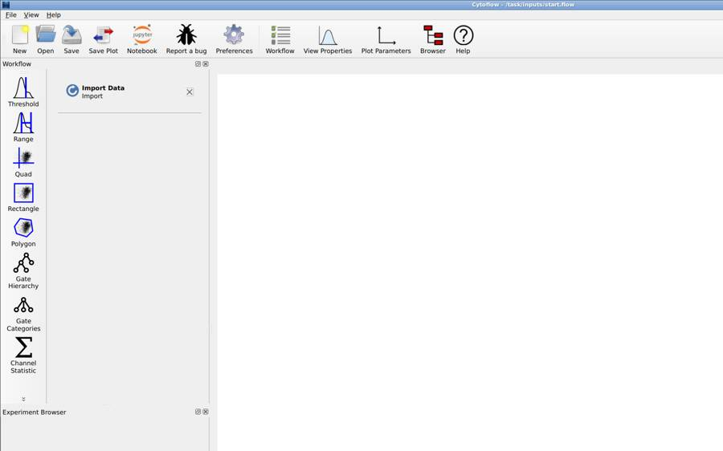
cat /usr/local/bin/start-cytoflow; ls -la /home/cfapp 2>/dev/null; id; ls /opt/cytoflow/cytoflow-1.3.2/_internal/cytoflow/operations/ 2>/dev/null | head -40
#!/bin/bash
# Launch Cytoflow full-screen-ish; restart it if the agent closes it.
BIN=$(find /opt/cytoflow -maxdepth 3 -type f -name 'cytoflow' -perm -u+x | head -1)
[ -z "$BIN" ] && { echo "cytoflow binary not found under /opt/cytoflow"; exit 1; }
while true; do
"$BIN" >/tmp/cytoflow.log 2>&1
sleep 1
done
total 40
drwxr-x--- 7 cfapp cfapp 4096 Nov 5 08:17 .
drwxr-xr-x 5 root root 4096 Nov 5 08:15 ..
-rw-r--r-- 1 cfapp cfapp 220 Mar 31 2024 .bash_logout
-rw-r--r-- 1 cfapp cfapp 3771 Mar 31 2024 .bashrc
drwxr-xr-x 4 cfapp cfapp 4096 Nov 5 08:16 .cache
drwxrwxr-x 2 cfapp cfapp 4096 Nov 5 08:17 .config
drwxrwxr-x 4 cfapp cfapp 4096 Nov 5 08:16 .enthought
drwx------ 3 cfapp cfapp 4096 Nov 5 08:16 .local
-rw-r--r-- 1 cfapp cfapp 807 Mar 31 2024 .profile
drwxrwxr-x 2 cfapp cfapp 4096 Nov 5 08:16 enthought
uid=0(root) gid=0(root) groups=0(root)tail -30 /tmp/cytoflow.log; ls /opt/cytoflow/cytoflow-1.3.2/_internal | head -80 | tr '\n' ' '
QXcbIntegration: Cannot create platform OpenGL context, neither GLX nor EGL are enabled 2026-11-05 08:18:14,242 ERROR:root:Remote process exited with -9 CFP_Well_A4.fcs Cython PIL PyQt5 _DP.cpython-312-x86_64-linux-gnu.so _Logicle.cpython-312-x86_64-linux-gnu.so _cffi_backend.cpython-312-x86_64-linux-gnu.so apptools-5.3.1.dist-info array_api_compat-1.15.0.dist-info attrs-26.1.0.dist-info backports base_library.zip bottleneck bottleneck-1.4.2.dist-info brotlicffi browser.svg bug.svg camel-0.1.2-py3.7.egg-info cbayesian.cpython-312-x86_64-linux-gnu.so certifi cffi-2.0.0.dist-info cimage.cpython-312-x86_64-linux-gnu.so contourpy contourpy-1.3.3.dist-info crbfgs.cpython-312-x86_64-linux-gnu.so cryptography cryptography-49.0.0.dist-info cuvette.jpg cycler-0.12.1.dist-info cython-3.2.5.dist-info cytoflow-1.3.2.dist-info cytoflow.desktop cytoflowgui dateutil dcor-0.7.dist-info density_plot.svg density_plot_2.svg envisage-7.0.3.dist-info export.svg fastjsonschema-2.21.2.dist-info fdasrsf-2.6.10.dist-info findiff-0.13.1.dist-info fontTools fonttools-4.63.0.dist-info fpls_warp.cpython-312-x86_64-linux-gnu.so gear.svg gmpy2 help.svg icon.png icon.svg igraph igraph-0.11.9.dist-info importlib_metadata-8.7.1.dist-info importlib_resources-6.4.0.dist-info ipython.svg joblib-1.5.3.dist-info jsonschema jsonschema-4.25.1.dist-info jsonschema_specifications jsonschema_specifications-2025.9.1.dist-info jupyter.svg jupyter_core-5.9.1.dist-info kiwisolver kiwisolver-1.4.9.dist-info lazy_loader-0.5.dist-info libLerc.so.4 libQt5Bluetooth.so.5 libQt5Core.so.5 libQt5DBus.so.5 libQt5EglFSDeviceIntegration.so.5 libQt5EglFsKmsSupport.so.5 libQt5Gui.so.5 libQt5Multimedia.so.5 libQt5MultimediaGstTools.so.5 libQt5MultimediaWidgets.so.5 libQt5Network.so.5 libQt5OpenGL.so.5 libQt5Pdf.so.5 libQt5Positioning.so.5 libQt5PrintSupport.so.5
ls /opt/cytoflow/cytoflow-1.3.2/_internal/ | grep -i -E "cytoflow|pandas|numpy|PYZ"; ls /opt/cytoflow/cytoflow-1.3.2/_internal/cytoflow 2>/dev/null | head; find /opt/cytoflow -name "experiment*" | head
cytoflow-1.3.2.dist-info cytoflow.desktop cytoflowgui numpy numpy-2.2.5.dist-info pandas pandas-2.3.3.dist-info /opt/cytoflow/cytoflow-1.3.2/_internal/numba/experimental
kill 844; sleep 8; ps -o pid,lstart,cmd -u cfapp | grep -v WebEngine; cu screenshot /tmp/screen.png
{
"file_path": "/tmp/screen.png"
}PID STARTED CMD 838 Thu Nov 5 08:16:02 2026 /bin/bash /usr/local/bin/start-cytoflow 859 Thu Nov 5 08:16:05 2026 [cytoflow] <defunct> 1744 Thu Nov 5 08:27:45 2026 /opt/cytoflow/cytoflow-1.3.2/cytoflow 1755 Thu Nov 5 08:27:47 2026 /opt/cytoflow/cytoflow-1.3.2/cytoflow -B -S -I -c from multiprocessing.resource_tracker import main;main(9) 1757 Thu Nov 5 08:27:47 2026 /opt/cytoflow/cytoflow-1.3.2/cytoflow --multiprocessing-fork tracker_fd=10 pipe_handle=14 /tmp/screen.png

cu click 915 493; sleep 1; cu click 90 75; sleep 2; cu click 1038 744; cu paste "/task/inputs/start.flow"; sleep 0.5; cu key Return; sleep 3; cu screenshot /tmp/screen.png
{
"file_path": "/tmp/screen.png"
}/tmp/screen.png

cu click 836 449; sleep 2; cu click 240 183; sleep 2; cu screenshot /tmp/screen.png
{
"file_path": "/tmp/screen.png"
}/tmp/screen.png

cu click 294 353; sleep 4; cu screenshot /tmp/screen.png
{
"file_path": "/tmp/screen.png"
}/tmp/screen.png

cu click 133 342; sleep 1; cu screenshot /tmp/screen.png
{
"file_path": "/tmp/screen.png"
}/tmp/screen.png

cu click 1189 578; sleep 4; cu screenshot /tmp/screen.png
{
"file_path": "/tmp/screen.png"
}/tmp/screen.png

cu click 139 705; sleep 1.5; cu screenshot /tmp/screen.png
{
"file_path": "/tmp/screen.png"
}/tmp/screen.png
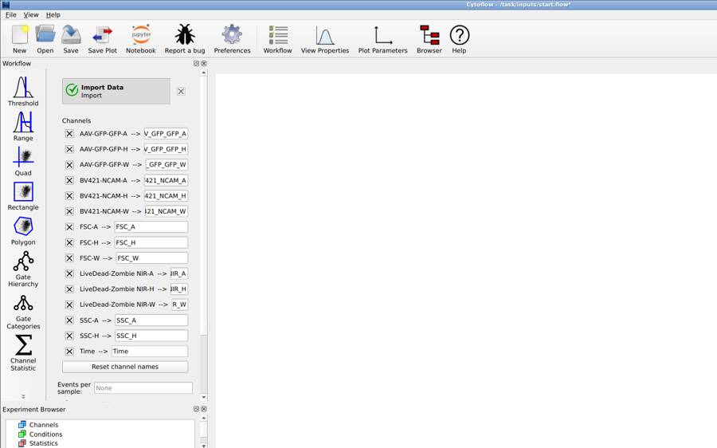
for y in 611 580 518 487 424 393 330 299; do cu click 139 $y; sleep 1.5; done; cu screenshot /tmp/screen.png
{
"file_path": "/tmp/screen.png"
}/tmp/screen.png

(for i in $(seq 1 200); do echo "$(date +%T) $(free -m | awk '/Mem/{print $3, $7}')" >> /tmp/mem.log; sleep 3; done) > /dev/null 2>&1 &
cu click 294 673; echo started; datestarted Thu Nov 5 08:29:34 UTC 2026
/tmp/wait.sh 400; tail -3 /tmp/mem.log; sort -k2 -n /tmp/mem.log | tail -1
waited 18s 08:29:46 4231 3717 08:29:49 6174 1774 08:29:52 4344 3605 08:29:49 6174 1774
{
"file_path": "/tmp/screen.png"
}
ps -o pid,rss,vsz,cmd -u cfapp --sort=-rss | head -4 | cut -c1-150
PID RSS VSZ CMD 1757 3414020 4536032 /opt/cytoflow/cytoflow-1.3.2/cytoflow --multiprocessing-fork tracker_fd=10 pipe_handle=14 1744 557908 3627592 /opt/cytoflow/cytoflow-1.3.2/cytoflow 1821 71948 5163788 /opt/cytoflow/cytoflow-1.3.2/_internal/PyQt5/Qt5/libexec/QtWebEngineProcess --type=zygote --application-name=cytoflow --webengine-
cu click 21 29; sleep 1; cu screenshot /tmp/screen.png
{
"file_path": "/tmp/screen.png"
}/tmp/screen.png
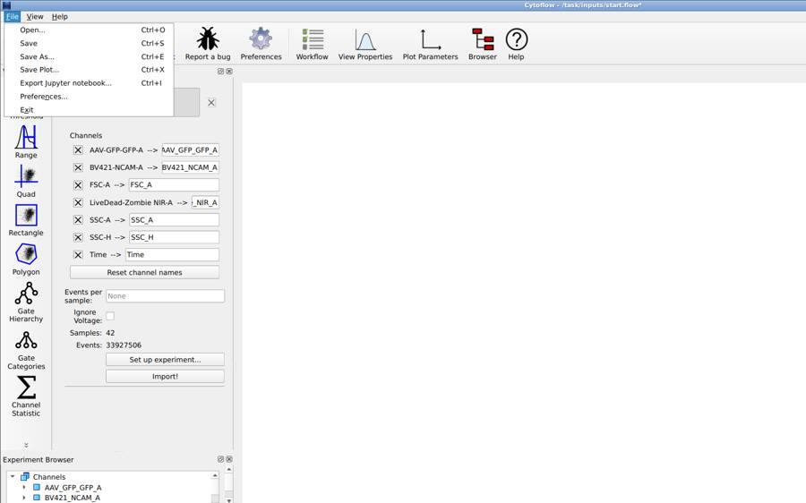
cu click 66 101; sleep 2; cu screenshot /tmp/screen.png
{
"file_path": "/tmp/screen.png"
}/tmp/screen.png
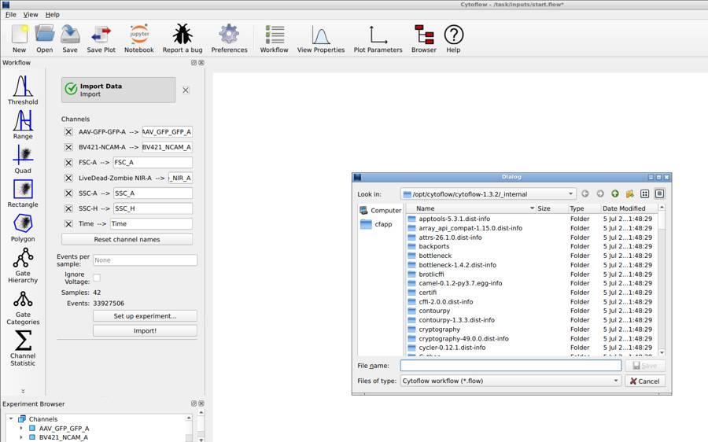
cu click 1038 744; cu paste "/task/outputs/workflow.flow"; sleep 0.5; cu key Return; sleep 3; cu screenshot /tmp/screen.png; ls -la /task/outputs; grep -n -A12 "channels_list" /task/outputs/workflow.flow | head -40
/tmp/screen.png total 28 drwxrwsrwx 2 agent task 4096 Nov 5 08:30 . drwxr-xr-x 4 root root 4096 Nov 5 08:15 .. -rw-rw-r-- 1 cfapp task 18839 Nov 5 08:30 workflow.flow 262: channels_list: 263- - !import-channel;1 264- channel: AAV-GFP-GFP-A 265- name: AAV_GFP_GFP_A 266- - !import-channel;1 267- channel: BV421-NCAM-A 268- name: BV421_NCAM_A 269- - !import-channel;1 270- channel: FSC-A 271- name: FSC_A 272- - !import-channel;1 273- channel: LiveDead-Zombie NIR-A 274- name: LiveDead_Zombie_NIR_A
cu click 46 462; sleep 3; cu screenshot /tmp/screen.png
{
"file_path": "/tmp/screen.png"
}/tmp/screen.png
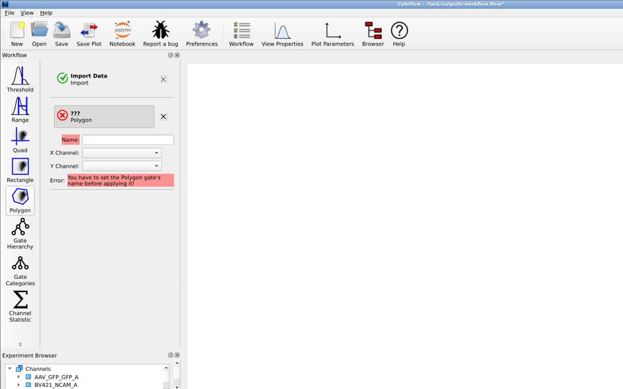
cu click 295 323; cu type "Cells"; cu key Tab; sleep 1; cu click 282 353; sleep 1; cu screenshot /tmp/screen.png
{
"file_path": "/tmp/screen.png"
}/tmp/screen.png
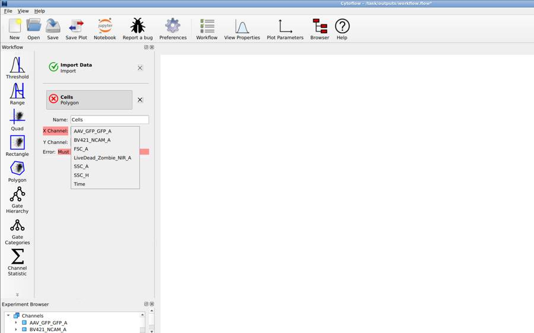
cu click 218 402; sleep 1; cu screenshot /tmp/screen.png
{
"file_path": "/tmp/screen.png"
}/tmp/screen.png
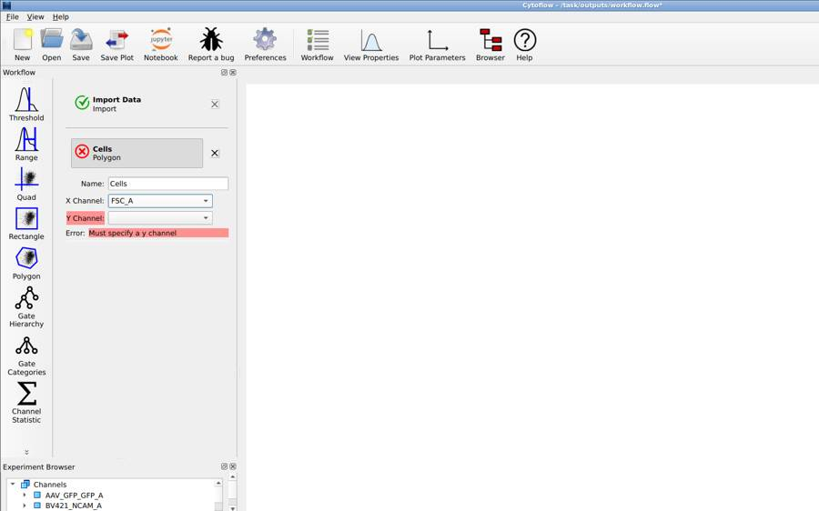
cu click 282 384; sleep 1; cu screenshot /tmp/screen.png
{
"file_path": "/tmp/screen.png"
}/tmp/screen.png
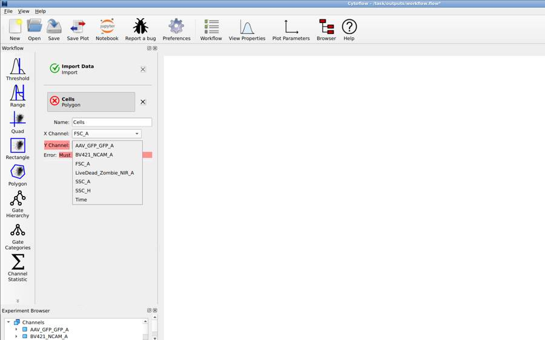
cu click 218 480; sleep 2; cu screenshot /tmp/screen.png
{
"file_path": "/tmp/screen.png"
}/tmp/screen.png
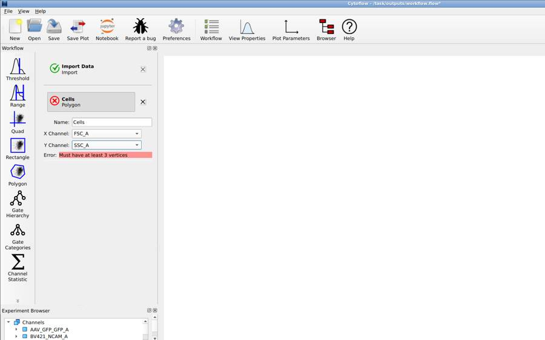
cu click 652 75; sleep 3; cu screenshot /tmp/screen.png
{
"file_path": "/tmp/screen.png"
}/tmp/screen.png

cu click 924 483; sleep 1; pkill -f "^/opt/cytoflow/cytoflow-1.3.2/cytoflow$"; sleep 8; ps -o pid,lstart,cmd -u cfapp | grep -v WebEngine | cut -c1-120; cu screenshot /tmp/screen.png
{
"file_path": "/tmp/screen.png"
}PID STARTED CMD 838 Thu Nov 5 08:16:02 2026 /bin/bash /usr/local/bin/start-cytoflow 859 Thu Nov 5 08:16:05 2026 [cytoflow] <defunct> 1755 Thu Nov 5 08:27:47 2026 [cytoflow] <defunct> 2286 Thu Nov 5 08:31:15 2026 /opt/cytoflow/cytoflow-1.3.2/cytoflow 2302 Thu Nov 5 08:31:18 2026 /opt/cytoflow/cytoflow-1.3.2/cytoflow -B -S -I -c from multiprocessing.resource_tracker i 2304 Thu Nov 5 08:31:18 2026 /opt/cytoflow/cytoflow-1.3.2/cytoflow --multiprocessing-fork tracker_fd=10 pipe_handle=14 /tmp/screen.png

cu click 915 493; sleep 1; cu click 90 75; sleep 2; cu click 1038 744; cu paste "/task/outputs/workflow.flow"; sleep 0.5; cu key Return; sleep 3; cu screenshot /tmp/screen.png
{
"file_path": "/tmp/screen.png"
}/tmp/screen.png

cu click 746 449; sleep 3; /tmp/wait.sh 300; free -m | head -2
waited 18s
total used free shared buff/cache available
Mem: 7949 4373 2801 15 1013 3576cu click 240 183; sleep 2; cu click 652 75; sleep 2; cu screenshot /tmp/screen.png
{
"file_path": "/tmp/screen.png"
}/tmp/screen.png

cu click 652 75; sleep 2; cu screenshot /tmp/screen.png
{
"file_path": "/tmp/screen.png"
}/tmp/screen.png

which xdotool wmctrl xwininfo xprop; cat /usr/local/bin/cu | head -50
/usr/bin/xdotool
/usr/bin/xwininfo
/usr/bin/xprop
#!/bin/bash
# Computer-use helper: the agent's only way to act on the screen.
# cu screenshot [path] -> PNG of the screen (default /tmp/screen.png); prints path
# cu click X Y [left|right|double]
# cu move X Y | cu drag X1 Y1 X2 Y2 | cu scroll X Y up|down [N]
# cu type "text" (keystrokes) | cu paste "text" (clipboard) | cu key KEYS (e.g. ctrl+s, Return)
# cu cursor -> current mouse position
export DISPLAY=${DISPLAY:-:1}
cmd=$1; shift
case "$cmd" in
screenshot) out=${1:-/tmp/screen.png}; scrot -o "$out" && echo "$out" ;;
click) xdotool mousemove "$1" "$2"; case "${3:-left}" in
left) xdotool click 1;; right) xdotool click 3;; double) xdotool click --repeat 2 1;; esac ;;
move) xdotool mousemove "$1" "$2" ;;
drag) xdotool mousemove "$1" "$2" mousedown 1 mousemove --sync "$3" "$4" mouseup 1 ;;
scroll) xdotool mousemove "$1" "$2"; b=$([ "$3" = up ] && echo 4 || echo 5); xdotool click --repeat "${4:-3}" $b ;;
type) xdotool type --delay 50 -- "$1" ;;
# paste: put text on the clipboard (detached owner process so it survives this command) then ctrl+v
# paste: own the clipboard (no -loops: Qt asks for TARGETS first, then the text), press ctrl+v,
# give Qt a moment to fetch it, then release. Robust both locally and on Modal.
paste) printf '%s' "$1" | xclip -quiet -selection clipboard -i >/dev/null 2>&1 & cp=$!
sleep 0.3; xdotool key ctrl+v; sleep 1; kill $cp 2>/dev/null; true ;;
key) xdotool key -- "$1" ;;
cursor) xdotool getmouselocation ;;
*) sed -n '2,9p' "$0"; exit 1 ;;
esacexport DISPLAY=:1; for w in $(xdotool search --name "Cytoflow"); do echo "== $w $(xdotool getwindowname $w)"; xdotool getwindowgeometry $w; done
== 14680068 Qt Selection Owner for cytoflow Window 14680068 Position: 0,0 (screen: 0) Geometry: 3x3 == 14680072 cytoflow Window 14680072 Position: 0,0 (screen: 0) Geometry: 1x1 == 14680070 Cytoflow - /task/outputs/workflow.flow Window 14680070 Position: 2,40 (screen: 0) Geometry: 2082x1171
export DISPLAY=:1; xdotool windowmove 14680070 0 0; xdotool windowsize 14680070 1440 900; sleep 2; xdotool getwindowgeometry 14680070; cu screenshot /tmp/screen.png
{
"file_path": "/tmp/screen.png"
}Window 14680070 Position: 1,20 (screen: 0) Geometry: 1440x900 /tmp/screen.png
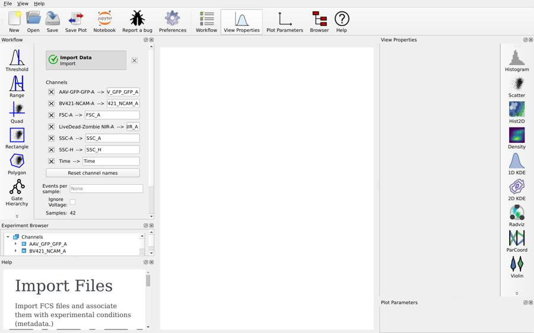
cu click 408 708; sleep 1; cu click 46 442; sleep 3; cu screenshot /tmp/screen.png
{
"file_path": "/tmp/screen.png"
}/tmp/screen.png
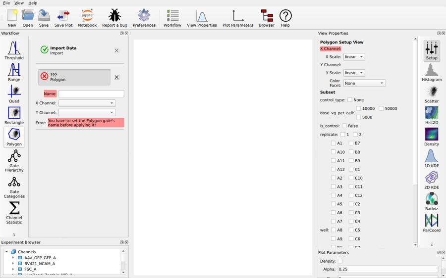
cu click 1076 604; sleep 1; cu click 295 303; cu type "Cells"; cu key Tab; sleep 1; cu click 281 333; sleep 1; cu screenshot /tmp/screen.png
{
"file_path": "/tmp/screen.png"
}/tmp/screen.png
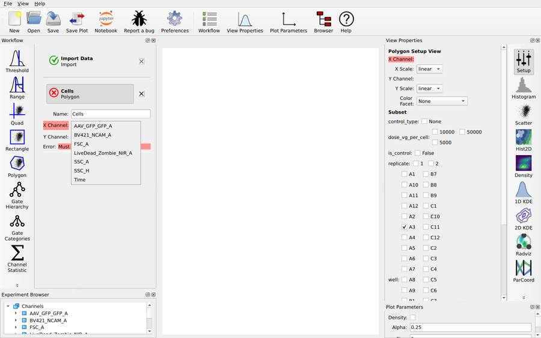
cu click 216 383; sleep 1; cu click 281 364; sleep 1; cu screenshot /tmp/screen.png
{
"file_path": "/tmp/screen.png"
}/tmp/screen.png
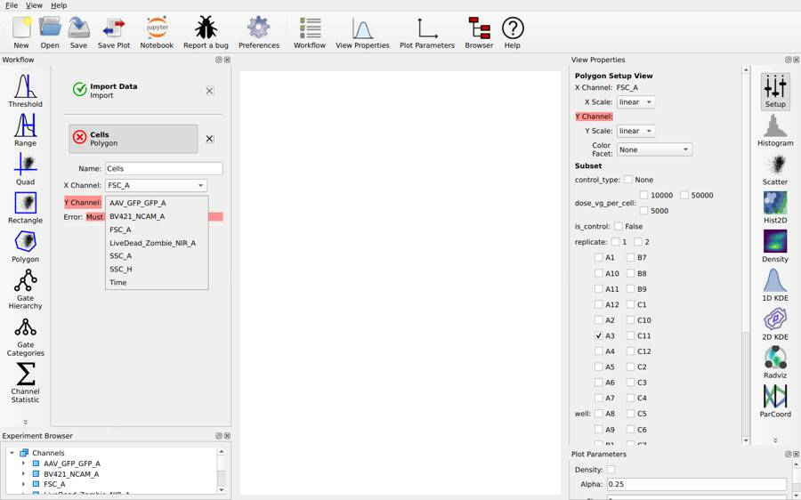
cu click 216 460; sleep 8; cu screenshot /tmp/screen.png; free -m | sed -n 2p
{
"file_path": "/tmp/screen.png"
}/tmp/screen.png Mem: 7949 4711 2313 15 1163 3238
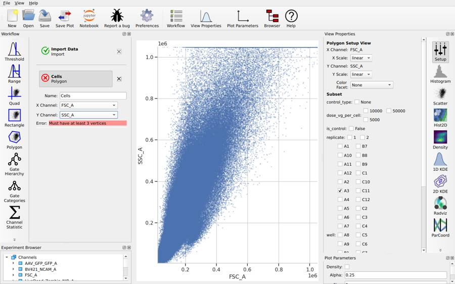
cu click 1098 845; sleep 8; cu screenshot /tmp/screen.png
{
"file_path": "/tmp/screen.png"
}/tmp/screen.png
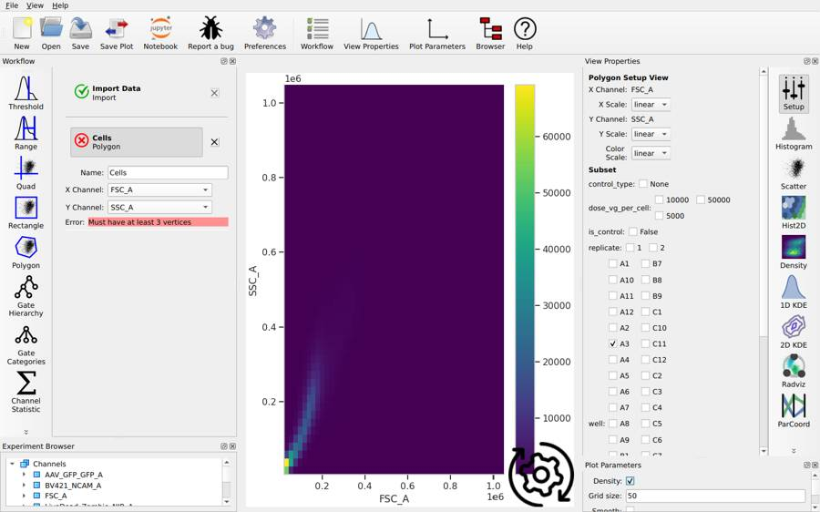
cu click 1142 269; sleep 1; cu screenshot /tmp/screen.png
{
"file_path": "/tmp/screen.png"
}/tmp/screen.png
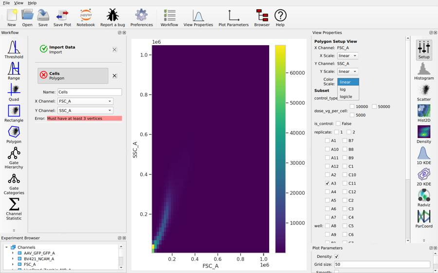
cu click 1127 294; sleep 2; cu click 1255 871; cu key ctrl+a; cu type "150"; cu key Return; sleep 8; cu screenshot /tmp/screen.png
{
"file_path": "/tmp/screen.png"
}/tmp/screen.png
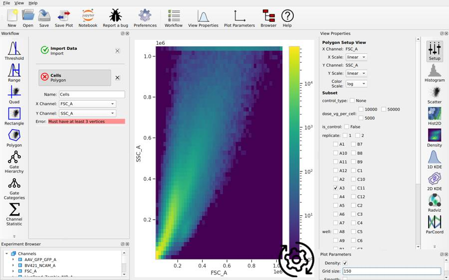
sleep 6; cu screenshot /tmp/screen.png
{
"file_path": "/tmp/screen.png"
}/tmp/screen.png
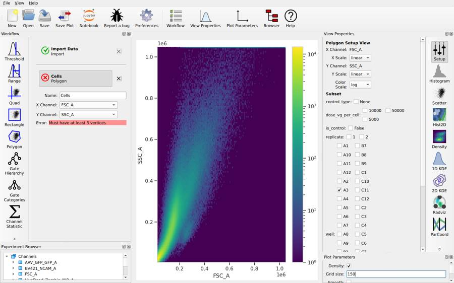
cu click 1142 183; sleep 1; cu screenshot /tmp/s2.png
{
"file_path": "/tmp/s2.png"
}/tmp/s2.png
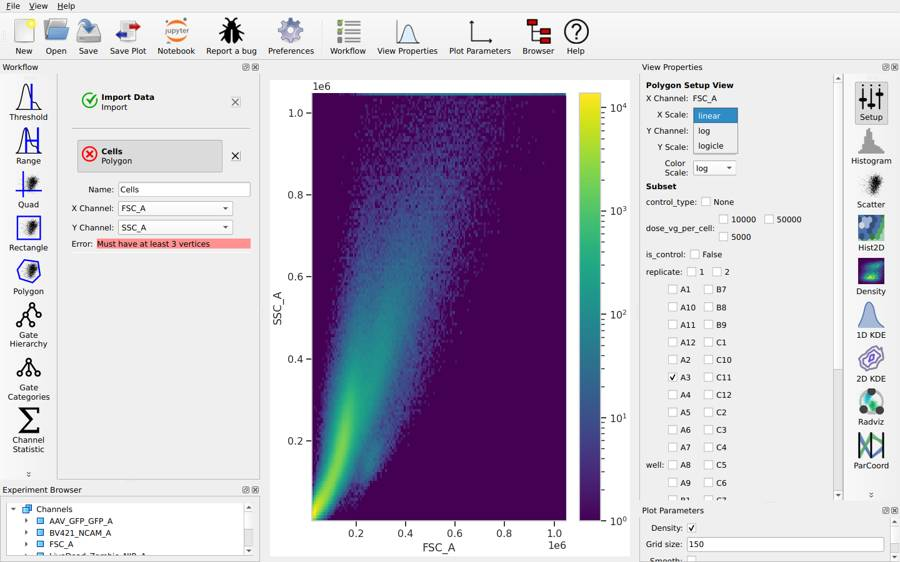
cu click 1127 209; sleep 2; cu click 1142 235; sleep 1; cu screenshot /tmp/s2.png
{
"file_path": "/tmp/s2.png"
}/tmp/s2.png
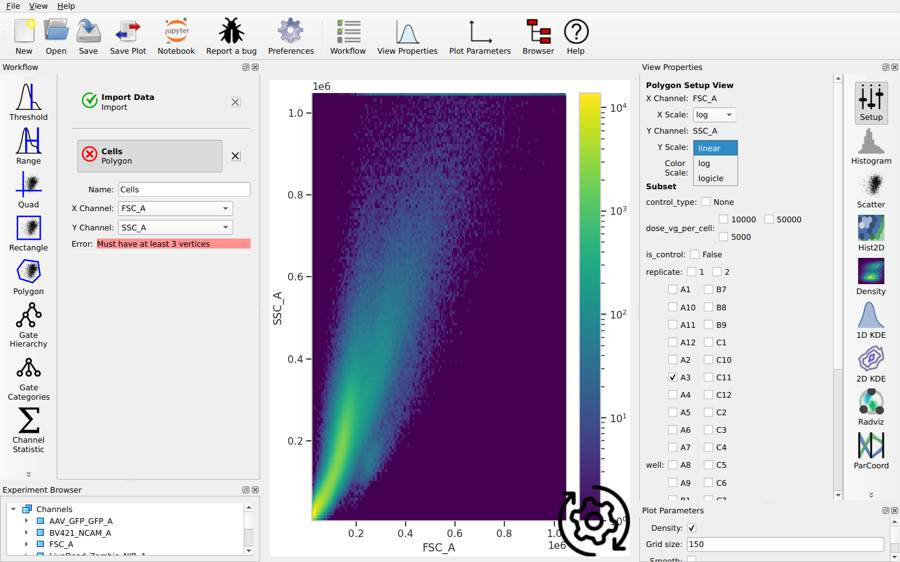
cu click 1127 261; sleep 15; cu screenshot /tmp/screen.png
{
"file_path": "/tmp/screen.png"
}/tmp/screen.png
cd /tmp; python3 -I -c "
from PIL import Image
im=Image.open('/tmp/screen.png').crop((432,128,1008,890)); im=im.resize((im.width*2//1, im.height*2//1)); im.save('/tmp/crop.png')
" 2>/dev/null || python3 -I -c "
import matplotlib.image as m; import matplotlib.pyplot as plt
a=m.imread('/tmp/screen.png')[128:890,432:1008]; plt.imsave('/tmp/crop.png',a)
"; echo okok Shell cwd was reset to /task
{
"file_path": "/tmp/crop.png"
}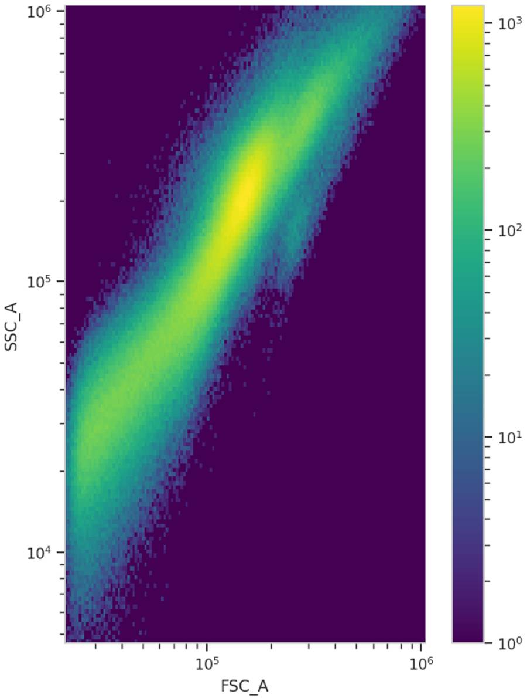
python3 -I -c " import math V=[(4.5e4,1.3e5),(6e4,4e5),(2.2e5,1.0e6),(1.0e6,1.0e6),(1.0e6,4e5),(5e5,1.2e5),(1.6e5,4e4)] for x,y in V: print(round(658+234*(math.log10(x)-5)), round(435-296*(math.log10(y)-5))) "
577 401 606 257 738 139 892 139 892 257 822 412 706 553
for p in "577 401" "606 257" "738 139" "892 139" "892 257" "822 412"; do cu click $p; sleep 0.7; done; cu click 706 553 double; sleep 4; cu screenshot /tmp/screen.png
{
"file_path": "/tmp/screen.png"
}/tmp/screen.png

export DISPLAY=:1; xdotool mousemove 706 553; sleep 0.3; xdotool click --repeat 2 --delay 80 1; sleep 4; cu screenshot /tmp/screen.png
{
"file_path": "/tmp/screen.png"
}/tmp/screen.png
export DISPLAY=:1; xdotool mousemove 800 700; cu key Escape; sleep 2; cu screenshot /tmp/screen.png
{
"file_path": "/tmp/screen.png"
}/tmp/screen.png
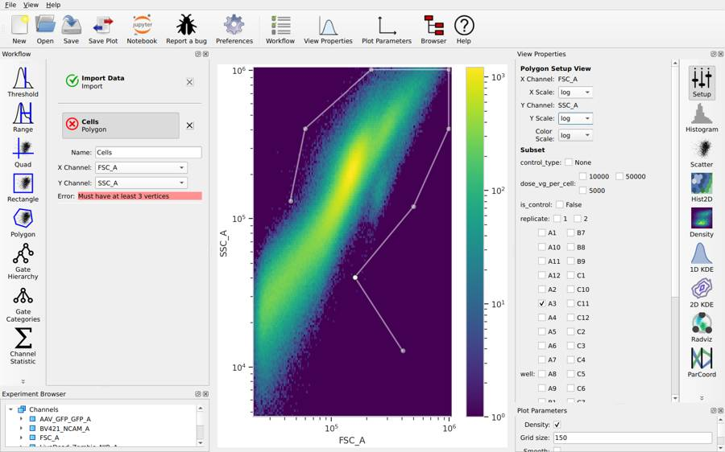
cu click 577 401; sleep 6; cu screenshot /tmp/screen.png
{
"file_path": "/tmp/screen.png"
}/tmp/screen.png
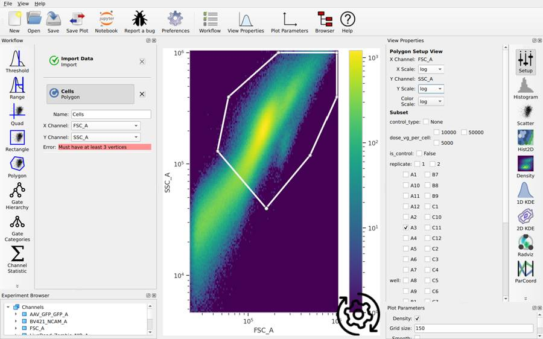
/tmp/wait.sh 300; cu key ctrl+s; sleep 3; grep -n -B2 -A30 "polygon" /task/outputs/workflow.flow | head -60
waited 3s 1073- - 40 1074- - 41 1075: current_view: &id002 !polygon-view;3 1076- current_plot: null 1077- huefacet: '' 1078- huescale: log 1079: op: &id001 !polygon;1 1080- name: Cells 1081- vertices: 1082- - !!python/tuple 1083- - 44876.03810990434 1084- - 131067.66183169173 1085- - !!python/tuple 1086- - 59827.160397337895 1087- - 401855.3702446836 1088- - !!python/tuple 1089- - 220463.14480312244 1090- - 1005764.9493967581 1091- - !!python/tuple 1092- - 1007944.2636745794 1093- - 1005764.9493967581 1094- - !!python/tuple 1095- - 1007944.2636745794 1096- - 401855.3702446836 1097- - !!python/tuple 1098- - 506532.39817134815 1099- - 119870.03992889509 1100- - !!python/tuple 1101- - 160351.01014021423 1102- - 40060.29342718811 1103- - !!python/tuple 1104- - 160351.01014021423 1105- - 40060.29342718811 1106- - !!python/tuple 1107- - 160351.01014021423 1108- - 40060.29342718811 1109- - !!python/tuple -- 1114- ychannel: SSC_A 1115- yscale: log 1116: plot_params: !polygon-params;1 1117- alpha: 0.25 1118- col_wrap: null 1119- density: true 1120- despine: true 1121- gridsize: 150 1122- huelabel: '' 1123- legend: true 1124- marker: o 1125- max_quantile: 1.0 1126- min_quantile: 0.001 1127- s: 2 1128- sharex: true 1129- sharey: true 1130- smoothed: false 1131- smoothed_sigma: 1.0 1132- sns_context: notebook 1133- sns_style: whitegrid 1134- title: '' 1135- xlabel: ''
for p in "577 401" "606 257" "738 139" "892 139" "892 257" "822 412" "706 553"; do cu click $p; sleep 0.8; done; sleep 0.5; cu click 577 401; sleep 5; /tmp/wait.sh 200; cu key ctrl+s; sleep 3; awk '/!polygon;1/,/ychannel/' /task/outputs/workflow.flow
waited 7s
op: &id001 !polygon;1
name: Cells
vertices:
- !!python/tuple
- 44876.04254073624
- 131067.66143231008
- !!python/tuple
- 59827.168626776824
- 401855.36861084367
- !!python/tuple
- 220463.21394562552
- 1005764.944468702
- !!python/tuple
- 1007944.7866043205
- 1005764.944468702
- !!python/tuple
- 1007944.7866043205
- 401855.36861084367
- !!python/tuple
- 506532.61391397566
- 119870.03957336675
- !!python/tuple
- 160351.05353858534
- 40060.293348289655
xchannel: FSC_A
xscale: log
ychannel: SSC_A{
"file_path": "/tmp/screen.png"
}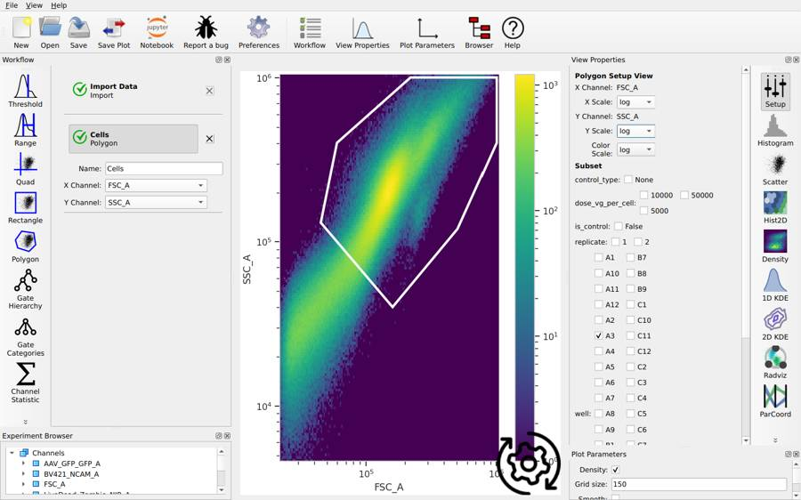
cu click 46 442; sleep 3; cu screenshot /tmp/screen.png
{
"file_path": "/tmp/screen.png"
}/tmp/screen.png
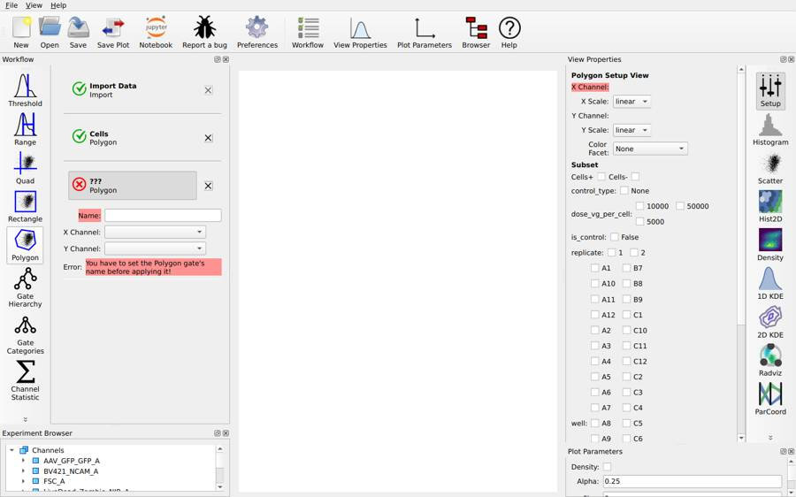
cu click 1088 320; sleep 0.5; cu click 1076 626; sleep 0.5; cu click 1098 845; sleep 0.5; cu click 295 390; cu type "Singlets"; cu key Tab; sleep 1; cu click 281 420; sleep 1; cu screenshot /tmp/screen.png
{
"file_path": "/tmp/screen.png"
}/tmp/screen.png
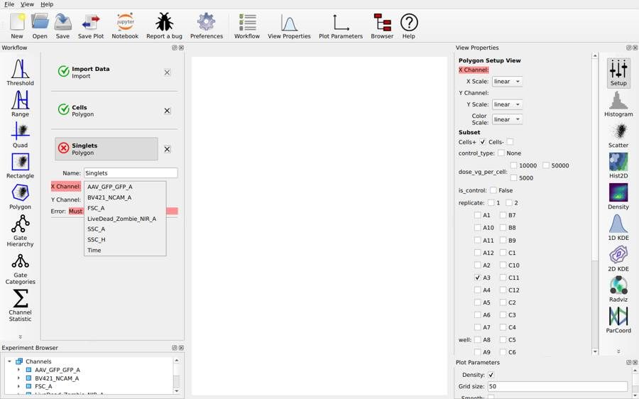
cu click 216 540; sleep 1; cu click 1142 269; sleep 1; cu click 1127 294; sleep 1; cu click 1255 871; cu key ctrl+a; cu type "150"; cu key Tab; sleep 1; cu click 281 450; sleep 1; cu screenshot /tmp/screen.png
{
"file_path": "/tmp/screen.png"
}/tmp/screen.png
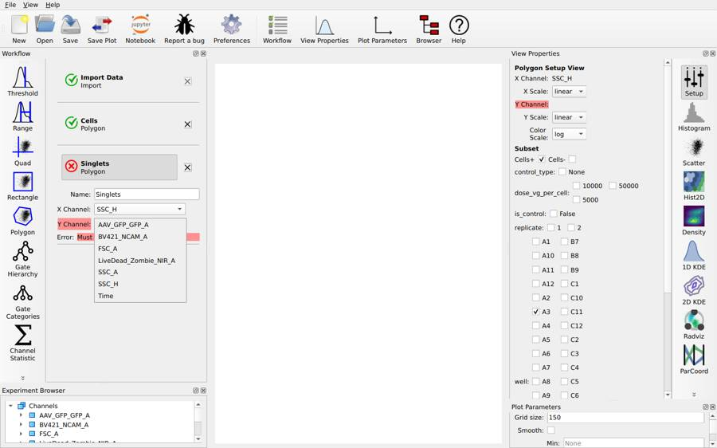
cu click 216 546; sleep 15; cu screenshot /tmp/screen.png
{
"file_path": "/tmp/screen.png"
}/tmp/screen.png
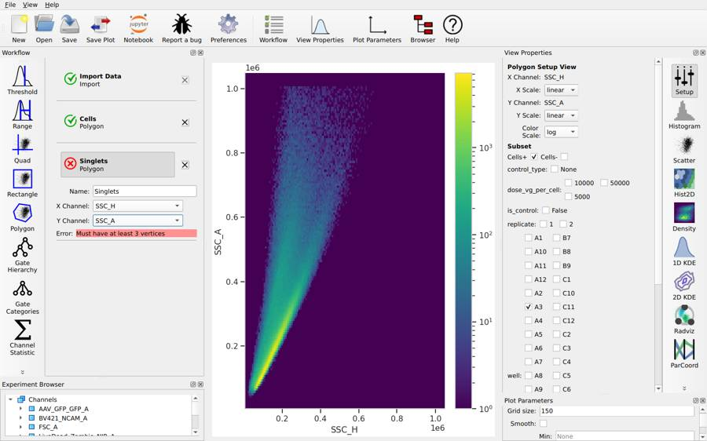
cu click 1142 183; sleep 1; cu click 1127 209; sleep 2; cu click 1142 235; sleep 1; cu click 1127 261; sleep 15; cu screenshot /tmp/screen.png
{
"file_path": "/tmp/screen.png"
}/tmp/screen.png
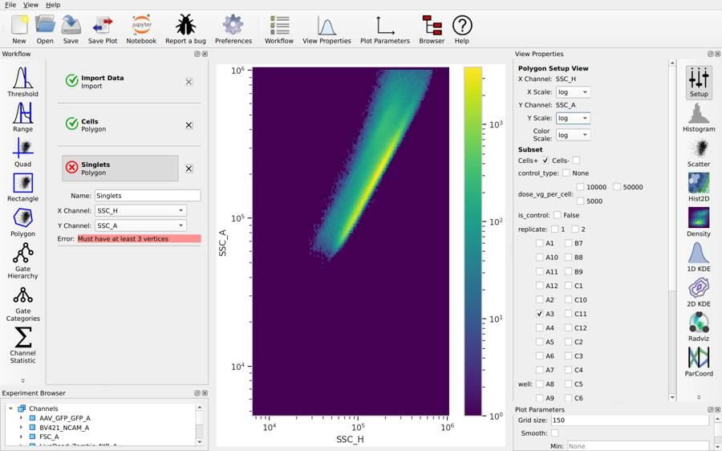
python3 -I -c "
from PIL import Image
im=Image.open('/tmp/screen.png').crop((500,128,900,560)); im=im.resize((im.width*2, im.height*2)); im.save('/tmp/crop.png')
"(Bash completed with no output)
{
"file_path": "/tmp/crop.png"
}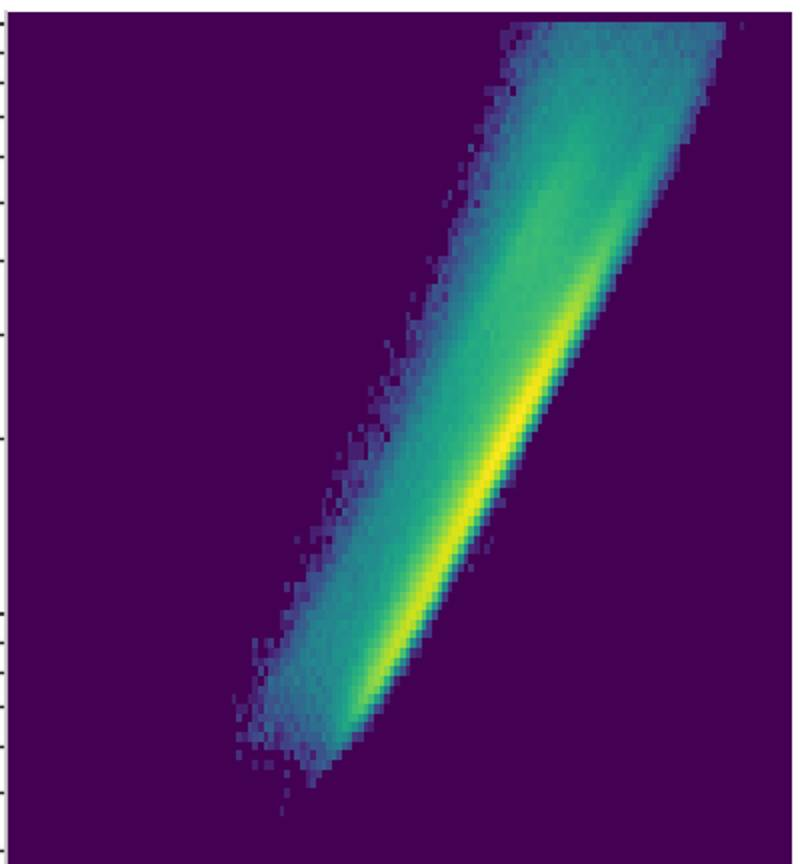
cat > /tmp/band.py <<'EOF'
import numpy as np, matplotlib.image as m, sys
im=(m.imread('/tmp/screen.png')[:,:,:3]*255).astype(float)
lum=0.299*im[:,:,0]+0.587*im[:,:,1]+0.114*im[:,:,2]
def xd(px): return 10**(4+(px-537)/177.5)
def yd(py): return 10**(5+(435-py)/295.5)
for py in range(480,150,-25):
row=lum[py,505:895]
bg=row.min()
pk=row.argmax(); pv=row[pk]
half=bg+(pv-bg)*0.5
# left half-max and right half-max around peak
l=pk
while l>0 and row[l]>half: l-=1
r=pk
while r<len(row)-1 and row[r]>half: r+=1
nz=np.where(row>bg+8)[0]
y=yd(py)
print(py, f"SSC_A={y:.3g}", "peak SSC_H=%.3g ratio=%.2f"%(xd(505+pk), y/xd(505+pk)),
"halfL ratio=%.2f halfR ratio=%.2f"%(y/xd(505+l), y/xd(505+r)),
"data range ratio %.2f..%.2f"%(y/xd(505+nz[0]), y/xd(505+nz[-1])) if len(nz) else '')
EOF
python3 -I /tmp/band.py480 SSC_A=7.04e+04 peak SSC_H=6.31e+04 ratio=1.12 halfL ratio=1.71 halfR ratio=1.01 data range ratio 2.46..0.96 455 SSC_A=8.56e+04 peak SSC_H=7.76e+04 ratio=1.10 halfL ratio=1.63 halfR ratio=0.99 data range ratio 2.70..0.91 430 SSC_A=1.04e+05 peak SSC_H=9.19e+04 ratio=1.13 halfL ratio=1.56 halfR ratio=1.02 data range ratio 2.56..0.97 405 SSC_A=1.26e+05 peak SSC_H=1.09e+05 ratio=1.16 halfL ratio=1.61 halfR ratio=1.05 data range ratio 2.92..0.99 380 SSC_A=1.54e+05 peak SSC_H=1.29e+05 ratio=1.19 halfL ratio=1.63 halfR ratio=1.03 data range ratio 3.07..0.94 355 SSC_A=1.87e+05 peak SSC_H=1.52e+05 ratio=1.22 halfL ratio=1.74 halfR ratio=1.06 data range ratio 3.41..1.01 330 SSC_A=2.27e+05 peak SSC_H=1.83e+05 ratio=1.24 halfL ratio=1.90 halfR ratio=1.12 data range ratio 3.37..1.06 305 SSC_A=2.75e+05 peak SSC_H=2.16e+05 ratio=1.27 halfL ratio=2.31 halfR ratio=1.12 data range ratio 3.55..1.05 280 SSC_A=3.35e+05 peak SSC_H=2.56e+05 ratio=1.31 halfL ratio=2.70 halfR ratio=1.13 data range ratio 3.50..1.08 255 SSC_A=4.07e+05 peak SSC_H=3.03e+05 ratio=1.34 halfL ratio=3.08 halfR ratio=1.13 data range ratio 3.59..1.10 230 SSC_A=4.94e+05 peak SSC_H=2.03e+05 ratio=2.44 halfL ratio=3.60 halfR ratio=1.16 data range ratio 4.54..1.13 205 SSC_A=6e+05 peak SSC_H=2.66e+05 ratio=2.25 halfL ratio=3.99 halfR ratio=1.23 data range ratio 4.48..1.19 180 SSC_A=7.29e+05 peak SSC_H=2.84e+05 ratio=2.57 halfL ratio=4.85 halfR ratio=1.21 data range ratio 4.78..1.19 155 SSC_A=8.86e+05 peak SSC_H=2.84e+05 ratio=3.12 halfL ratio=5.11 halfR ratio=1.32 data range ratio 5.38..1.34
python3 -I -c " import math V=[(3.0e4,2.6e4),(1.0e6,8.7e5),(1.0e6,1.0e6),(5.9e5,1.0e6),(2.5e5,4.1e5),(8.0e4,1.2e5),(3.0e4,4.5e4)] for x,y in V: print(round(537+177.5*(math.log10(x)-4)), round(435-295.5*(math.log10(y)-5)), round(y/x,2)) "
622 608 0.87 892 157 0.87 892 140 1.0 851 140 1.69 785 254 1.64 697 412 1.5 622 537 1.5
for p in "622 608" "892 157" "892 140" "851 140" "785 254" "697 412" "622 537"; do cu click $p; sleep 0.8; done; sleep 0.5; cu click 622 608; sleep 5; /tmp/wait.sh 200; cu screenshot /tmp/screen.png; cu key ctrl+s; sleep 3; awk '/name: Singlets/,/ychannel/' /task/outputs/workflow.flow
waited 8s
/tmp/screen.png
name: Singlets
vertices:
- !!python/tuple
- 30246.540279384426
- 26052.020821829472
- !!python/tuple
- 1010515.558310032
- 876105.0698087766
- !!python/tuple
- 1010515.558310032
- 1005764.9493967581
- !!python/tuple
- 587755.5022883514
- 1005764.9493967581
- !!python/tuple
- 250337.71245127014
- 411763.14939705696
- !!python/tuple
- 80223.02744357262
- 119870.03992889509
- !!python/tuple
- 30246.540279384426
- 45248.33766235699
xchannel: SSC_H
xscale: log
ychannel: SSC_A{
"file_path": "/tmp/screen.png"
}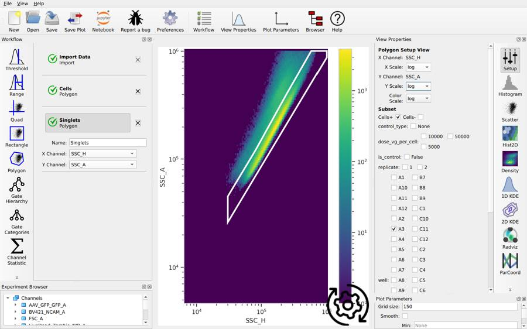
free -m | sed -n 2p; ps -o pid,rss -u cfapp --sort=-rss | head -3
Mem: 7949 4683 2220 15 1284 3266 PID RSS 2304 3853576 2286 586352
cu click 46 372; sleep 3; cu screenshot /tmp/screen.png
{
"file_path": "/tmp/screen.png"
}/tmp/screen.png
cu click 1088 320; sleep 0.4; cu click 1107 342; sleep 0.4; cu click 1076 648; sleep 0.4; cu click 1098 845; sleep 0.4; cu click 1142 183; sleep 1; cu click 1137 233; sleep 1; cu screenshot /tmp/screen.png
{
"file_path": "/tmp/screen.png"
}/tmp/screen.png
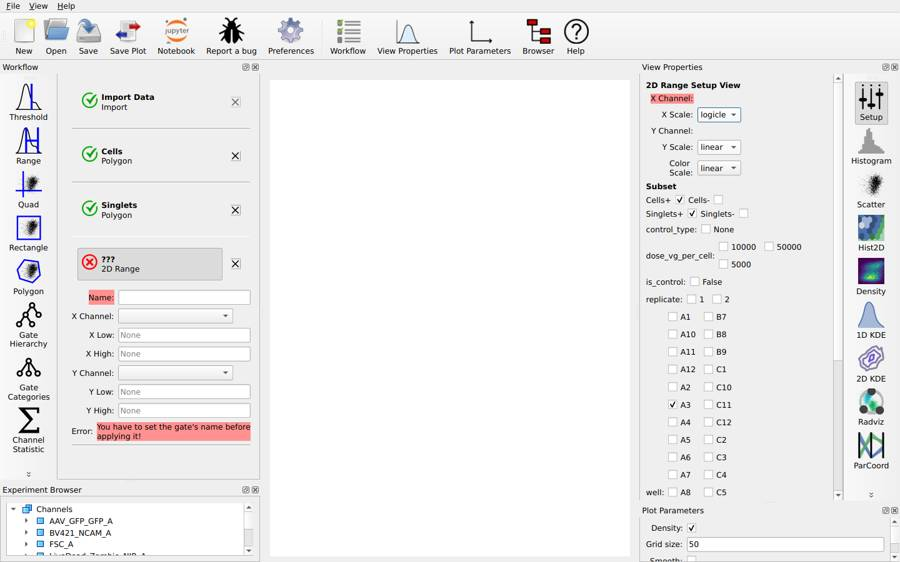
cu click 1150 269; sleep 1; cu click 1135 294; sleep 1; cu click 1255 871; cu key ctrl+a; cu type "150"; cu key Tab; sleep 0.5; cu click 295 476; cu type "Live"; cu key Tab; sleep 1; cu click 281 506; sleep 1; cu screenshot /tmp/screen.png
{
"file_path": "/tmp/screen.png"
}/tmp/screen.png
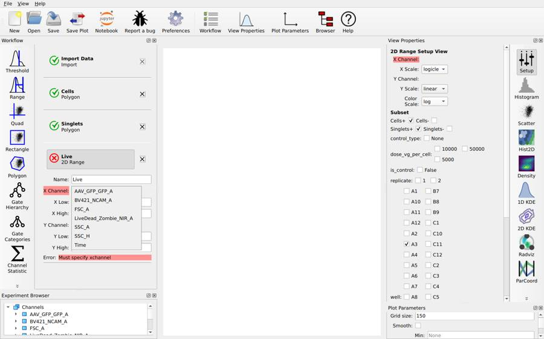
cu click 274 579; sleep 1; cu click 281 597; sleep 1; cu screenshot /tmp/screen.png
{
"file_path": "/tmp/screen.png"
}/tmp/screen.png
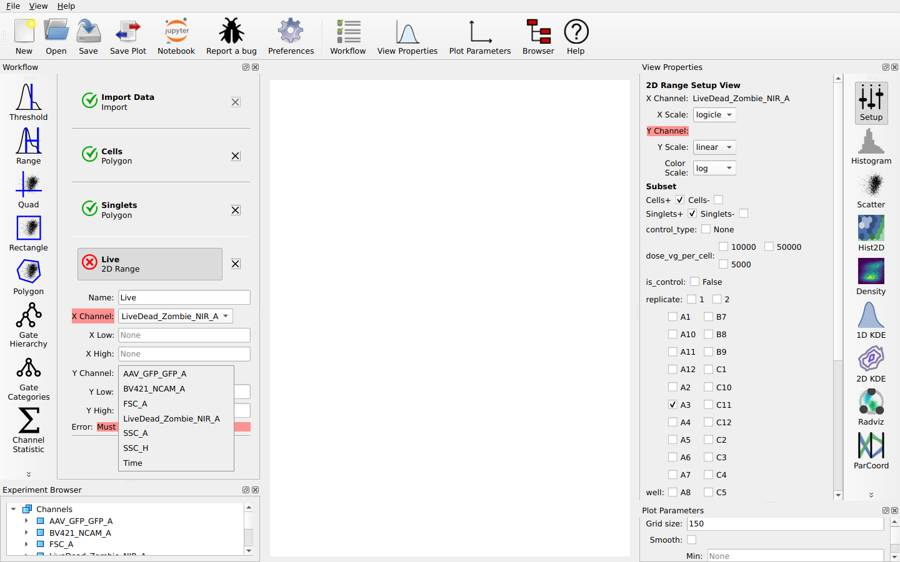
cu click 216 693; sleep 15; cu screenshot /tmp/screen.png
{
"file_path": "/tmp/screen.png"
}/tmp/screen.png
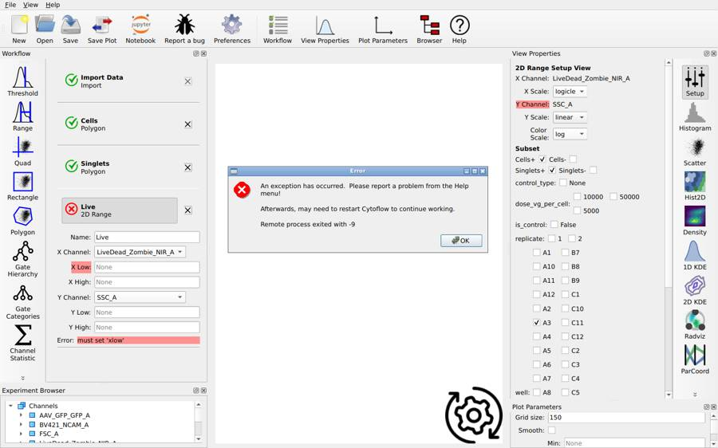
tail -40 /tmp/cytoflow.log | cut -c1-300; tail -5 /tmp/mem.log; dmesg | grep -i "killed process" | tail -3
QXcbIntegration: Cannot create platform OpenGL context, neither GLX nor EGL are enabled 2026-11-05 08:40:05,114 ERROR:root:Remote process exited with -9 08:39:20 4696 3253 08:39:23 4687 3262 08:39:26 4681 3268 08:39:29 4681 3268 08:39:32 4681 3268 [ 131.823598] Out of memory: Killed process 861 (cytoflow) total-vm:8566148kB, anon-rss:7303632kB, file-rss:8kB, shmem-rss:28kB, UID:1002 pgtables:14872kB oom_score_adj:0 [ 890.709754] Out of memory: Killed process 1757 (cytoflow) total-vm:9174588kB, anon-rss:7179932kB, file-rss:8kB, shmem-rss:28kB, UID:1002 pgtables:14640kB oom_score_adj:0 [ 1442.699450] Out of memory: Killed process 2304 (cytoflow) total-vm:10266280kB, anon-rss:7227640kB, file-rss:8kB, shmem-rss:28kB, UID:1002 pgtables:14812kB oom_score_adj:0
date; awk '{print $1, $2}' /tmp/mem.log | awk 'NR%3==0' | tr '\n' ' ' | fold -w 200Thu Nov 5 08:40:48 UTC 2026 08:29:40 4129 08:29:49 6174 08:29:58 4355 08:30:07 4306 08:30:16 4271 08:30:25 4262 08:30:34 4327 08:30:43 4376 08:30:52 7601 08:31:01 1063 08:31:10 1062 08:31:19 951 08:31:28 1287 08:31:37 1332 08:31 :46 4251 08:31:55 5051 08:32:04 4287 08:32:13 4385 08:32:22 4365 08:32:31 4333 08:32:40 4325 08:32:49 4337 08:32:58 4346 08:33:07 4702 08:33:16 4832 08:33:25 4851 08:33:34 4954 08:33:43 4942 08:33:52 4682 08:34:01 4640 08:34:10 4923 08:34:19 4641 08:34:28 4637 08:34:37 4642 08:34:46 4639 08:34:55 4649 08:35:04 4630 08:35:13 4630 08:35:22 4634 08:35:31 4634 08:35:40 4642 08:35:49 5935 08:35:58 5058 08:36:07 4762 08:36:16 4690 08:36:25 5958 08:36:34 5231 08:36:44 4715 08:36:53 4690 08:37:02 4657 08:37:11 4666 08:37:20 4799 08:37:29 4728 08:37:38 4938 08:37:47 5023 08:37:56 4709 08:38:05 4674 08: 38:14 4673 08:38:23 4696 08:38:32 4668 08:38:41 4662 08:38:50 4661 08:38:59 4898 08:39:08 4793 08:39:17 4709 08:39:26 4681
cu click 924 483; sleep 1; pkill -f "^/opt/cytoflow/cytoflow-1.3.2/cytoflow$"; sleep 8; export DISPLAY=:1;
(for i in $(seq 1 3000); do echo "$(date +%T) $(free -m | awk '/Mem/{print $3}') $(ps -o rss= -p $(pgrep -f 'multiprocessing-fork' | head -1) 2>/dev/null)" >> /tmp/mem2.log; sleep 1; done) >/dev/null 2>&1 &
W=$(xdotool search --name "Cytometry analysis" | head -1); echo $W; xdotool windowmove $W 0 0; xdotool windowsize $W 1440 900; sleep 2; cu screenshot /tmp/screen.png{
"file_path": "/tmp/screen.png"
}14680070 /tmp/screen.png

cu click 915 493; sleep 1; cu click 408 708; sleep 1; cu click 89 60; sleep 2; cu screenshot /tmp/screen.png
{
"file_path": "/tmp/screen.png"
}/tmp/screen.png
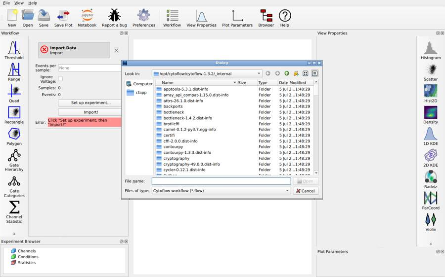
cu click 715 588; cu paste "/task/outputs/workflow.flow"; sleep 0.5; cu key Return; sleep 3; cu screenshot /tmp/screen.png
{
"file_path": "/tmp/screen.png"
}/tmp/screen.png
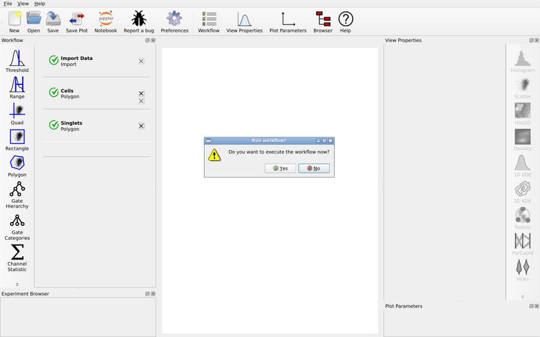
cu click 836 449; sleep 2; cu click 240 163; sleep 2; cu screenshot /tmp/screen.png
{
"file_path": "/tmp/screen.png"
}/tmp/screen.png
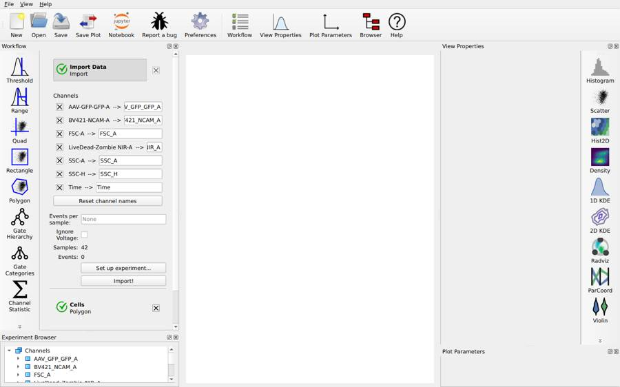
cu click 138 279; sleep 1.5; cu screenshot /tmp/screen.png
{
"file_path": "/tmp/screen.png"
}/tmp/screen.png
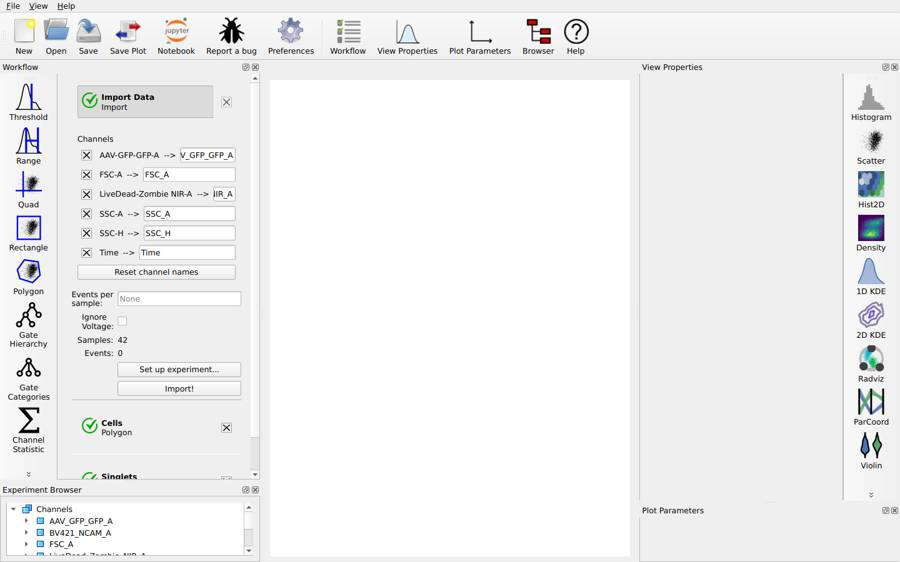
cu click 286 622; sleep 5; /tmp/wait.sh 300; tail -3 /tmp/mem2.log
waited 33s 08:42:51 4353 3350544 08:42:52 4301 3350544 08:42:53 4281 3350544
cu screenshot /tmp/screen.png; awk '{print $1,$2,int($3/1024)}' /tmp/mem2.log | tail -60 | tr '\n' '|'/tmp/screen.png 08:41:57 1216 321|08:41:58 1215 321|08:41:59 1214 321|08:42:00 1214 321|08:42:01 1212 321|08:42:02 1213 321|08:42:03 1212 321|08:42:04 1212 321|08:42:05 1226 321|08:42:06 1222 321|08:42:07 1219 321|08:42:08 1218 321|08:42:09 1216 321|08:42:10 1214 321|08:42:11 1214 321|08:42:12 1230 321|08:42:13 1228 321|08:42:14 1229 321|08:42:15 1616 723|08:42:16 2046 1169|08:42:17 3666 2742|08:42:18 3685 2746|08:42:19 3700 2756|08:42:20 3811 2778|08:42:21 3815 2786|08:42:22 3821 2809|08:42:23 3827 2826|08:42:24 3826 2805|08:42:25 3883 2850|08:42:26 3872 2865|08:42:27 3873 2873|08:42:29 3861 2881|08:42:30 5597 4740|08:42:31 4627 3672|08:42:32 4727 3635|08:42:33 5227 4444|08:42:34 5355 4445|08:42:35 5393 4517|08:42:36 5467 4557|08:42:37 5418 4465|08:42:38 5488 4537|08:42:39 4203 3261|08:42:40 4311 3239|08:42:41 4941 4155|08:42:42 5467 4492|08:42:43 5503 4564|08:42:44 5418 4469|08:42:45 5469 4542|08:42:46 5506 4582|08:42:47 4507 3523|08:42:48 4387 3343|08:42:49 4382 3272|08:42:50 4367 3272|08:42:51 4353 3272|08:42:52 4301 3272|08:42:53 4281 3272|08:42:54 4281 3272|08:42:55 4273 3272|08:42:56 4265 3272|08:42:57 4233 3272|
{
"file_path": "/tmp/screen.png"
}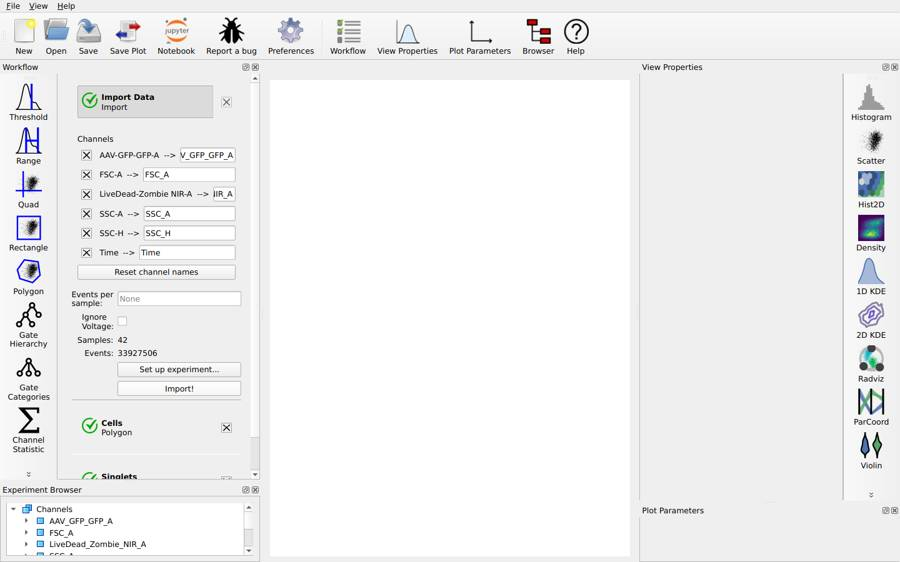
cu key ctrl+s; sleep 3; grep -c "import-channel" /task/outputs/workflow.flow; cu scroll 250 600 down 10; sleep 1; cu screenshot /tmp/screen.png
{
"file_path": "/tmp/screen.png"
}6 /tmp/screen.png
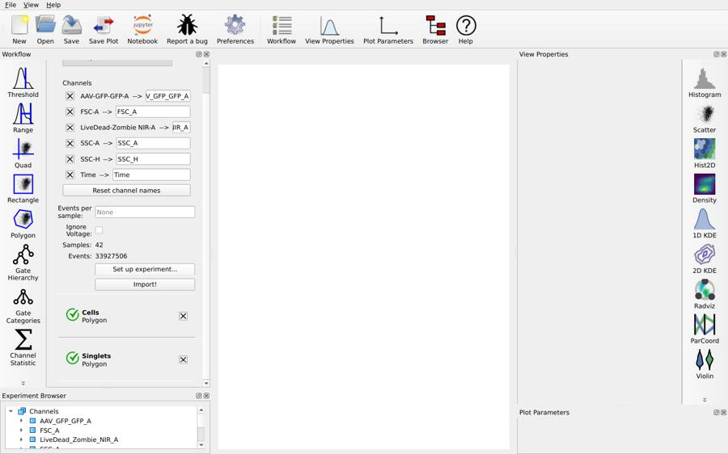
cu click 250 712; sleep 2; cu click 46 372; sleep 3; cu screenshot /tmp/screen.png
{
"file_path": "/tmp/screen.png"
}/tmp/screen.png
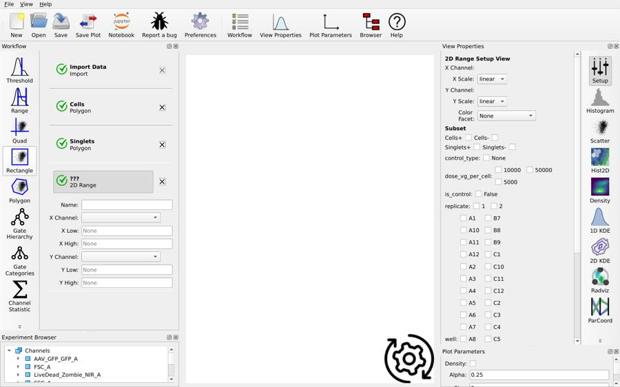
sleep 5; cu screenshot /tmp/screen.png; tail -3 /tmp/mem2.log
{
"file_path": "/tmp/screen.png"
}/tmp/screen.png 08:43:26 4751 3939708 08:43:27 4588 3649636 08:43:28 4581 3649636
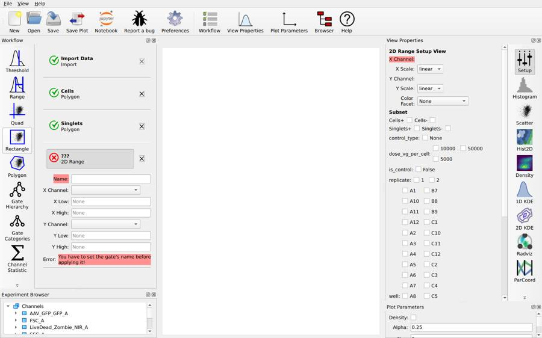
cu click 1088 320; sleep 0.4; cu click 1107 342; sleep 0.4; cu click 1076 648; sleep 0.4; cu click 1098 845; sleep 0.4; cu click 1142 269; sleep 1; cu screenshot /tmp/screen.png
{
"file_path": "/tmp/screen.png"
}/tmp/screen.png
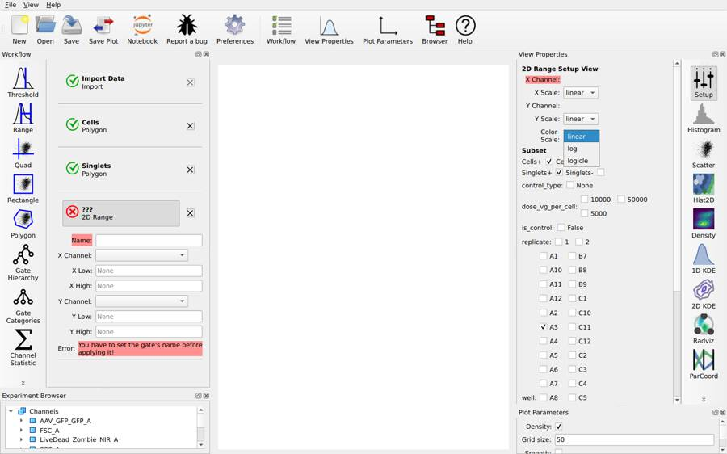
cu click 1134 294; sleep 1; cu click 1255 871; cu key ctrl+a; cu type "150"; cu key Tab; sleep 0.5; cu click 295 476; cu type "Live"; cu key Tab; sleep 1; cu click 281 506; sleep 1; cu click 274 555; sleep 1; cu screenshot /tmp/screen.png
{
"file_path": "/tmp/screen.png"
}/tmp/screen.png
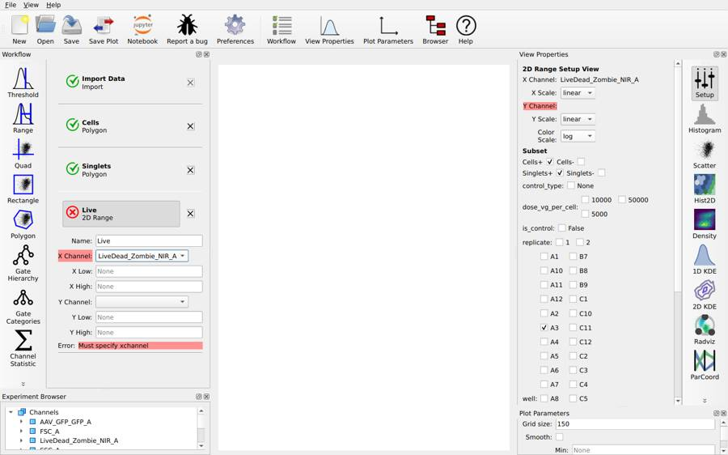
cu click 281 597; sleep 1; cu screenshot /tmp/screen.png
{
"file_path": "/tmp/screen.png"
}/tmp/screen.png
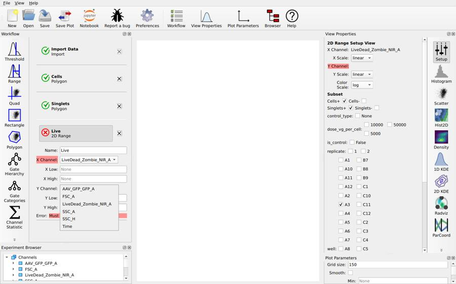
cu click 216 670; sleep 15; cu screenshot /tmp/screen.png; awk '{print $1,$2,int($3/1024)}' /tmp/mem2.log | tail -20 | tr '\n' '|'{
"file_path": "/tmp/screen.png"
}/tmp/screen.png 08:43:52 4487 3564|08:43:53 4496 3564|08:43:54 4496 3564|08:43:55 4496 3564|08:43:56 4496 3564|08:43:57 4574 3750|08:43:58 7054 2|08:43:59 978 2|08:44:00 977 2|08:44:01 977 2|08:44:02 984 2|08:44:03 984 2|08:44:04 985 2|08:44:05 985 2|08:44:06 985 2|08:44:07 985 2|08:44:08 985 2|08:44:09 985 2|08:44:10 985 2|08:44:11 985 2|
cat > /tmp/restart.sh <<'EOF' #!/bin/bash export DISPLAY=:1 cu click 924 483; sleep 1 pkill -f "^/opt/cytoflow/cytoflow-1.3.2/cytoflow$"; sleep 9 W=$(xdotool search --name "Cytometry analysis" | head -1) xdotool windowmove $W 0 0; xdotool windowsize $W 1440 900; sleep 2 cu click 915 493; sleep 1; cu click 408 708; sleep 1 cu click 89 60; sleep 2 cu click 715 588; cu paste "/task/outputs/workflow.flow"; sleep 0.5; cu key Return; sleep 4 cu click 746 449; sleep 5 /tmp/wait.sh 300 EOF chmod +x /tmp/restart.sh; /tmp/restart.sh
{
"file_path": "/tmp/screen.png"
}waited 33s

cu click 250 336; sleep 2; cu click 1393 160; sleep 3; cu screenshot /tmp/screen.png; tail -1 /tmp/mem2.log
{
"file_path": "/tmp/screen.png"
}/tmp/screen.png 08:46:09 4507 2664
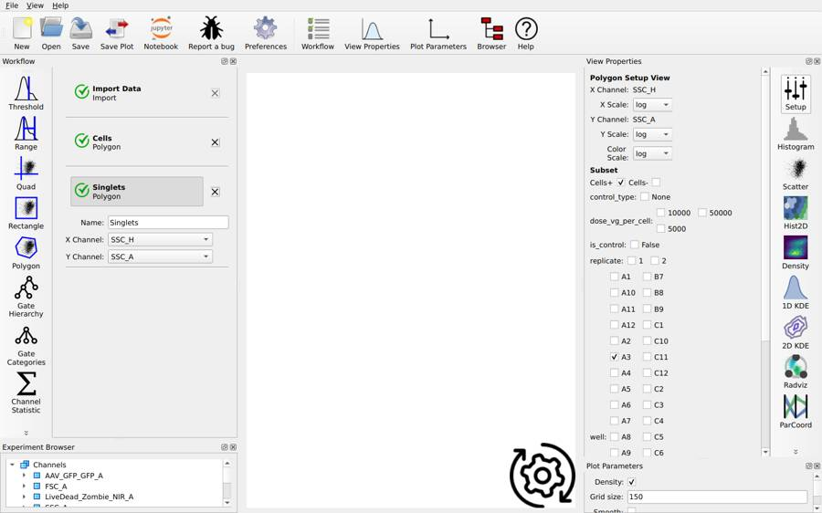
sleep 8; cu click 1393 230; sleep 3; cu screenshot /tmp/screen.png; tail -1 /tmp/mem2.log
{
"file_path": "/tmp/screen.png"
}/tmp/screen.png 08:46:26 4537 2664
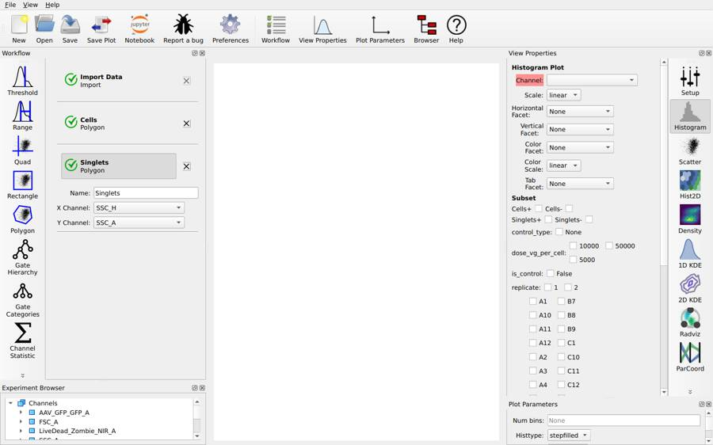
cu click 1088 422; sleep 0.4; cu click 1107 444; sleep 0.4; cu click 1076 750; sleep 0.4; cu click 1138 192; sleep 1; cu screenshot /tmp/screen.png
{
"file_path": "/tmp/screen.png"
}/tmp/screen.png
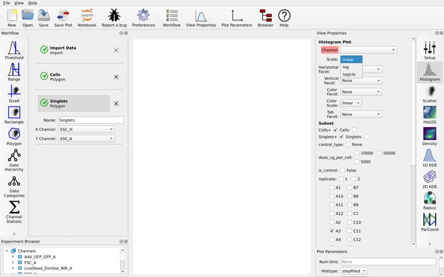
cu click 1132 241; sleep 1; cu click 1195 162; sleep 1; cu screenshot /tmp/screen.png
{
"file_path": "/tmp/screen.png"
}/tmp/screen.png
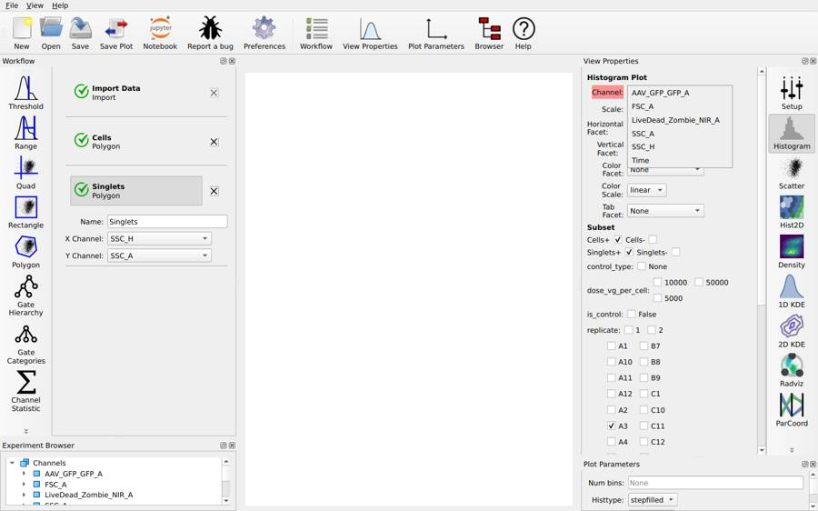
cu click 1188 211; sleep 12; cu screenshot /tmp/screen.png; awk '{print $1,$2,int($3/1024)}' /tmp/mem2.log | tail -14 | tr '\n' '|'{
"file_path": "/tmp/screen.png"
}/tmp/screen.png 08:46:42 4475 2|08:46:43 4475 2|08:46:44 4731 2|08:46:45 4643 2|08:46:46 4716 2|08:46:47 4630 2|08:46:48 4702 2|08:46:49 4742 2|08:46:50 4574 2|08:46:51 4569 2|08:46:52 4561 2|08:46:53 4554 2|08:46:54 4547 2|08:46:55 4540 2|
thinking
The A3 Zombie NIR histogram shows a dim shoulder and a large peak, and I'm checking Zombie against SSC-A in a scatter view to separate live from dead cells next.
cu click 1393 300; sleep 3; cu screenshot /tmp/screen.png
{
"file_path": "/tmp/screen.png"
}/tmp/screen.png
cu click 1393 440; sleep 3; cu screenshot /tmp/screen.png
{
"file_path": "/tmp/screen.png"
}/tmp/screen.png
cu click 1088 446; sleep 0.3; cu click 1107 468; sleep 0.3; cu click 1076 774; sleep 0.3; cu click 1142 358; sleep 1; cu screenshot /tmp/s2.png
{
"file_path": "/tmp/s2.png"
}/tmp/s2.png
cu click 1127 384; sleep 1; cu click 1142 192; sleep 1; cu click 1137 241; sleep 1; cu click 1142 252; sleep 1; cu screenshot /tmp/s2.png
{
"file_path": "/tmp/s2.png"
}/tmp/s2.png
cu click 1127 277; sleep 1; cu click 1200 162; sleep 1; cu screenshot /tmp/s2.png
{
"file_path": "/tmp/s2.png"
}/tmp/s2.png
cu click 1193 211; sleep 1; cu click 1200 222; sleep 1; cu screenshot /tmp/s2.png
{
"file_path": "/tmp/s2.png"
}/tmp/s2.png
cu click 1137 295; sleep 12; cu screenshot /tmp/screen.png; awk '{print $1,$2}' /tmp/mem2.log | tail -12 | tr '\n' '|'{
"file_path": "/tmp/screen.png"
}/tmp/screen.png 08:48:06 4497|08:48:07 4641|08:48:08 4712|08:48:09 4753|08:48:10 4655|08:48:11 4729|08:48:12 4982|08:48:13 4581|08:48:14 4581|08:48:15 4576|08:48:16 4568|08:48:17 4541|
thinking
Density views look fine too: Zombie vs SSC-A shows a dim population and a major one near 10⁴. I'm plotting Zombie vs GFP next to see which population is live.
cu click 1200 222; sleep 1; cu click 1167 223; sleep 1; cu click 1142 252; sleep 1; cu click 1137 301; sleep 12; cu screenshot /tmp/screen.png
{
"file_path": "/tmp/screen.png"
}/tmp/screen.png
cu click 1200 222; sleep 1; cu screenshot /tmp/s2.png
{
"file_path": "/tmp/s2.png"
}/tmp/s2.png
cu click 1167 151; sleep 2; cu click 1142 252; sleep 1; cu screenshot /tmp/s2.png
{
"file_path": "/tmp/s2.png"
}/tmp/s2.png
cu click 1137 278; sleep 14; cu screenshot /tmp/screen.png
{
"file_path": "/tmp/screen.png"
}/tmp/screen.png
cu click 1076 774; sleep 0.5; cu scroll 1180 600 down 3; sleep 1; cu screenshot /tmp/s2.png
{
"file_path": "/tmp/s2.png"
}/tmp/s2.png
cu click 1076 642; sleep 15; tail -4 /tmp/mem2.log; cu screenshot /tmp/screen.png
{
"file_path": "/tmp/screen.png"
}08:49:48 989 2664 08:49:49 989 2664 08:49:50 989 2664 08:49:51 981 2664 /tmp/screen.png
/tmp/restart.sh
{
"file_path": "/tmp/screen.png"
}waited 34s
cu click 250 336; sleep 10; cu click 1393 230; sleep 3; cu screenshot /tmp/screen.png
{
"file_path": "/tmp/screen.png"
}/tmp/screen.png
cu click 1076 722; sleep 0.3; cu click 1076 750; sleep 0.3; cu click 1076 693; sleep 0.3; cu click 1133 778; sleep 0.3; cu click 1088 422; sleep 0.3; cu click 1107 444; sleep 0.3; cu click 1138 192; sleep 1; cu click 1132 241; sleep 1; cu click 1170 298; sleep 1; cu screenshot /tmp/screen.png
{
"file_path": "/tmp/screen.png"
}/tmp/screen.png
cu click 1124 275; sleep 1; cu click 1148 880; sleep 1; cu screenshot /tmp/screen.png
{
"file_path": "/tmp/screen.png"
}/tmp/screen.png
cu click 1128 864; sleep 1; cu click 1195 162; sleep 1; cu click 1188 211; sleep 15; cu screenshot /tmp/screen.png
{
"file_path": "/tmp/screen.png"
}/tmp/screen.png
thinking
The NIR histograms look consistent across wells, with a dim shoulder near 0–500 and a main peak near 8×10³. Next I'll check where the GFP⁺ cells sit in the high-dose wells A12 and C12 to tell which population is live.
cu click 1393 440; sleep 3; cu screenshot /tmp/s2.png
{
"file_path": "/tmp/s2.png"
}/tmp/s2.png
cu click 1076 717; sleep 0.3; cu click 1088 446; sleep 0.3; cu click 1107 468; sleep 0.3; cu click 1142 358; sleep 1; cu click 1127 384; sleep 1; cu click 1142 192; sleep 1; cu click 1137 241; sleep 1; cu click 1142 252; sleep 1; cu click 1127 277; sleep 1; cu click 1200 162; sleep 1; cu click 1193 211; sleep 1; cu click 1200 222; sleep 1; cu screenshot /tmp/s2.png
{
"file_path": "/tmp/s2.png"
}/tmp/s2.png
cu click 1167 223; sleep 15; cu screenshot /tmp/screen.png
{
"file_path": "/tmp/screen.png"
}/tmp/screen.png
thinking
GFP⁺ events in A12 mostly sit near Zombie ≈10⁴, but the GFP-negative population also rises with Zombie, so that's ambiguous. Next I'm checking Zombie against FSC-A, since dead cells tend to be smaller.
cu click 1200 222; sleep 1; cu screenshot /tmp/s2.png
{
"file_path": "/tmp/s2.png"
}/tmp/s2.png
cu click 1137 247; sleep 15; cu screenshot /tmp/screen.png
{
"file_path": "/tmp/screen.png"
}/tmp/screen.png
thinking
Zombie-dim events have FSC similar to or slightly above the 10⁴ peak, so they look like intact cells and fit the dim-live, bright-dead reading. I'm now locating the valley between the two populations precisely from the histograms.
cu click 1393 230; sleep 15; cu screenshot /tmp/hist4.png; cp /tmp/hist4.png /tmp/screen.png
{
"file_path": "/tmp/hist4.png"
}/tmp/hist4.png
python3 -I -c "
from PIL import Image
im=Image.open('/tmp/hist4.png').crop((505,700,760,860)); im=im.resize((im.width*4, im.height*4), Image.NEAREST); im.save('/tmp/crop.png')
"(Bash completed with no output)
{
"file_path": "/tmp/crop.png"
}thinking
The plateau ends and the dead peak's rise begins around 300–550 across wells, so I'm setting the Live upper edge at 500 and adding the Live rectangle now, after switching to Histogram view.
cu key ctrl+s; sleep 2; cu click 46 372; sleep 3; cu click 1393 230; sleep 2; cu screenshot /tmp/screen.png
{
"file_path": "/tmp/screen.png"
}/tmp/screen.png
cu click 295 476; cu type "Live"; cu key Tab; sleep 1; cu click 281 506; sleep 1; cu click 274 555; sleep 1.5; cu click 295 536; cu key ctrl+a; cu type "-1000000"; cu key Tab; sleep 1; cu click 295 566; cu key ctrl+a; cu type "500"; cu key Tab; sleep 1; cu screenshot /tmp/screen.png
{
"file_path": "/tmp/screen.png"
}/tmp/screen.png
cu click 281 597; sleep 1; cu click 216 670; sleep 1.5; cu click 295 627; cu key ctrl+a; cu type "0"; cu key Tab; sleep 1; cu click 295 657; cu key ctrl+a; cu type "1048576"; cu key Tab; sleep 3; cu screenshot /tmp/screen.png; tail -2 /tmp/mem2.log
{
"file_path": "/tmp/screen.png"
}/tmp/screen.png 08:55:47 4817 2664 08:55:48 4857 2664
/tmp/wait.sh 200; tail -2 /tmp/mem2.log
{
"file_path": "/tmp/screen.png"
}waited 3s 08:55:55 4633 2664 08:55:56 4623 2664
cu key ctrl+s; sleep 3; awk '/!range2d;/,/yscale/' /task/outputs/workflow.flow | head -20; cu click 1076 750; sleep 0.3; cu click 1088 422; sleep 0.3; cu click 1107 444; sleep 0.3; cu click 1138 192; sleep 1; cu click 1132 241; sleep 1; cu click 1170 298; sleep 1; cu screenshot /tmp/screen.png
{
"file_path": "/tmp/screen.png"
} operation: &id008 !range2d;1
name: Live
xchannel: LiveDead_Zombie_NIR_A
xhigh: 500.0
xlow: -1000000.0
ychannel: SSC_A
yhigh: 1048576.0
ylow: 0.0
statistics:
Conditions: !pandas-dataframe;1
columns: []
data: {}
index: !pandas-multiindex;2
codes:
- - 0
- 0
- 0
- 0
- 0
- 0
/tmp/screen.pngcu click 1125 132; sleep 1; cu click 1195 162; sleep 1; cu click 1188 211; sleep 15; cu screenshot /tmp/screen.png
{
"file_path": "/tmp/screen.png"
}/tmp/screen.png
cu click 1170 298; sleep 1; cu click 1124 275; sleep 1; cu scroll 1180 600 down 2; sleep 1; cu screenshot /tmp/s2.png
{
"file_path": "/tmp/s2.png"
}/tmp/s2.png
sleep 8; cu click 1170 173; sleep 1; cu screenshot /tmp/s2.png
{
"file_path": "/tmp/s2.png"
}/tmp/s2.png
cu click 1124 341; sleep 10; cu scroll 1180 400 up 5; sleep 1; cu screenshot /tmp/s2.png
{
"file_path": "/tmp/s2.png"
}/tmp/s2.png
cu click 46 162; sleep 3; cu screenshot /tmp/screen.png
{
"file_path": "/tmp/screen.png"
}/tmp/screen.png
cu click 295 562; cu type "GFP_pos"; cu key Tab; sleep 1; cu click 1088 290; sleep 0.3; cu click 1083 311; sleep 0.3; cu click 1107 333; sleep 0.3; cu click 1076 696; sleep 0.3; cu click 1076 555; sleep 0.3; cu click 1140 205; sleep 1; cu screenshot /tmp/s2.png
{
"file_path": "/tmp/s2.png"
}/tmp/s2.png
cu click 1135 255; sleep 1; cu click 1175 239; sleep 1; cu screenshot /tmp/s2.png
{
"file_path": "/tmp/s2.png"
}/tmp/s2.png
cu click 1128 215; sleep 1; cu scroll 1180 600 down 5; sleep 1; cu screenshot /tmp/s2.png
{
"file_path": "/tmp/s2.png"
}/tmp/s2.png
cu click 1076 724; sleep 0.3; cu click 1076 583; sleep 0.3; cu click 1133 470; sleep 0.3; cu click 1133 330; sleep 0.3; cu click 1133 724; sleep 0.3; cu click 280 593; sleep 1; cu screenshot /tmp/s2.png
{
"file_path": "/tmp/s2.png"
}/tmp/s2.png
cu click 245 594; sleep 18; cu screenshot /tmp/screen.png; tail -1 /tmp/mem2.log
{
"file_path": "/tmp/screen.png"
}/tmp/screen.png 08:58:35 4516 2664
cu scroll 1180 400 up 10; sleep 1; cu click 1140 205; sleep 1; cu click 1125 231; sleep 15; cu screenshot /tmp/screen.png
{
"file_path": "/tmp/screen.png"
}/tmp/screen.png
cu click 1140 205; sleep 1; cu screenshot /tmp/s2.png
{
"file_path": "/tmp/s2.png"
}/tmp/s2.png
cu click 1125 183; sleep 15; cu screenshot /tmp/screen.png
{
"file_path": "/tmp/screen.png"
}/tmp/screen.png
cu click 1393 440; sleep 3; cu screenshot /tmp/s2.png
{
"file_path": "/tmp/s2.png"
}/tmp/s2.png
cu click 1076 711; sleep 0.3; cu click 1088 446; sleep 0.3; cu click 1083 468; sleep 0.3; cu click 1107 489; sleep 0.3; cu click 1142 358; sleep 1; cu click 1127 384; sleep 1; cu click 1142 192; sleep 1; cu click 1127 218; sleep 1; cu click 1142 252; sleep 1; cu click 1127 277; sleep 1; cu click 1255 850; cu key ctrl+a; cu type "150"; cu key Tab; sleep 0.5; cu click 1200 162; sleep 1; cu screenshot /tmp/s2.png
{
"file_path": "/tmp/s2.png"
}/tmp/s2.png
cu click 1167 163; sleep 1; cu click 1200 222; sleep 1; cu click 1137 295; sleep 15; cu screenshot /tmp/screen.png
{
"file_path": "/tmp/screen.png"
}/tmp/screen.png
cu click 1175 285; sleep 1; cu screenshot /tmp/s2.png
{
"file_path": "/tmp/s2.png"
}/tmp/s2.png
cu click 1130 262; sleep 1; cu scroll 1180 600 down 5; sleep 1; cu screenshot /tmp/s2.png
{
"file_path": "/tmp/s2.png"
}/tmp/s2.png
sleep 5; cu click 1076 539; sleep 0.5; cu click 1076 736; sleep 0.5; cu click 1133 624; sleep 20; cu screenshot /tmp/screen.png
{
"file_path": "/tmp/screen.png"
}/tmp/screen.png
cu click 1076 539; sleep 0.5; cu click 1076 736; sleep 0.5; cu click 1133 624; sleep 0.5; cu scroll 1180 400 up 10; sleep 1; cu click 1175 285; sleep 1; cu screenshot /tmp/s2.png
{
"file_path": "/tmp/s2.png"
}/tmp/s2.png
cu click 1133 310; sleep 2; cu click 1175 395; sleep 1; cu screenshot /tmp/s2.png
{
"file_path": "/tmp/s2.png"
}/tmp/s2.png
cu click 1133 515; sleep 20; cu screenshot /tmp/screen.png
{
"file_path": "/tmp/screen.png"
}/tmp/screen.png
python3 -I -c "
from PIL import Image
im=Image.open('/tmp/screen.png').crop((600,250,900,560)); im=im.resize((im.width*3, im.height*3), Image.NEAREST); im.save('/tmp/crop.png')
"(Bash completed with no output)
{
"file_path": "/tmp/crop.png"
}cu click 293 623; cu key ctrl+a; cu type "1000"; cu key Tab; sleep 3; /tmp/wait.sh 120; cu key ctrl+s; sleep 2; cu screenshot /tmp/screen.png
{
"file_path": "/tmp/screen.png"
}waited 3s /tmp/screen.png
sleep 5; /tmp/wait.sh 120; cu screenshot /tmp/screen.png
{
"file_path": "/tmp/screen.png"
}waited 7s /tmp/screen.png
cu key ctrl+s; sleep 3; grep -n "name: GFP_pos" -A4 /task/outputs/workflow.flow | head; cu click 46 690; sleep 3; cu screenshot /tmp/screen.png
{
"file_path": "/tmp/screen.png"
}3623: name: GFP_pos 3624- selected_f: false 3625- selected_t: false 3626- values: [] 3627- - !bool-subset;1 -- 3859: name: GFP_pos 3860- threshold: 1000.0 3861- statistics: 3862- Conditions: !pandas-dataframe;1 /tmp/screen.png
cu drag 420 500 640 500; sleep 2; cu scroll 250 600 down 5; sleep 1; cu screenshot /tmp/screen.png
{
"file_path": "/tmp/screen.png"
}/tmp/screen.png
cu click 390 336; cu type "counts"; cu key Tab; sleep 0.5; cu click 270 367; sleep 1; cu screenshot /tmp/s2.png
{
"file_path": "/tmp/s2.png"
}/tmp/s2.png
cu click 210 440; sleep 1; cu click 255 397; sleep 1; cu screenshot /tmp/s2.png
{
"file_path": "/tmp/s2.png"
}/tmp/s2.png
cu click 205 398; sleep 1; cu click 185 426; sleep 0.3; cu click 185 454; sleep 0.3; cu click 185 482; sleep 0.3; cu click 185 510; sleep 0.3; cu click 403 510; sleep 3; /tmp/wait.sh 200; cu screenshot /tmp/screen.png
{
"file_path": "/tmp/screen.png"
}timeout waited 206s /tmp/screen.png
awk '{print $1,$2}' /tmp/mem2.log | awk -F'[ :]' '$1":"$2>="09:0"' | tail -230 | awk 'NR%4==0' | tr '\n' '|'09:03:17 4561|09:03:21 4731|09:03:25 7889|09:03:29 1073|09:03:33 1049|09:03:37 1066|09:03:42 1072|09:03:46 1096|09:03:50 1088|09:03:54 1053|09:03:58 1077|09:04:02 1089|09:04:06 1089|09:04:10 1048|09:04:14 1072|09:04:18 1097|09:04:22 1092|09:04:26 1098|09:04:30 1067|09:04:34 1069|09:04:38 1097|09:04:42 1097|09:04:46 1053|09:04:50 1074|09:04:54 1088|09:04:59 1093|09:05:03 1090|09:05:07 1048|09:05:11 1048|09:05:15 1066|09:05:19 1077|09:05:23 1029|09:05:27 1058|09:05:31 1070|09:05:35 1089|09:05:39 1100|09:05:43 1070|09:05:47 1080|09:05:51 1089|09:05:55 1090|09:05:59 1048|09:06:03 1070|09:06:07 1066|09:06:11 1059|09:06:16 1112|09:06:20 1049|09:06:24 1054|09:06:28 1069|09:06:32 1068|09:06:36 1042|09:06:40 1051|09:06:44 1066|09:06:48 1021|09:06:52 1035|09:06:56 1028|09:07:00 1026|09:07:04 1027|
/tmp/restart.sh; free -m | sed -n 2p
{
"file_path": "/tmp/screen.png"
}waited 50s Mem: 7949 4368 2080 14 1750 3581
cu click 250 508; sleep 3; cu drag 420 500 640 500; sleep 2; cu click 46 690; sleep 3; cu scroll 250 600 down 5; sleep 1; cu screenshot /tmp/screen.png
{
"file_path": "/tmp/screen.png"
}/tmp/screen.png
cu scroll 250 600 down 5; sleep 1; cu screenshot /tmp/screen.png
{
"file_path": "/tmp/screen.png"
}/tmp/screen.png
cu click 238 332; sleep 0.5; cu click 185 142; sleep 0.3; cu click 185 170; sleep 0.3; cu click 185 198; sleep 0.3; cu click 297 198; sleep 0.3; cu scroll 250 400 up 2; sleep 1; cu screenshot /tmp/screen.png
{
"file_path": "/tmp/screen.png"
}/tmp/screen.png
cu click 185 239; sleep 0.3; cu click 270 179; sleep 1; cu screenshot /tmp/s2.png
{
"file_path": "/tmp/s2.png"
}/tmp/s2.png
cu click 210 253; sleep 1; cu click 255 209; sleep 1; cu click 205 210; sleep 1; cu screenshot /tmp/s2.png
{
"file_path": "/tmp/s2.png"
}/tmp/s2.png
cu click 290 149; cu type "count_d5000"; cu key Tab; sleep 2; t0=$(date +%s); for i in $(seq 1 60); do sleep 2; cu screenshot /tmp/w.png >/dev/null; if python3 -I /tmp/busy.py /tmp/w.png >/dev/null; then break; fi; done; echo "$(( $(date +%s)-t0 ))s"; awk '{print $2}' /tmp/mem2.log | tail -60 | sort -n | tail -1; cu screenshot /tmp/screen.png{
"file_path": "/tmp/screen.png"
}133s 4681 /tmp/screen.png
cu scroll 250 300 up 3; sleep 1; cu screenshot /tmp/screen.png; tail -3 /tmp/mem2.log
{
"file_path": "/tmp/screen.png"
}/tmp/screen.png 09:12:55 4517 2664 09:12:56 4517 2664 09:12:57 4723 2664
t0=$(date +%s); for i in $(seq 1 90); do sleep 2; cu screenshot /tmp/w.png >/dev/null; python3 -I -c "
import sys, matplotlib.image as m; im=(m.imread('/tmp/w.png')[:,:,:3]*255).astype(int); r=im[205:230,130:158]
b=((abs(r[:,:,0]-75)<15)&(abs(r[:,:,1]-117)<15)&(abs(r[:,:,2]-174)<15)).sum(); sys.exit(0 if b<5 else 1)" && break; done; echo "$(( $(date +%s)-t0 ))s"; awk '{print $2}' /tmp/mem2.log | tail -100 | sort -n | tail -1; cu screenshot /tmp/screen.png{
"file_path": "/tmp/screen.png"
}9s 6648 /tmp/screen.png
cu key ctrl+s; sleep 2; cu click 1393 792; sleep 1; cu screenshot /tmp/s2.png
{
"file_path": "/tmp/s2.png"
}/tmp/s2.png
cu click 1399 590; sleep 3; cu screenshot /tmp/screen.png
{
"file_path": "/tmp/screen.png"
}/tmp/screen.png
cu click 1150 162; sleep 1; cu screenshot /tmp/s2.png
{
"file_path": "/tmp/s2.png"
}/tmp/s2.png
cu click 1143 187; sleep 4; cu screenshot /tmp/screen.png
{
"file_path": "/tmp/screen.png"
}/tmp/screen.png
cu click 1151 192; sleep 2; cu screenshot /tmp/s2.png
{
"file_path": "/tmp/s2.png"
}/tmp/s2.png
mkdir -p /task/outputs/exports 2>/dev/null; ls -ld /task/outputs/exports; cu click 715 588; cu paste "/task/outputs/exports/count_d5000_thr1000.csv"; sleep 0.5; cu key Return; sleep 3; ls -la /task/outputs/exports; head -5 /task/outputs/exports/*.csv; wc -l /task/outputs/exports/*.csv
Exit code 1 drwxr-sr-x 2 root task 4096 Nov 5 09:14 /task/outputs/exports total 8 drwxr-sr-x 2 root task 4096 Nov 5 09:14 . drwxrwsrwx 3 agent task 4096 Nov 5 09:14 .. head: cannot open '/task/outputs/exports/*.csv' for reading: No such file or directory wc: '/task/outputs/exports/*.csv': No such file or directory
chmod 777 /task/outputs/exports; cu screenshot /tmp/s2.png
/tmp/s2.png
{
"file_path": "/tmp/s2.png"
}cu click 960 490; sleep 1; cu click 1151 192; sleep 2; cu click 715 588; cu paste "/task/outputs/exports/count_d5000_thr1000.csv"; sleep 0.5; cu key Return; sleep 3; ls -la /task/outputs/exports; head -5 /task/outputs/exports/*.csv; wc -l /task/outputs/exports/*.csv
total 12 drwxrwsrwx 2 root task 4096 Nov 5 09:14 . drwxrwsrwx 3 agent task 4096 Nov 5 09:14 .. -rw-rw-r-- 1 cfapp task 4067 Nov 5 09:14 count_d5000_thr1000.csv GFP_pos,Live,Singlets,well,Cells,LiveDead_Zombie_NIR_A 0,0,0,A1,0,64491.0 0,0,0,A1,1,191216.0 0,0,0,A2,0,68862.0 0,0,0,A2,1,120067.0 224 /task/outputs/exports/count_d5000_thr1000.csv
cat > /tmp/reshape.py <<'EOF'
import pandas as pd, sys, glob
fs=sys.argv[1:]
df=pd.concat([pd.read_csv(f) for f in fs])
val=df.columns[-1]
df=df.rename(columns={val:'n'})
for c in ['Cells','Singlets','Live','GFP_pos']: df[c]=df[c].astype(str).isin(['1','True','true','1.0'])
g=df.groupby('well')
out=pd.DataFrame({
'total':g.n.sum(),
'Cells':df[df.Cells].groupby('well').n.sum(),
'Singlets':df[df.Cells&df.Singlets].groupby('well').n.sum(),
'Live':df[df.Cells&df.Singlets&df.Live].groupby('well').n.sum(),
'GFP_pos':df[df.Cells&df.Singlets&df.Live&df.GFP_pos].groupby('well').n.sum(),
}).fillna(0).astype(int)
out['%cells']=100*out.Cells/out.total
out['%sing']=100*out.Singlets/out.Cells
out['%live']=100*out.Live/out.Singlets
out['%gfp']=100*out.GFP_pos/out.Live
pd.set_option('display.width',200)
print(out.round(2).to_string())
EOF
python3 -I /tmp/reshape.py /task/outputs/exports/count_d5000_thr1000.csvtotal Cells Singlets Live GFP_pos %cells %sing %live %gfp well A1 978726 672584 465618 39832 146 68.72 69.23 8.55 0.37 A2 935707 621308 494294 26414 225 66.40 79.56 5.34 0.85 A7 848859 545453 434644 23919 159 64.26 79.68 5.50 0.66 A8 710140 472128 392229 23294 211 66.48 83.08 5.94 0.91 B1 733754 428218 336480 29307 15 58.36 78.58 8.71 0.05 B2 728886 426146 335861 27151 48 58.47 78.81 8.08 0.18 B7 954909 599844 472813 17025 153 62.82 78.82 3.60 0.90 B8 918778 572697 457655 18123 238 62.33 79.91 3.96 1.31 C1 624718 367671 320153 8514 163 58.85 87.08 2.66 1.91 C2 695572 409290 348114 12527 291 58.84 85.05 3.60 2.32 C7 649735 365098 310324 12178 162 56.19 85.00 3.92 1.33 C8 639518 373365 320065 14018 502 58.38 85.72 4.38 3.58 D1 800840 486587 403138 16327 81 60.76 82.85 4.05 0.50 D2 894591 558487 456250 19403 204 62.43 81.69 4.25 1.05
cu click 1393 440; sleep 3; cu screenshot /tmp/s2.png
{
"file_path": "/tmp/s2.png"
}/tmp/s2.png
cu click 1393 160; sleep 3; cu screenshot /tmp/s2.png
{
"file_path": "/tmp/s2.png"
}/tmp/s2.png
cu click 1157 569; sleep 0.3; cu click 1088 422; sleep 0.3; cu click 1107 487; sleep 0.3; cu click 1138 192; sleep 1; cu click 1132 241; sleep 1; cu click 1170 225; sleep 1; cu screenshot /tmp/s2.png
{
"file_path": "/tmp/s2.png"
}/tmp/s2.png
cu click 1124 204; sleep 1; cu click 1195 162; sleep 1; cu screenshot /tmp/s2.png
{
"file_path": "/tmp/s2.png"
}/tmp/s2.png
cu click 1188 211; sleep 25; cu screenshot /tmp/screen.png; tail -1 /tmp/mem2.log
{
"file_path": "/tmp/screen.png"
}/tmp/screen.png 09:16:49 4575 2664
cu scroll 1200 860 down 10; sleep 1; cu screenshot /tmp/s2.png
{
"file_path": "/tmp/s2.png"
}/tmp/s2.png
cu drag 1230 806 1230 450; sleep 2; cu screenshot /tmp/s2.png
{
"file_path": "/tmp/s2.png"
}/tmp/s2.png
cu click 1270 598; cu key ctrl+a; cu type "5"; cu key Tab; sleep 1; cu click 1170 658; sleep 1; cu screenshot /tmp/s2.png
{
"file_path": "/tmp/s2.png"
}/tmp/s2.png
cu click 1153 636; sleep 1; cu click 1134 816; sleep 25; cu screenshot /tmp/screen.png
{
"file_path": "/tmp/screen.png"
}/tmp/screen.png
cu scroll 1180 300 down 2; sleep 1; cu screenshot /tmp/s2.png
{
"file_path": "/tmp/s2.png"
}/tmp/s2.png
cu drag 1230 449 1230 720; sleep 2; cu screenshot /tmp/s2.png
{
"file_path": "/tmp/s2.png"
}/tmp/s2.png
cu click 1083 466; sleep 0.5; cu click 1195 162; sleep 1; cu click 1162 163; sleep 25; cu screenshot /tmp/screen.png
{
"file_path": "/tmp/screen.png"
}/tmp/screen.png
cu click 1195 162; sleep 1; cu screenshot /tmp/s2.png
{
"file_path": "/tmp/s2.png"
}/tmp/s2.png
cu click 1162 115; sleep 25; cu screenshot /tmp/screen.png
{
"file_path": "/tmp/screen.png"
}/tmp/screen.png
cu click 1138 192; sleep 1; cu click 1128 217; sleep 25; cu screenshot /tmp/screen.png
{
"file_path": "/tmp/screen.png"
}/tmp/screen.png
cu click 1138 192; sleep 1; cu screenshot /tmp/s2.png
{
"file_path": "/tmp/s2.png"
}/tmp/s2.png
cu click 1122 169; sleep 25; cu screenshot /tmp/screen.png
{
"file_path": "/tmp/screen.png"
}/tmp/screen.png
cu click 1170 225; sleep 1; cu screenshot /tmp/s2.png
{
"file_path": "/tmp/s2.png"
}/tmp/s2.png
cu click 1128 250; sleep 1; cu click 1260 850; sleep 0.5; cu screenshot /tmp/s2.png
{
"file_path": "/tmp/s2.png"
}/tmp/s2.png
cu click 1270 869; cu key ctrl+a; cu key BackSpace; cu key Tab; sleep 20; cu screenshot /tmp/screen.png
{
"file_path": "/tmp/screen.png"
}/tmp/screen.png
python3 -I - <<'EOF'
import numpy as np, matplotlib.image as m
im=(m.imread('/tmp/screen.png')[:,:,:3]*255).astype(int)
# x axis: 10^0 at x=669, 10^3 at x=830? estimate from ticks: 10^-3 at 509, 10^6 at 992
x0,x1=509,992
def val(px): return 10**(-3+9*(px-x0)/(x1-x0))
# bar color ~ (161,180,212)
blue=(abs(im[:,:,0]-161)<30)&(abs(im[:,:,1]-180)<30)&(abs(im[:,:,2]-212)<30)
base=836
for px in range(760,900,4):
col=blue[150:base,px]
h=col.sum()
print(px, round(val(px),1), h)
EOF760 47.5 234 764 56.4 435 768 67.0 429 772 79.5 520 776 94.4 656 780 112.1 621 784 133.1 617 788 158.0 546 792 187.6 420 796 222.8 231 800 264.5 145 804 314.0 89 808 372.8 66 812 442.6 36 816 525.4 25 820 623.8 15 824 740.6 10 828 879.2 6 832 1043.8 4 836 1239.3 3 840 1471.3 2 844 1746.8 1 848 2073.8 2 852 2462.1 2 856 2923.1 1 860 3470.3 0 864 4120.1 0 868 4891.5 0 872 5807.3 0 876 6894.6 0 880 8185.5 0 884 9718.0 0 888 11537.5 0 892 13697.6 0 896 16262.2 0
cu click 1083 466; sleep 0.5; cu click 1195 162; sleep 1; cu click 1188 163; sleep 25; cu screenshot /tmp/screen.png
{
"file_path": "/tmp/screen.png"
}/tmp/screen.png
cu click 1195 162; sleep 1; cu screenshot /tmp/s2.png; python3 -I -c "
from PIL import Image; Image.open('/tmp/s2.png').crop((1020,90,1300,260)).save('/tmp/crop.png')"{
"file_path": "/tmp/crop.png"
}/tmp/s2.png
cu click 1188 211; sleep 25; cu screenshot /tmp/screen.png
{
"file_path": "/tmp/screen.png"
}/tmp/screen.png
python3 -I - <<'EOF'
import numpy as np, matplotlib.image as m
im=(m.imread('/tmp/screen.png')[:,:,:3]*255).astype(int)
x0,x1=509,992 # 10^-3 .. 10^6 (check)
def val(px): return 10**(-3+9*(px-x0)/(x1-x0))
blue=(abs(im[:,:,0]-161)<35)&(abs(im[:,:,1]-180)<35)&(abs(im[:,:,2]-212)<35)
base=837
prev=None
for px in range(690,900,3):
h=blue[140:base,px-1:px+2].sum()/3
print(px, round(val(px),1), round(h,1))
EOF690 2.4 0.0 693 2.7 0.0 696 3.1 0.0 699 3.5 0.0 702 3.9 0.0 705 4.5 0.0 708 5.1 0.0 711 5.8 1.0 714 6.6 1.0 717 7.5 0.7 720 8.5 1.0 723 9.7 1.0 726 11.1 1.0 729 12.6 0.7 732 14.3 0.7 735 16.3 0.0 738 18.5 2.0 741 21.0 1.7 744 23.9 2.0 747 27.2 2.0 750 31.0 3.3 753 35.2 3.0 756 40.0 6.0 759 45.5 5.0 762 51.8 6.7 765 58.9 7.7 768 67.0 9.0 771 76.2 9.7 774 86.7 13.0 777 98.6 14.0 780 112.1 16.0 783 127.5 16.7 786 145.0 20.0 789 165.0 21.3 792 187.6 24.7 795 213.4 26.3 798 242.7 29.3 801 276.1 32.7 804 314.0 35.3 807 357.1 39.7 810 406.2 43.7 813 462.0 49.0 816 525.4 55.7 819 597.6 62.0 822 679.7 71.0 825 773.0 81.0 828 879.2 91.0 831 1000.0 100.7 834 1137.4 111.3 837 1293.6 121.3 840 1471.3 130.7 843 1673.4 141.0 846 1903.3 154.7 849 2164.7 169.7 852 2462.1 184.3 855 2800.3 204.7 858 3185.0 227.7 861 3622.5 255.3 864 4120.1 288.7 867 4686.1 317.7 870 5329.8 361.0 873 6061.9 410.7 876 6894.6 462.0 879 7841.7 514.7 882 8918.9 563.7 885 10144.0 614.0 888 11537.5 645.0 891 13122.4 662.7 894 14925.0 660.3 897 16975.2 628.0
cu click 1138 192; sleep 1; cu click 1132 241; sleep 25; cu screenshot /tmp/screen.png
{
"file_path": "/tmp/screen.png"
}/tmp/screen.png
cu click 46 690; sleep 3; cu scroll 250 500 down 3; sleep 1; cu screenshot /tmp/screen.png
{
"file_path": "/tmp/screen.png"
}/tmp/screen.png
cu click 238 453; sleep 0.3; cu click 185 263; sleep 0.3; cu click 185 291; sleep 0.3; cu click 185 319; sleep 0.3; cu click 185 347; sleep 0.3; cu click 297 347; sleep 0.3; cu click 270 203; sleep 1; cu screenshot /tmp/s2.png; python3 -I -c "
from PIL import Image; Image.open('/tmp/s2.png').crop((100,150,420,500)).save('/tmp/crop.png')"{
"file_path": "/tmp/crop.png"
}/tmp/s2.png
cu click 210 277; sleep 1; cu click 255 233; sleep 1; cu screenshot /tmp/s2.png; python3 -I -c "
from PIL import Image; Image.open('/tmp/s2.png').crop((100,150,420,500)).save('/tmp/crop.png')"{
"file_path": "/tmp/crop.png"
}/tmp/s2.png
cu click 205 235; sleep 1; cu screenshot /tmp/s2.png; python3 -I -c "
from PIL import Image; Image.open('/tmp/s2.png').crop((100,150,420,500)).save('/tmp/crop.png')"{
"file_path": "/tmp/crop.png"
}/tmp/s2.png
cu click 290 173; cu type "count_d10000"; cu key Tab; sleep 5; date
Thu Nov 5 09:24:10 UTC 2026
cat > /tmp/build_counts.py <<'EOF'
import pandas as pd, glob, sys
lay=pd.read_csv('/task/inputs/plate_layout.csv')
fs=sorted(glob.glob('/task/outputs/exports/count_d*_final.csv'))
df=pd.concat([pd.read_csv(f) for f in fs])
val=df.columns[-1]; df=df.rename(columns={val:'n'})
for c in ['Cells','Singlets','Live','GFP_pos']: df[c]=df[c].astype(str).isin(['1','True','true','1.0'])
assert df.duplicated(['well','Cells','Singlets','Live','GFP_pos']).sum()==0
tot=df.groupby('well').n.sum()
m={'Cells':df.Cells,'Singlets':df.Cells&df.Singlets,'Live':df.Cells&df.Singlets&df.Live,'GFP_pos':df.Cells&df.Singlets&df.Live&df.GFP_pos}
par={'Cells':'all_events','Singlets':'Cells','Live':'Singlets','GFP_pos':'Live'}
cnt={k:df[v].groupby('well').n.sum().reindex(tot.index).fillna(0) for k,v in m.items()}
cnt['all_events']=tot
rows=[]
for _,r in lay.iterrows():
w=r.well
for p in ['Cells','Singlets','Live','GFP_pos']:
c=int(round(cnt[p][w])); pc=int(round(cnt[par[p]][w]))
rows.append(dict(file=r.file,well=w,population=p,count=c,parent_population=par[p],pct_of_parent=round(100*c/pc,4) if pc else 0.0))
out=pd.DataFrame(rows)
out.to_csv('/task/outputs/counts.csv',index=False)
print(len(out), 'rows; wells', out.well.nunique())
w=out.pivot(index='well',columns='population',values='count')[['Cells','Singlets','Live','GFP_pos']]
w['total']=tot.astype(int)
w=w.reindex(lay.well)
w['%cells']=(100*w.Cells/w.total).round(1); w['%sing']=(100*w.Singlets/w.Cells).round(1); w['%live']=(100*w.Live/w.Singlets).round(2); w['%gfp']=(100*w.GFP_pos/w.Live).round(2)
w['dose']=lay.set_index('well').dose_vg_per_cell
pd.set_option('display.width',200); print(w.to_string())
w.to_csv('/tmp/wellsummary.csv')
EOF
sleep 60; cu screenshot /tmp/screen.png{
"file_path": "/tmp/screen.png"
}/tmp/screen.png
cu scroll 250 300 up 1; sleep 1; cu screenshot /tmp/s2.png; python3 -I -c "
from PIL import Image; Image.open('/tmp/s2.png').crop((100,100,420,350)).save('/tmp/crop.png')"; date{
"file_path": "/tmp/crop.png"
}/tmp/s2.png Thu Nov 5 09:25:36 UTC 2026
cu click 46 690; sleep 3; cu scroll 250 500 down 3; sleep 1; cu screenshot /tmp/s2.png; python3 -I -c "
from PIL import Image; Image.open('/tmp/s2.png').crop((100,100,420,500)).save('/tmp/crop.png')"{
"file_path": "/tmp/crop.png"
}/tmp/s2.png
cu click 311 414; sleep 0.3; cu click 185 225; sleep 0.3; cu click 185 253; sleep 0.3; cu click 185 281; sleep 0.3; cu click 185 309; sleep 0.3; cu click 297 309; sleep 0.3; cu click 270 165; sleep 1; cu click 210 239; sleep 1; cu click 255 195; sleep 1; cu click 205 197; sleep 1; cu screenshot /tmp/s2.png; python3 -I -c "
from PIL import Image; Image.open('/tmp/s2.png').crop((100,100,420,500)).save('/tmp/crop.png')"{
"file_path": "/tmp/crop.png"
}/tmp/s2.png
cu click 290 134; cu type "count_d50000"; cu key Tab; sleep 5; t0=$(date +%s); for i in $(seq 1 100); do sleep 3; cu screenshot /tmp/w.png >/dev/null; python3 -I /tmp/busy.py /tmp/w.png >/dev/null && break; done; echo "$(( $(date +%s)-t0 ))s"; cu key ctrl+s; sleep 3; cu screenshot /tmp/screen.png
{
"file_path": "/tmp/screen.png"
}322s Command did not complete within its 330s timeout and was moved to the background (ID: b3x1erb7x). Output is being written to: /tmp/claude-0/-task/44c139a3-ad02-46bb-a484-5c77bda2bb0e/tasks/b3x1erb7x.output. You will be notified when it completes. If it is still running after 10m in the background, it will be stopped and you will be notified. It is running now: do not start a second copy while it runs. If it is no longer needed, stop it with TaskStop. To check interim output, use Read on that file path.

{
"query": "select:TaskStop",
"max_results": 1
}cat /tmp/claude-0/-task/44c139a3-ad02-46bb-a484-5c77bda2bb0e/tasks/b3x1erb7x.output; grep -n "name: count" /task/outputs/workflow.flow; ls -la /task/outputs/workflow.flow; date; cu scroll 250 400 up 15; sleep 1; cu screenshot /tmp/screen.png
{
"file_path": "/tmp/screen.png"
}322s /tmp/screen.png [exited with code 0] 4615: name: count_d5000 6897: name: count_d10000 10292: name: count_d50000 -rw-rw-r-- 1 cfapp task 262922 Nov 5 09:31 /task/outputs/workflow.flow Thu Nov 5 09:32:09 UTC 2026 /tmp/screen.png
cu scroll 250 400 down 2; sleep 1; cu screenshot /tmp/screen.png
{
"file_path": "/tmp/screen.png"
}/tmp/screen.png
cu click 1393 792; sleep 1; cu screenshot /tmp/s2.png; python3 -I -c "
from PIL import Image; Image.open('/tmp/s2.png').crop((1270,100,1440,800)).save('/tmp/crop.png')"{
"file_path": "/tmp/crop.png"
}/tmp/s2.png
cu click 1393 707; sleep 1; cu screenshot /tmp/s2.png; python3 -I -c "
from PIL import Image; Image.open('/tmp/s2.png').crop((1270,100,1440,800)).save('/tmp/crop.png')"{
"file_path": "/tmp/crop.png"
}/tmp/s2.png
cu click 1406 165; sleep 3; cu click 1150 162; sleep 1; cu screenshot /tmp/s2.png; python3 -I -c "
from PIL import Image; Image.open('/tmp/s2.png').crop((1020,100,1300,300)).save('/tmp/crop.png')"{
"file_path": "/tmp/crop.png"
}/tmp/s2.png
cat > /tmp/export.sh <<'EOF' #!/bin/bash # $1 = y of statistic item in dropdown, $2 = output filename cu click 1150 162; sleep 1; cu click 1143 $1; sleep 4 cu click 1151 192; sleep 2 cu click 715 588; cu paste "/task/outputs/exports/$2"; sleep 0.5; cu key Return; sleep 3 ls -la /task/outputs/exports/$2 && wc -l /task/outputs/exports/$2 EOF chmod +x /tmp/export.sh; cu key Escape; sleep 0.5 /tmp/export.sh 187 count_d5000_final.csv; /tmp/export.sh 211 count_d10000_final.csv; /tmp/export.sh 235 count_d50000_final.csv; cu screenshot /tmp/screen.png
-rw-rw-r-- 1 cfapp task 4067 Nov 5 09:32 /task/outputs/exports/count_d5000_final.csv 224 /task/outputs/exports/count_d5000_final.csv -rw-rw-r-- 1 cfapp task 4163 Nov 5 09:33 /task/outputs/exports/count_d10000_final.csv 225 /task/outputs/exports/count_d10000_final.csv -rw-rw-r-- 1 cfapp task 4163 Nov 5 09:33 /task/outputs/exports/count_d50000_final.csv 225 /task/outputs/exports/count_d50000_final.csv /tmp/screen.png
cd /task/outputs/exports; md5sum *.csv; head -3 count_d10000_final.csv count_d50000_final.csv; cut -d, -f4 count_d10000_final.csv | sort -u | tr '\n' ' '; echo; cut -d, -f4 count_d50000_final.csv | sort -u | tr '\n' ' '
eab4163cb43b518443d577bdc84f55a6 count_d10000_final.csv eab4163cb43b518443d577bdc84f55a6 count_d50000_final.csv f8a5a249b18ef74298a23a033d87fcb7 count_d5000_final.csv f8a5a249b18ef74298a23a033d87fcb7 count_d5000_thr1000.csv ==> count_d10000_final.csv <== Cells,GFP_pos,Live,Singlets,well,SSC_A 0,0,0,0,A11,52282.0 0,0,0,0,A12,58339.0 ==> count_d50000_final.csv <== Cells,GFP_pos,Live,Singlets,well,SSC_A 0,0,0,0,A11,52282.0 0,0,0,0,A12,58339.0 0 1 Singlets 0 1 Singlets
cd /task; cu click 1150 162; sleep 1; cu screenshot /tmp/s2.png; python3 -I -c "
from PIL import Image; Image.open('/tmp/s2.png').crop((1020,60,1300,300)).save('/tmp/crop.png')"{
"file_path": "/tmp/crop.png"
}/tmp/s2.png
cu click 1143 138; sleep 4; cu screenshot /tmp/s2.png; python3 -I -c "
from PIL import Image; Image.open('/tmp/s2.png').crop((1020,100,1340,560)).save('/tmp/crop.png')"{
"file_path": "/tmp/crop.png"
}/tmp/s2.png
cu click 1151 192; sleep 2; cu click 715 588; cu paste "/task/outputs/exports/count_d10000_final.csv"; sleep 0.5; cu key Return; sleep 2; cu screenshot /tmp/s2.png; python3 -I -c "
from PIL import Image; Image.open('/tmp/s2.png').crop((400,300,1050,650)).save('/tmp/crop.png')"{
"file_path": "/tmp/crop.png"
}/tmp/s2.png
cu click 733 431; sleep 3; cd /task/outputs/exports; md5sum *.csv; cut -d, -f5 count_d10000_final.csv | sort -u | tr '\n' ' '; echo; cut -d, -f5 count_d50000_final.csv | sort -u | tr '\n' ' '; echo; cut -d, -f4 count_d5000_final.csv | sort -u | tr '\n' ' '; rm -f count_d5000_thr1000.csv; cd /task; python3 -I /tmp/build_counts.py
800f43c53c75167c12951cd81f01351a count_d10000_final.csv eab4163cb43b518443d577bdc84f55a6 count_d50000_final.csv f8a5a249b18ef74298a23a033d87fcb7 count_d5000_final.csv f8a5a249b18ef74298a23a033d87fcb7 count_d5000_thr1000.csv A10 A3 A4 A9 B10 B3 B4 B9 C10 C3 C4 C9 D3 D4 well A11 A12 A5 A6 B11 B12 B5 B6 C11 C12 C5 C6 D5 D6 well A1 A2 A7 A8 B1 B2 B7 B8 C1 C2 C7 C8 D1 D2 well 168 rows; wells 42 population Cells Singlets Live GFP_pos total %cells %sing %live %gfp dose well A1 672584 465618 39832 146 978726 68.7 69.2 8.55 0.37 5000 A2 621308 494294 26414 225 935707 66.4 79.6 5.34 0.85 5000 A3 0 0 0 0 0 NaN NaN NaN NaN 10000 A4 0 0 0 0 0 NaN NaN NaN NaN 10000 A5 0 0 0 0 0 NaN NaN NaN NaN 50000 A6 0 0 0 0 0 NaN NaN NaN NaN 50000 A7 545453 434644 23919 159 848859 64.3 79.7 5.50 0.66 5000 A8 472128 392229 23294 211 710140 66.5 83.1 5.94 0.91 5000 A9 0 0 0 0 0 NaN NaN NaN NaN 10000 A10 0 0 0 0 0 NaN NaN NaN NaN 10000 A11 0 0 0 0 0 NaN NaN NaN NaN 50000 A12 0 0 0 0 0 NaN NaN NaN NaN 50000 B1 428218 336480 29307 15 733754 58.4 78.6 8.71 0.05 5000 B2 426146 335861 27151 48 728886 58.5 78.8 8.08 0.18 5000 B3 0 0 0 0 0 NaN NaN NaN NaN 10000 B4 0 0 0 0 0 NaN NaN NaN NaN 10000 B5 0 0 0 0 0 NaN NaN NaN NaN 50000 B6 0 0 0 0 0 NaN NaN NaN NaN 50000 B7 599844 472813 17025 153 954909 62.8 78.8 3.60 0.90 5000 B8 572697 457655 18123 238 918778 62.3 79.9 3.96 1.31 5000 B9 0 0 0 0 0 NaN NaN NaN NaN 10000 B10 0 0 0 0 0 NaN NaN NaN NaN 10000 B11 0 0 0 0 0 NaN NaN NaN NaN 50000 B12 0 0 0 0 0 NaN NaN NaN NaN 50000 C1 367671 320153 8514 163 624718 58.9 87.1 2.66 1.91 5000 C2 409290 348114 12527 291 695572 58.8 85.1 3.60 2.32 5000 C3 0 0 0 0 0 NaN NaN NaN NaN 10000 C4 0 0 0 0 0 NaN NaN NaN NaN 10000 C5 0 0 0 0 0 NaN NaN NaN NaN 50000 C6 0 0 0 0 0 NaN NaN NaN NaN 50000 C7 365098 310324 12178 162 649735 56.2 85.0 3.92 1.33 5000 C8 373365 320065 14018 502 639518 58.4 85.7 4.38 3.58 5000 C9 0 0 0 0 0 NaN NaN NaN NaN 10000 C10 0 0 0 0 0 NaN NaN NaN NaN 10000 C11 0 0 0 0 0 NaN NaN NaN NaN 50000 C12 0 0 0 0 0 NaN NaN NaN NaN 50000 D1 486587 403138 16327 81 800840 60.8 82.9 4.05 0.50 5000 D2 558487 456250 19403 204 894591 62.4 81.7 4.25 1.05 5000 D3 0 0 0 0 0 NaN NaN NaN NaN 10000 D4 0 0 0 0 0 NaN NaN NaN NaN 10000 D5 0 0 0 0 0 NaN NaN NaN NaN 50000 D6 0 0 0 0 0 NaN NaN NaN NaN 50000
cd /task; sed -i "s|df=pd.concat(\[pd.read_csv(f) for f in fs\])|df=pd.concat([pd.read_csv(f).pipe(lambda d: d.rename(columns={d.columns[-1]:'n'})) for f in fs])|; s|^val=df.columns\[-1\]; df=df.rename(columns={val:'n'})|pass|" /tmp/build_counts.py; ls /task/outputs/exports; python3 -I /tmp/build_counts.py; ps aux | grep -c "[m]em2" count_d10000_final.csv count_d50000_final.csv count_d5000_final.csv 168 rows; wells 42 population Cells Singlets Live GFP_pos total %cells %sing %live %gfp dose well A1 672584 465618 39832 146 978726 68.7 69.2 8.55 0.37 5000 A2 621308 494294 26414 225 935707 66.4 79.6 5.34 0.85 5000 A3 621259 501906 30490 270 925910 67.1 80.8 6.07 0.89 10000 A4 605766 486894 25452 271 892332 67.9 80.4 5.23 1.06 10000 A5 660766 524548 28130 313 986514 67.0 79.4 5.36 1.11 50000 A6 511929 428855 19621 280 755396 67.8 83.8 4.58 1.43 50000 A7 545453 434644 23919 159 848859 64.3 79.7 5.50 0.66 5000 A8 472128 392229 23294 211 710140 66.5 83.1 5.94 0.91 5000 A9 602285 457380 33595 116 958681 62.8 75.9 7.35 0.35 10000 A10 565919 447921 27973 167 870505 65.0 79.1 6.25 0.60 10000 A11 534430 438540 32301 253 844586 63.3 82.1 7.37 0.78 50000 A12 607420 485903 32728 391 947510 64.1 80.0 6.74 1.19 50000 B1 428218 336480 29307 15 733754 58.4 78.6 8.71 0.05 5000 B2 426146 335861 27151 48 728886 58.5 78.8 8.08 0.18 5000 B3 396041 327261 18320 187 667298 59.3 82.6 5.60 1.02 10000 B4 351575 298793 22211 71 598212 58.8 85.0 7.43 0.32 10000 B5 516714 419832 34860 170 837561 61.7 81.3 8.30 0.49 50000 B6 536448 430328 41590 183 877336 61.1 80.2 9.66 0.44 50000 B7 599844 472813 17025 153 954909 62.8 78.8 3.60 0.90 5000 B8 572697 457655 18123 238 918778 62.3 79.9 3.96 1.31 5000 B9 549741 443732 19143 250 862070 63.8 80.7 4.31 1.31 10000 B10 686066 536570 20897 268 1083648 63.3 78.2 3.89 1.28 10000 B11 621773 500231 20454 346 988574 62.9 80.5 4.09 1.69 50000 B12 563620 458167 17052 362 904103 62.3 81.3 3.72 2.12 50000 C1 367671 320153 8514 163 624718 58.9 87.1 2.66 1.91 5000 C2 409290 348114 12527 291 695572 58.8 85.1 3.60 2.32 5000 C3 378578 314126 15328 144 656321 57.7 83.0 4.88 0.94 10000 C4 411625 348790 12637 196 679504 60.6 84.7 3.62 1.55 10000 C5 418533 358546 11488 150 689593 60.7 85.7 3.20 1.31 50000 C6 542339 443318 13816 152 891011 60.9 81.7 3.12 1.10 50000 C7 365098 310324 12178 162 649735 56.2 85.0 3.92 1.33 5000 C8 373365 320065 14018 502 639518 58.4 85.7 4.38 3.58 5000 C9 493655 403168 18945 374 801299 61.6 81.7 4.70 1.97 10000 C10 586733 470615 20598 288 927162 63.3 80.2 4.38 1.40 10000 C11 547164 445389 17778 194 868685 63.0 81.4 3.99 1.09 50000 C12 357549 310799 10708 103 578214 61.8 86.9 3.45 0.96 50000 D1 486587 403138 16327 81 800840 60.8 82.9 4.05 0.50 5000 D2 558487 456250 19403 204 894591 62.4 81.7 4.25 1.05 5000 D3 563529 445083 25002 111 915097 61.6 79.0 5.62 0.44 10000 D4 588361 471679 20471 123 925805 63.6 80.2 4.34 0.60 10000 D5 90457 87248 2067 22 153195 59.0 96.5 2.37 1.06 50000 D6 447741 384490 8108 64 726651 61.6 85.9 2.11 0.79 50000 0
cd /task; python3 -I - <<'EOF'
import pandas as pd, glob
df=pd.concat([pd.read_csv(f).pipe(lambda d: d.rename(columns={d.columns[-1]:'n'})) for f in glob.glob('/task/outputs/exports/count_d*_final.csv')])
lay=pd.read_csv('/task/inputs/plate_layout.csv').set_index('well')
s=df[(df.Cells==1)&(df.Singlets==1)]
g=s.groupby(['well','Live','GFP_pos']).n.sum().unstack([1,2]).fillna(0)
res=pd.DataFrame({'dose':lay.dose_vg_per_cell,
'gfp%_live':100*g[(1,1)]/(g[(1,0)]+g[(1,1)]),
'gfp%_dead':100*g[(0,1)]/(g[(0,0)]+g[(0,1)])}).reindex(lay.index)
print(res.round(2).to_string())
print(res.groupby('dose').mean().round(2))
EOF dose gfp%_live gfp%_dead
well
A1 5000 0.37 1.03
A2 5000 0.85 0.76
A3 10000 0.89 1.01
A4 10000 1.06 0.85
A5 50000 1.11 0.90
A6 50000 1.43 0.94
A7 5000 0.66 1.02
A8 5000 0.91 1.01
A9 10000 0.35 0.80
A10 10000 0.60 0.75
A11 50000 0.78 0.87
A12 50000 1.19 1.14
B1 5000 0.05 0.75
B2 5000 0.18 0.62
B3 10000 1.02 0.70
B4 10000 0.32 0.87
B5 50000 0.49 0.85
B6 50000 0.44 0.87
B7 5000 0.90 0.72
B8 5000 1.31 0.77
B9 10000 1.31 0.71
B10 10000 1.28 1.07
B11 50000 1.69 1.18
B12 50000 2.12 1.24
C1 5000 1.91 0.80
C2 5000 2.32 0.82
C3 10000 0.94 0.73
C4 10000 1.55 0.56
C5 50000 1.31 0.68
C6 50000 1.10 0.73
C7 5000 1.33 0.67
C8 5000 3.58 0.93
C9 10000 1.97 0.44
C10 10000 1.40 0.49
C11 50000 1.09 0.40
C12 50000 0.96 0.39
D1 5000 0.50 0.97
D2 5000 1.05 1.08
D3 10000 0.44 0.61
D4 10000 0.60 0.65
D5 50000 1.06 0.62
D6 50000 0.79 1.04
gfp%_live gfp%_dead
dose
5000 1.14 0.85
10000 0.98 0.73
50000 1.11 0.85cu screenshot /tmp/s2.png; python3 -I -c "
from PIL import Image; Image.open('/tmp/s2.png').crop((1020,100,1440,800)).save('/tmp/crop.png')"/tmp/s2.png
{
"file_path": "/tmp/crop.png"
}cu click 1393 160; sleep 3; cu screenshot /tmp/s2.png; python3 -I -c "
from PIL import Image; Image.open('/tmp/s2.png').crop((1020,100,1440,900)).save('/tmp/crop.png')"{
"file_path": "/tmp/crop.png"
}/tmp/s2.png
cu click 1157 568; sleep 0.3; cu click 1260 765; cu type "100"; cu key Tab; sleep 0.5; cu click 1170 225; sleep 1; cu screenshot /tmp/s2.png; python3 -I -c "
from PIL import Image; Image.open('/tmp/s2.png').crop((1020,0,1440,400)).save('/tmp/crop.png')"{
"file_path": "/tmp/crop.png"
}/tmp/s2.png
cu click 1124 204; sleep 1; cu scroll 1230 820 down 5; sleep 1; cu screenshot /tmp/s2.png; python3 -I -c "
from PIL import Image; Image.open('/tmp/s2.png').crop((1020,700,1440,900)).save('/tmp/crop.png')"{
"file_path": "/tmp/crop.png"
}/tmp/s2.png
cu scroll 1230 820 down 2; sleep 1; cu screenshot /tmp/s2.png; python3 -I -c "
from PIL import Image; Image.open('/tmp/s2.png').crop((1020,700,1440,900)).save('/tmp/crop.png')"{
"file_path": "/tmp/crop.png"
}/tmp/s2.png
cu click 1270 773; cu type "5"; cu key Tab; sleep 0.5; cu click 1150 832; sleep 1; cu screenshot /tmp/s2.png; python3 -I -c "
from PIL import Image; Image.open('/tmp/s2.png').crop((1020,700,1440,900)).save('/tmp/crop.png')"{
"file_path": "/tmp/crop.png"
}/tmp/s2.png
cu click 1150 840; sleep 1; cu click 1195 162; sleep 1; cu screenshot /tmp/s2.png; python3 -I -c "
from PIL import Image; Image.open('/tmp/s2.png').crop((1020,60,1300,300)).save('/tmp/crop.png')"{
"file_path": "/tmp/crop.png"
}/tmp/s2.png
cu click 1150 282; sleep 30; cu screenshot /tmp/time_d5000.png; cp /tmp/time_d5000.png /tmp/screen.png; tail -1 /tmp/mem2.log
{
"file_path": "/tmp/screen.png"
}/tmp/time_d5000.png 09:32:10 4633 2664
python3 -I -c "
from PIL import Image; im=Image.open('/tmp/time_d5000.png').crop((500,370,1005,600)); im.resize((im.width*2,im.height*2)).save('/tmp/crop.png')"(Bash completed with no output)
{
"file_path": "/tmp/crop.png"
}cu click 1106 625; sleep 20; cu click 1157 540; sleep 25; cu click 1157 568; sleep 20; cu click 1147 625; sleep 30; cu screenshot /tmp/time_d10000.png; cp /tmp/time_d10000.png /tmp/screen.png; tail -1 /tmp/mem2.log
{
"file_path": "/tmp/screen.png"
}/tmp/time_d10000.png 09:32:10 4633 2664
cu click 1230 540; sleep 25; cu click 1157 540; sleep 30; cu screenshot /tmp/time_d50000.png; cp /tmp/time_d50000.png /tmp/screen.png
{
"file_path": "/tmp/screen.png"
}/tmp/time_d50000.png
thinking
All three dose groups have been reviewed, with D5 uniformly low and B7/B8 showing bursts. Before finalising, I'm checking the Live gate with a GFP vs Zombie density plot on one well.
cu click 1393 370; sleep 3; cu screenshot /tmp/s2.png; python3 -I -c "
from PIL import Image; Image.open('/tmp/s2.png').crop((1020,100,1440,900)).save('/tmp/crop.png')"{
"file_path": "/tmp/crop.png"
}/tmp/s2.png
cu click 1088 446; sleep 0.3; cu click 1170 532; sleep 0.3; cu scroll 1180 600 down 3; sleep 1; cu screenshot /tmp/s2.png; python3 -I -c "
from PIL import Image; Image.open('/tmp/s2.png').crop((1020,100,1440,720)).save('/tmp/crop.png')"{
"file_path": "/tmp/crop.png"
}/tmp/s2.png
cu click 1108 297; sleep 0.3; cu scroll 1180 600 down 3; sleep 1; cu screenshot /tmp/s2.png; python3 -I -c "
from PIL import Image; Image.open('/tmp/s2.png').crop((1020,100,1440,720)).save('/tmp/crop.png')"{
"file_path": "/tmp/crop.png"
}/tmp/s2.png
cu click 1133 667; sleep 0.3; cu click 1108 137; sleep 0.5; cu screenshot /tmp/s2.png; python3 -I -c "
from PIL import Image; Image.open('/tmp/s2.png').crop((1020,100,1440,720)).save('/tmp/crop.png')"{
"file_path": "/tmp/crop.png"
}/tmp/s2.png
cu scroll 1180 300 up 10; sleep 1; cu click 1142 258; sleep 1; cu screenshot /tmp/s2.png; python3 -I -c "
from PIL import Image; Image.open('/tmp/s2.png').crop((1020,100,1440,420)).save('/tmp/crop.png')"{
"file_path": "/tmp/crop.png"
}/tmp/s2.png
cu click 1137 301; sleep 1; cu click 1142 192; sleep 1; cu click 1137 241; sleep 1; cu click 1142 358; sleep 1; cu click 1127 384; sleep 1; cu screenshot /tmp/s2.png; python3 -I -c "
from PIL import Image; Image.open('/tmp/s2.png').crop((1020,100,1440,420)).save('/tmp/crop.png')"{
"file_path": "/tmp/crop.png"
}/tmp/s2.png
cu click 1200 162; sleep 1; cu click 1167 211; sleep 1; cu click 1200 222; sleep 1; cu screenshot /tmp/s2.png; python3 -I -c "
from PIL import Image; Image.open('/tmp/s2.png').crop((1020,100,1440,420)).save('/tmp/crop.png')"{
"file_path": "/tmp/crop.png"
}/tmp/s2.png
cu click 1150 223; sleep 20; cu screenshot /tmp/screen.png
{
"file_path": "/tmp/screen.png"
}/tmp/screen.png
cu click 1142 192; sleep 1; cu click 1137 217; sleep 1; cu click 1142 252; sleep 1; cu click 1137 277; sleep 20; cu screenshot /tmp/screen.png
{
"file_path": "/tmp/screen.png"
}/tmp/screen.png
cu click 1142 192; sleep 1; cu screenshot /tmp/s2.png; python3 -I -c "
from PIL import Image; Image.open('/tmp/s2.png').crop((1020,100,1440,320)).save('/tmp/crop.png')"{
"file_path": "/tmp/crop.png"
}/tmp/s2.png
cu click 1125 169; sleep 2; cu click 1142 252; sleep 1; cu screenshot /tmp/s2.png; python3 -I -c "
from PIL import Image; Image.open('/tmp/s2.png').crop((1020,100,1440,320)).save('/tmp/crop.png')"{
"file_path": "/tmp/crop.png"
}/tmp/s2.png
cu click 1125 229; sleep 20; cu screenshot /tmp/screen.png
{
"file_path": "/tmp/screen.png"
}/tmp/screen.png
thinking
The C8 density confirms the structure, with the bright Zombie cloud near 1e4 and the dim live events hidden on log axes. Next I'll quantify the time-course profiles from the rendered histograms.
cat > /tmp/tprof.py <<'EOF'
import numpy as np, matplotlib.image as m, sys
fn=sys.argv[1]; wells=sys.argv[2].split(',')
im=(m.imread(fn)[:,:,:3]*255).astype(int)
blue=(abs(im[:,:,0]-161)<40)&(abs(im[:,:,1]-180)<40)&(abs(im[:,:,2]-212)<40)&(im[:,:,2]>180)&(im[:,:,0]<200)
# find panel columns: columns where blue present in row band
rows=[(150,346),(380,576),(648,843)]
out=[]
for ri,(y0,y1) in enumerate(rows):
# baseline: find lowest y with many blue
band=blue[y0:y1+3,430:1008]
colany=band.any(axis=0)
# segments
segs=[];s=None
for i,v in enumerate(colany):
if v and s is None: s=i
if not v and s is not None:
if i-s>3: segs.append((s+430,i+430))
s=None
if s is not None: segs.append((s+430,len(colany)+430))
# merge segments separated by small gaps (<6 px)
mg=[]
for a,b in segs:
if mg and a-mg[-1][1]<6: mg[-1]=(mg[-1][0],b)
else: mg.append((a,b))
for a,b in mg:
h=np.array([blue[y0:y1+3,x].sum() for x in range(a,b)])
out.append((ri,a,b,h))
for (ri,a,b,h),w in zip(out,wells):
med=np.median(h); n=len(h)
k=max(2,n//20)
print(f"{w:4s} x={a}-{b} n={n} med={med:.0f} first5%={h[:k].mean()/med:.2f} last5%={h[-k:].mean()/med:.2f} last2px={h[-2:].mean()/med:.2f} max={h.max()/med:.2f} min={h.min()/med:.2f} cv={h.std()/h.mean():.2f}")
EOF
python3 -I /tmp/tprof.py /tmp/time_d5000.png A1,A2,A7,A8,B1,B2,B7,B8,C1,C2,C7,C8,D1,D2A1 x=510-549 n=39 med=174 first5%=1.03 last5%=0.86 last2px=0.86 max=1.05 min=0.82 cv=0.05 A2 x=612-697 n=85 med=78 first5%=1.04 last5%=0.81 last2px=0.76 max=1.12 min=0.74 cv=0.07 A7 x=714-799 n=85 med=71 first5%=0.98 last5%=0.89 last2px=0.87 max=1.08 min=0.79 cv=0.06 A8 x=816-902 n=86 med=59 first5%=0.86 last5%=0.91 last2px=0.92 max=1.08 min=0.73 cv=0.06 B1 x=919-1004 n=85 med=62 first5%=0.95 last5%=0.98 last2px=1.02 max=1.08 min=0.82 cv=0.05 B2 x=510-595 n=85 med=61 first5%=0.98 last5%=0.95 last2px=0.95 max=1.08 min=0.80 cv=0.06 B7 x=612-697 n=85 med=81 first5%=0.38 last5%=0.88 last2px=0.90 max=1.69 min=0.16 cv=0.24 B8 x=715-799 n=84 med=80 first5%=0.50 last5%=0.61 last2px=0.52 max=1.49 min=0.20 cv=0.19 C1 x=816-902 n=86 med=52 first5%=0.95 last5%=0.93 last2px=0.91 max=1.10 min=0.85 cv=0.05 C2 x=919-1004 n=85 med=59 first5%=0.96 last5%=0.56 last2px=0.46 max=1.08 min=0.36 cv=0.11 C7 x=510-595 n=85 med=54 first5%=0.94 last5%=0.99 last2px=0.93 max=1.09 min=0.83 cv=0.05 C8 x=612-697 n=85 med=54 first5%=0.93 last5%=0.96 last2px=0.96 max=1.07 min=0.78 cv=0.05 D1 x=714-799 n=85 med=67 first5%=0.99 last5%=0.86 last2px=0.85 max=1.12 min=0.85 cv=0.05 D2 x=816-902 n=86 med=75 first5%=0.96 last5%=0.83 last2px=0.77 max=1.08 min=0.75 cv=0.06
python3 -I /tmp/tprof.py /tmp/time_d10000.png A3,A4,A9,A10,B3,B4,B9,B10,C3,C4,C9,C10,D3,D4; echo; python3 -I /tmp/tprof.py /tmp/time_d50000.png A5,A6,A11,A12,B5,B6,B11,B12,C5,C6,C11,C12,D5,D6
A3 x=466-470 n=4 med=2 first5%=1.33 last5%=1.00 last2px=1.00 max=2.00 min=0.67 cv=0.47 A4 x=510-595 n=85 med=133 first5%=1.03 last5%=0.66 last2px=0.53 max=1.10 min=0.42 cv=0.10 A9 x=612-697 n=85 med=126 first5%=0.99 last5%=0.86 last2px=0.82 max=1.10 min=0.69 cv=0.06 A10 x=714-799 n=85 med=136 first5%=1.01 last5%=0.87 last2px=0.89 max=1.10 min=0.79 cv=0.06 B3 x=816-902 n=86 med=125 first5%=1.05 last5%=0.63 last2px=0.52 max=1.10 min=0.42 cv=0.11 B4 x=919-1004 n=85 med=95 first5%=0.94 last5%=0.92 last2px=0.95 max=1.07 min=0.77 cv=0.06 B9 x=466-470 n=4 med=2 first5%=1.33 last5%=1.00 last2px=1.00 max=2.00 min=0.67 cv=0.47 B10 x=510-595 n=85 med=86 first5%=1.00 last5%=0.58 last2px=0.48 max=1.12 min=0.41 cv=0.11 C3 x=612-697 n=85 med=122 first5%=0.94 last5%=0.99 last2px=1.03 max=1.10 min=0.83 cv=0.05 C4 x=714-799 n=85 med=155 first5%=1.05 last5%=0.60 last2px=0.50 max=1.11 min=0.39 cv=0.11 C9 x=816-902 n=86 med=95 first5%=0.99 last5%=0.43 last2px=0.29 max=1.09 min=0.20 cv=0.14 C10 x=919-1004 n=85 med=98 first5%=1.01 last5%=0.50 last2px=0.40 max=1.09 min=0.32 cv=0.12 D3 x=466-470 n=4 med=2 first5%=1.33 last5%=1.00 last2px=1.00 max=2.00 min=0.67 cv=0.47 D4 x=510-595 n=85 med=114 first5%=0.95 last5%=0.96 last2px=0.91 max=1.06 min=0.82 cv=0.05 A5 x=510-595 n=85 med=134 first5%=1.01 last5%=0.92 last2px=0.93 max=1.10 min=0.72 cv=0.06 A6 x=612-697 n=85 med=103 first5%=1.01 last5%=0.72 last2px=0.53 max=1.09 min=0.18 cv=0.11 A11 x=714-799 n=85 med=114 first5%=0.99 last5%=0.96 last2px=1.01 max=1.09 min=0.82 cv=0.05 A12 x=816-902 n=86 med=130 first5%=1.04 last5%=0.65 last2px=0.55 max=1.11 min=0.50 cv=0.10 B5 x=919-1004 n=85 med=115 first5%=1.01 last5%=0.64 last2px=0.57 max=1.10 min=0.51 cv=0.10 B6 x=510-595 n=85 med=119 first5%=1.04 last5%=0.59 last2px=0.49 max=1.12 min=0.39 cv=0.10 B11 x=612-697 n=85 med=136 first5%=1.01 last5%=0.66 last2px=0.60 max=1.10 min=0.54 cv=0.09 B12 x=714-799 n=85 med=123 first5%=0.98 last5%=0.91 last2px=0.84 max=1.10 min=0.72 cv=0.05 C5 x=816-902 n=86 med=93 first5%=0.96 last5%=0.97 last2px=0.98 max=1.09 min=0.84 cv=0.05 C6 x=919-1004 n=85 med=122 first5%=1.13 last5%=0.55 last2px=0.42 max=1.51 min=0.29 cv=0.13 C11 x=510-595 n=85 med=119 first5%=1.11 last5%=0.77 last2px=0.69 max=1.44 min=0.55 cv=0.09 C12 x=612-697 n=85 med=79 first5%=1.03 last5%=0.90 last2px=0.74 max=1.14 min=0.63 cv=0.08 D5 x=714-799 n=85 med=21 first5%=0.89 last5%=0.81 last2px=0.79 max=1.10 min=0.71 cv=0.07 D6 x=816-902 n=86 med=100 first5%=0.97 last5%=0.86 last2px=0.85 max=1.10 min=0.83 cv=0.06
python3 -I - <<'EOF'
from PIL import Image
crops=[('/tmp/time_d5000.png',(600,375,1005,580),'B7 B8 C1 C2'),('/tmp/time_d50000.png',(600,145,705,350),'A6'),('/tmp/time_d50000.png',(905,375,1005,580),'C6'),('/tmp/time_d50000.png',(500,642,705,848),'C11 C12'),('/tmp/time_d10000.png',(500,375,705,580),'B9? B10')]
ims=[Image.open(f).crop(b) for f,b,_ in crops]
W=sum(i.width for i in ims); H=max(i.height for i in ims)
out=Image.new('RGB',(W,H),'white'); x=0
for i in ims: out.paste(i,(x,0)); x+=i.width
out=out.resize((out.width*3//2,out.height*3//2)); out.save('/tmp/crop.png'); print(out.size)
EOF(1530, 309)
{
"file_path": "/tmp/crop.png"
}thinking
B7 shows a clear burst/low-start pattern and B8 an unstable start and end, while the other end-of-run dips look like the partial last bin. Next I'll check for saturation with linear histograms per dose group.
cu click 1393 160; sleep 3; cu screenshot /tmp/s2.png; python3 -I -c "
from PIL import Image; Image.open('/tmp/s2.png').crop((1020,100,1440,900)).save('/tmp/crop.png')"{
"file_path": "/tmp/crop.png"
}/tmp/s2.png
cu click 1195 162; sleep 1; cu click 1150 235; sleep 30; cu screenshot /tmp/ssc_d50000.png; cp /tmp/ssc_d50000.png /tmp/screen.png
{
"file_path": "/tmp/screen.png"
}/tmp/ssc_d50000.png
cu click 1195 162; sleep 1; cu screenshot /tmp/s2.png; python3 -I -c "
from PIL import Image; Image.open('/tmp/s2.png').crop((1020,60,1300,300)).save('/tmp/crop.png')"{
"file_path": "/tmp/crop.png"
}/tmp/s2.png
cu click 1130 115; sleep 35; cu screenshot /tmp/ssc_d50000.png; cp /tmp/ssc_d50000.png /tmp/screen.png
{
"file_path": "/tmp/screen.png"
}/tmp/ssc_d50000.png
cat > /tmp/edge.py <<'EOF'
import numpy as np, matplotlib.image as m, sys
fn=sys.argv[1]; wells=sys.argv[2].split(',')
im=(m.imread(fn)[:,:,:3]*255).astype(int)
blue=(abs(im[:,:,0]-161)<40)&(abs(im[:,:,1]-180)<40)&(abs(im[:,:,2]-212)<40)&(im[:,:,2]>180)&(im[:,:,0]<200)
rows=[(150,346),(380,576),(648,843)]
segs_all=[]
for (y0,y1) in rows:
band=blue[y0:y1+3,440:1008]; colany=band.any(axis=0)
segs=[];s=None
for i,v in enumerate(colany):
if v and s is None: s=i
if not v and s is not None:
if i-s>2: segs.append((s+440,i+440))
s=None
if s is not None: segs.append((s+440,len(colany)+440))
for a,b in segs:
h=[int(blue[y0:y1+3,x].sum()) for x in range(a,b)]
segs_all.append((a,b,h))
for (a,b,h),w in zip(segs_all,wells):
print(w, f"x={a}-{b}", "heights first3", h[:3], "last6", h[-6:], "max", max(h))
EOF
python3 -I /tmp/edge.py /tmp/ssc_d50000.png A5,A6,A11,A12,B5,B6,B11,B12,C5,C6,C11,C12,D5,D6A5 x=458-462 heights first3 [1, 1, 1] last6 [1, 1, 1, 2] max 2 A6 x=510-576 heights first3 [155, 137, 109] last6 [1, 1, 1, 1, 1, 1] max 155 A11 x=612-668 heights first3 [119, 104, 82] last6 [1, 1, 1, 1, 1, 1] max 119 A12 x=714-772 heights first3 [151, 131, 103] last6 [1, 1, 1, 1, 1, 1] max 151 B5 x=816-880 heights first3 [166, 142, 111] last6 [1, 1, 1, 1, 1, 1] max 166 B6 x=919-977 heights first3 [163, 135, 103] last6 [1, 1, 1, 1, 1, 1] max 163 B11 x=458-462 heights first3 [1, 1, 1] last6 [1, 1, 1, 2] max 2 B12 x=510-575 heights first3 [169, 146, 113] last6 [1, 1, 1, 1, 1, 1] max 169 C5 x=612-678 heights first3 [184, 158, 121] last6 [1, 1, 1, 1, 1, 1] max 184 C6 x=714-777 heights first3 [173, 148, 112] last6 [1, 1, 1, 1, 1, 1] max 173 C11 x=816-870 heights first3 [139, 120, 92] last6 [1, 1, 1, 1, 1, 1] max 139 C12 x=919-980 heights first3 [173, 154, 120] last6 [1, 1, 1, 1, 1, 1] max 173 D5 x=458-462 heights first3 [1, 1, 1] last6 [1, 1, 1, 2] max 2 D6 x=510-583 heights first3 [157, 141, 110] last6 [1, 1, 1, 1, 1, 1] max 157
cu click 1195 162; sleep 1; cu type "F"; sleep 0.5; cu key Return; sleep 35; cu screenshot /tmp/fsc_d50000.png; cp /tmp/fsc_d50000.png /tmp/screen.png
{
"file_path": "/tmp/screen.png"
}/tmp/fsc_d50000.png
cu click 1157 568; sleep 40; cu click 1230 540; sleep 35; cu screenshot /tmp/fsc_d5000.png; cu click 1195 162; sleep 1; cu type "SS"; sleep 0.5; cu key Return; sleep 35; cu screenshot /tmp/ssc_d5000.png; cp /tmp/ssc_d5000.png /tmp/screen.png
{
"file_path": "/tmp/screen.png"
}/tmp/fsc_d5000.png /tmp/ssc_d5000.png
{
"file_path": "/tmp/fsc_d5000.png"
}cu click 1157 540; sleep 40; cu click 1157 568; sleep 35; cu screenshot /tmp/ssch_d10000.png; cu click 1195 162; sleep 1; cu type "F"; sleep 0.5; cu key Return; sleep 35; cu screenshot /tmp/fsc_d10000.png; cp /tmp/fsc_d10000.png /tmp/screen.png
{
"file_path": "/tmp/screen.png"
}/tmp/ssch_d10000.png /tmp/fsc_d10000.png
cu key ctrl+s; sleep 3; ls -la /task/outputs/workflow.flow; python3 -I - <<'EOF'
import numpy as np, matplotlib.image as m
im=(m.imread('/tmp/time_d5000.png')[:,:,:3]*255).astype(int)
blue=(abs(im[:,:,0]-161)<40)&(abs(im[:,:,1]-180)<40)&(abs(im[:,:,2]-212)<40)&(im[:,:,2]>180)&(im[:,:,0]<200)
# row2 y 380-576 ; px per count: 20000 counts = (575-412)=163px
cpp=20000/163
# x axis: shared; panel B7 x 612-697 ; time axis 0..~99000 ms. Find axis mapping from ticks: tick 25000/50000/75000 positions in col5 panel? approximate panel width 85 px for ~99 s
for name,(a,b) in {'B7':(612,698),'B8':(714,800),'B2':(510,596),'C2':(919,1005)}.items():
h=np.array([blue[380:579,x].sum() for x in range(a,b)])
nz=np.where(h>0)[0]; h=h[nz[0]:nz[-1]+1]
n=len(h); t=np.linspace(0,99,n)
rate=h*cpp/ (99/n)
med=np.median(rate)
print(name,'n',n,'median ev/s %.0f'%med)
print(' ', ' '.join(f"{tt:.0f}s:{r/med:.2f}" for tt,r in zip(t,rate)))
EOF-rw-rw-r-- 1 cfapp task 268226 Nov 5 09:51 /task/outputs/workflow.flow B7 n 85 median ev/s 8533 0s:0.17 1s:0.16 2s:0.56 4s:0.63 5s:0.52 6s:0.72 7s:0.99 8s:0.86 9s:0.65 11s:0.54 12s:0.51 13s:1.26 14s:1.41 15s:1.30 16s:1.26 18s:1.20 19s:1.20 20s:1.16 21s:1.16 22s:1.14 24s:1.12 25s:1.11 26s:1.10 27s:1.12 28s:1.28 29s:1.69 31s:1.36 32s:1.15 33s:1.09 34s:1.06 35s:1.09 37s:1.05 38s:0.99 39s:1.05 40s:1.01 41s:1.11 42s:1.07 44s:1.04 45s:1.07 46s:1.05 47s:0.96 48s:1.00 50s:1.00 51s:1.02 52s:0.98 53s:0.90 54s:0.90 55s:0.94 57s:0.96 58s:0.79 59s:0.86 60s:0.72 61s:0.83 62s:1.48 64s:1.10 65s:1.02 66s:1.02 67s:0.95 68s:0.95 70s:0.96 71s:0.96 72s:0.99 73s:0.98 74s:0.95 75s:0.96 77s:0.95 78s:0.99 79s:0.98 80s:1.02 81s:1.07 82s:1.06 84s:1.07 85s:1.06 86s:1.04 87s:1.04 88s:1.00 90s:0.94 91s:0.89 92s:0.89 93s:0.86 94s:0.86 95s:0.86 97s:0.85 98s:0.96 99s:0.84 B8 n 84 median ev/s 8329 0s:0.20 1s:0.65 2s:0.59 4s:0.57 5s:0.59 6s:1.12 7s:1.49 8s:1.45 10s:1.36 11s:1.26 12s:1.16 13s:1.12 14s:1.04 16s:1.02 17s:1.02 18s:1.02 19s:1.01 20s:1.02 21s:1.01 23s:1.00 24s:1.00 25s:1.01 26s:1.01 27s:1.01 29s:1.01 30s:1.00 31s:1.01 32s:1.02 33s:1.01 35s:1.04 36s:1.04 37s:1.00 38s:1.02 39s:1.01 41s:1.04 42s:1.05 43s:1.02 44s:1.02 45s:1.04 47s:1.04 48s:1.04 49s:0.99 50s:1.00 51s:1.00 52s:1.00 54s:0.99 55s:0.96 56s:0.94 57s:0.91 58s:0.92 60s:0.92 61s:0.92 62s:0.92 63s:0.95 64s:0.95 66s:0.96 67s:0.95 68s:0.92 69s:0.95 70s:0.94 72s:0.95 73s:0.92 74s:0.95 75s:0.95 76s:0.97 78s:1.04 79s:1.04 80s:1.05 81s:1.04 82s:1.04 83s:1.02 85s:0.99 86s:0.85 87s:0.85 88s:0.85 89s:0.91 91s:0.92 92s:0.97 93s:1.02 94s:0.86 95s:0.74 97s:0.66 98s:0.62 99s:0.41 B2 n 85 median ev/s 6426 0s:0.87 1s:0.98 2s:1.03 4s:1.05 5s:1.08 6s:1.08 7s:1.08 8s:1.03 9s:1.02 11s:1.00 12s:0.98 13s:0.95 14s:0.98 15s:1.00 16s:0.98 18s:1.00 19s:0.98 20s:0.98 21s:1.02 22s:1.02 24s:0.98 25s:0.98 26s:1.02 27s:1.02 28s:1.00 29s:1.00 31s:1.03 32s:1.00 33s:1.02 34s:1.02 35s:1.03 37s:1.03 38s:1.03 39s:1.05 40s:1.03 41s:1.02 42s:1.03 44s:1.02 45s:1.03 46s:1.03 47s:1.03 48s:1.03 50s:1.03 51s:1.03 52s:1.00 53s:0.98 54s:0.97 55s:0.98 57s:0.98 58s:0.95 59s:0.90 60s:0.95 61s:0.89 62s:0.92 64s:0.92 65s:0.89 66s:0.93 67s:0.90 68s:0.92 70s:0.93 71s:0.93 72s:0.92 73s:0.95 74s:0.89 75s:0.93 77s:0.93 78s:0.93 79s:0.95 80s:0.97 81s:1.00 82s:1.02 84s:1.03 85s:1.07 86s:1.05 87s:1.05 88s:1.00 90s:0.98 91s:0.95 92s:0.89 93s:0.80 94s:0.90 95s:0.93 97s:0.98 98s:1.03 99s:0.87 C2 n 85 median ev/s 6216 0s:0.83 1s:0.95 2s:1.02 4s:1.05 5s:1.07 6s:1.08 7s:1.07 8s:1.05 9s:1.02 11s:1.00 12s:0.98 13s:0.98 14s:1.00 15s:0.98 16s:1.02 18s:1.03 19s:1.00 20s:1.02 21s:1.03 22s:1.02 24s:1.03 25s:1.03 26s:1.03 27s:1.03 28s:1.05 29s:1.03 31s:1.03 32s:1.02 33s:1.02 34s:1.03 35s:1.03 37s:1.02 38s:1.03 39s:1.02 40s:1.00 41s:1.02 42s:1.03 44s:1.03 45s:1.03 46s:1.03 47s:1.03 48s:1.02 50s:1.02 51s:1.02 52s:1.02 53s:1.00 54s:0.98 55s:1.00 57s:0.98 58s:0.97 59s:0.93 60s:1.00 61s:0.97 62s:0.98 64s:0.97 65s:0.97 66s:0.95 67s:0.95 68s:0.93 70s:0.92 71s:0.90 72s:0.93 73s:0.93 74s:0.95 75s:0.93 77s:0.97 78s:0.98 79s:0.95 80s:0.98 81s:0.98 82s:0.98 84s:0.97 85s:0.98 86s:0.86 87s:0.85 88s:0.83 90s:0.88 91s:0.95 92s:1.05 93s:0.93 94s:0.76 95s:0.69 97s:0.61 98s:0.56 99s:0.36
cat > /tmp/tprof2.py <<'EOF'
import numpy as np, matplotlib.image as m, json
files={'/tmp/time_d5000.png':'A1,A2,A7,A8,B1,B2,B7,B8,C1,C2,C7,C8,D1,D2','/tmp/time_d10000.png':'A3,A4,A9,A10,B3,B4,B9,B10,C3,C4,C9,C10,D3,D4','/tmp/time_d50000.png':'A5,A6,A11,A12,B5,B6,B11,B12,C5,C6,C11,C12,D5,D6'}
colx=[(505,600),(607,702),(709,804),(811,906),(913,1008)]
rows=[(150,346),(380,578),(648,845)]
res={}
for fn,ws in files.items():
ws=ws.split(',')
im=(m.imread(fn)[:,:,:3]*255).astype(int)
blue=(abs(im[:,:,0]-161)<40)&(abs(im[:,:,1]-180)<40)&(abs(im[:,:,2]-212)<40)&(im[:,:,2]>180)&(im[:,:,0]<200)
k=0
for (y0,y1) in rows:
for (x0,x1) in colx:
if k>=len(ws): break
h=np.array([blue[y0:y1,x].sum() for x in range(x0,x1)])
nz=np.where(h>2)[0]
if len(nz)==0: print('empty',ws[k]); k+=1; continue
h=h[nz[0]:nz[-1]+1]
med=np.median(h); n=len(h); q=max(2,n//20)
res[ws[k]]=dict(nbins=int(n),first5=round(h[:q].mean()/med,2),last5=round(h[-q:].mean()/med,2),mx=round(h.max()/med,2),mn=round(h.min()/med,2),cv=round(h.std()/h.mean(),3),argmx=round(int(h.argmax())/n,2),argmn=round(int(h.argmin())/n,2))
k+=1
for w,v in res.items(): print(w,v)
json.dump(res,open('/tmp/tprof.json','w'))
EOF
python3 -I /tmp/tprof2.pyA1 {'nbins': 39, 'first5': 1.03, 'last5': 0.86, 'mx': 1.05, 'mn': 0.82, 'cv': 0.054, 'argmx': 0.0, 'argmn': 0.95}
A2 {'nbins': 85, 'first5': 1.04, 'last5': 0.81, 'mx': 1.12, 'mn': 0.74, 'cv': 0.066, 'argmx': 0.06, 'argmn': 0.99}
A7 {'nbins': 85, 'first5': 0.98, 'last5': 0.89, 'mx': 1.08, 'mn': 0.79, 'cv': 0.057, 'argmx': 0.05, 'argmn': 0.94}
A8 {'nbins': 86, 'first5': 0.86, 'last5': 0.91, 'mx': 1.08, 'mn': 0.73, 'cv': 0.064, 'argmx': 0.86, 'argmn': 0.0}
B1 {'nbins': 85, 'first5': 0.95, 'last5': 0.98, 'mx': 1.08, 'mn': 0.82, 'cv': 0.052, 'argmx': 0.06, 'argmn': 0.0}
B2 {'nbins': 85, 'first5': 0.98, 'last5': 0.95, 'mx': 1.08, 'mn': 0.8, 'cv': 0.057, 'argmx': 0.05, 'argmn': 0.93}
B7 {'nbins': 85, 'first5': 0.38, 'last5': 0.88, 'mx': 1.69, 'mn': 0.16, 'cv': 0.236, 'argmx': 0.29, 'argmn': 0.01}
B8 {'nbins': 84, 'first5': 0.5, 'last5': 0.61, 'mx': 1.49, 'mn': 0.2, 'cv': 0.187, 'argmx': 0.07, 'argmn': 0.0}
C1 {'nbins': 86, 'first5': 0.95, 'last5': 0.93, 'mx': 1.1, 'mn': 0.85, 'cv': 0.045, 'argmx': 0.06, 'argmn': 0.0}
C2 {'nbins': 85, 'first5': 0.96, 'last5': 0.56, 'mx': 1.08, 'mn': 0.36, 'cv': 0.115, 'argmx': 0.06, 'argmn': 0.99}
C7 {'nbins': 85, 'first5': 0.94, 'last5': 0.99, 'mx': 1.09, 'mn': 0.83, 'cv': 0.045, 'argmx': 0.39, 'argmn': 0.0}
C8 {'nbins': 85, 'first5': 0.93, 'last5': 0.96, 'mx': 1.07, 'mn': 0.78, 'cv': 0.052, 'argmx': 0.06, 'argmn': 0.93}
D1 {'nbins': 85, 'first5': 0.99, 'last5': 0.86, 'mx': 1.12, 'mn': 0.85, 'cv': 0.054, 'argmx': 0.06, 'argmn': 0.98}
D2 {'nbins': 86, 'first5': 0.96, 'last5': 0.83, 'mx': 1.08, 'mn': 0.75, 'cv': 0.057, 'argmx': 0.06, 'argmn': 0.98}
A3 {'nbins': 85, 'first5': 1.03, 'last5': 0.66, 'mx': 1.1, 'mn': 0.42, 'cv': 0.101, 'argmx': 0.06, 'argmn': 0.99}
A4 {'nbins': 85, 'first5': 0.99, 'last5': 0.86, 'mx': 1.1, 'mn': 0.69, 'cv': 0.062, 'argmx': 0.06, 'argmn': 0.99}
A9 {'nbins': 85, 'first5': 1.01, 'last5': 0.87, 'mx': 1.1, 'mn': 0.79, 'cv': 0.057, 'argmx': 0.05, 'argmn': 0.95}
A10 {'nbins': 86, 'first5': 1.05, 'last5': 0.63, 'mx': 1.1, 'mn': 0.42, 'cv': 0.105, 'argmx': 0.03, 'argmn': 0.99}
B3 {'nbins': 85, 'first5': 0.94, 'last5': 0.92, 'mx': 1.07, 'mn': 0.77, 'cv': 0.059, 'argmx': 0.07, 'argmn': 0.6}
B4 {'nbins': 85, 'first5': 1.0, 'last5': 0.58, 'mx': 1.12, 'mn': 0.41, 'cv': 0.108, 'argmx': 0.06, 'argmn': 0.99}
B9 {'nbins': 85, 'first5': 0.94, 'last5': 0.99, 'mx': 1.1, 'mn': 0.83, 'cv': 0.049, 'argmx': 0.98, 'argmn': 0.93}
B10 {'nbins': 85, 'first5': 1.05, 'last5': 0.6, 'mx': 1.11, 'mn': 0.39, 'cv': 0.107, 'argmx': 0.04, 'argmn': 0.99}
C3 {'nbins': 86, 'first5': 0.99, 'last5': 0.43, 'mx': 1.09, 'mn': 0.2, 'cv': 0.142, 'argmx': 0.05, 'argmn': 0.99}
C4 {'nbins': 85, 'first5': 1.01, 'last5': 0.5, 'mx': 1.09, 'mn': 0.32, 'cv': 0.125, 'argmx': 0.06, 'argmn': 0.99}
C9 {'nbins': 85, 'first5': 0.95, 'last5': 0.96, 'mx': 1.06, 'mn': 0.82, 'cv': 0.052, 'argmx': 0.06, 'argmn': 0.93}
C10 {'nbins': 85, 'first5': 1.04, 'last5': 0.5, 'mx': 1.11, 'mn': 0.25, 'cv': 0.131, 'argmx': 0.05, 'argmn': 0.99}
D3 {'nbins': 85, 'first5': 0.99, 'last5': 0.86, 'mx': 1.08, 'mn': 0.74, 'cv': 0.052, 'argmx': 0.06, 'argmn': 0.99}
D4 {'nbins': 86, 'first5': 1.09, 'last5': 0.78, 'mx': 1.39, 'mn': 0.48, 'cv': 0.085, 'argmx': 0.01, 'argmn': 0.99}
A5 {'nbins': 85, 'first5': 1.01, 'last5': 0.92, 'mx': 1.1, 'mn': 0.72, 'cv': 0.059, 'argmx': 0.06, 'argmn': 0.94}
A6 {'nbins': 85, 'first5': 1.01, 'last5': 0.72, 'mx': 1.09, 'mn': 0.18, 'cv': 0.107, 'argmx': 0.06, 'argmn': 0.99}
A11 {'nbins': 85, 'first5': 0.99, 'last5': 0.96, 'mx': 1.09, 'mn': 0.82, 'cv': 0.05, 'argmx': 0.06, 'argmn': 0.94}
A12 {'nbins': 86, 'first5': 1.04, 'last5': 0.65, 'mx': 1.11, 'mn': 0.5, 'cv': 0.096, 'argmx': 0.03, 'argmn': 0.99}
B5 {'nbins': 85, 'first5': 1.01, 'last5': 0.64, 'mx': 1.1, 'mn': 0.51, 'cv': 0.095, 'argmx': 0.04, 'argmn': 0.99}
B6 {'nbins': 85, 'first5': 1.04, 'last5': 0.59, 'mx': 1.12, 'mn': 0.39, 'cv': 0.104, 'argmx': 0.06, 'argmn': 0.99}
B11 {'nbins': 85, 'first5': 1.01, 'last5': 0.66, 'mx': 1.1, 'mn': 0.54, 'cv': 0.091, 'argmx': 0.05, 'argmn': 0.99}
B12 {'nbins': 85, 'first5': 0.98, 'last5': 0.91, 'mx': 1.1, 'mn': 0.72, 'cv': 0.054, 'argmx': 0.06, 'argmn': 0.99}
C5 {'nbins': 86, 'first5': 0.96, 'last5': 0.97, 'mx': 1.09, 'mn': 0.84, 'cv': 0.05, 'argmx': 0.07, 'argmn': 0.0}
C6 {'nbins': 85, 'first5': 1.13, 'last5': 0.55, 'mx': 1.51, 'mn': 0.29, 'cv': 0.131, 'argmx': 0.01, 'argmn': 0.99}
C11 {'nbins': 85, 'first5': 1.11, 'last5': 0.77, 'mx': 1.44, 'mn': 0.55, 'cv': 0.089, 'argmx': 0.01, 'argmn': 0.99}
C12 {'nbins': 85, 'first5': 1.03, 'last5': 0.9, 'mx': 1.14, 'mn': 0.63, 'cv': 0.076, 'argmx': 0.05, 'argmn': 0.99}
D5 {'nbins': 85, 'first5': 0.89, 'last5': 0.81, 'mx': 1.1, 'mn': 0.71, 'cv': 0.069, 'argmx': 0.07, 'argmn': 0.99}
D6 {'nbins': 86, 'first5': 0.97, 'last5': 0.86, 'mx': 1.1, 'mn': 0.83, 'cv': 0.056, 'argmx': 0.07, 'argmn': 0.95}cat > /tmp/build_flags.py <<'EOF'
import pandas as pd, json, sys
sys.path.insert(0,'/tmp')
lay=pd.read_csv('/task/inputs/plate_layout.csv')
ws=pd.read_csv('/tmp/wellsummary.csv').set_index('well')
tp=json.load(open('/tmp/tprof.json'))
def text(fn):
with open(fn,'rb') as f:
h=f.read(58); ts=int(h[10:18]); te=int(h[18:26]); f.seek(ts); t=f.read(te-ts+1)
d=t[0:1].decode('latin1'); p=t[1:].decode('latin1').split(d)
return {p[i]:p[i+1] for i in range(0,len(p)-1,2)}
def secs(t): h,m,s=map(int,t.split(':')); return h*3600+m*60+s
rows=[]
for _,r in lay.iterrows():
w=r.well; kv=text('/task/inputs/raw/'+r.file); s=ws.loc[w]; p=tp[w]
dur=secs(kv['$ETIM'])-secs(kv['$BTIM']); tot=int(s.total)
rate=tot/dur
base=(f"total={tot}; Cells={int(s.Cells)}; Singlets={int(s.Singlets)}; Live={int(s.Live)}; GFP_pos={int(s.GFP_pos)} "
f"({s['%gfp']:.2f}% of Live); acquisition {kv['$BTIM']}-{kv['$ETIM']} ({dur} s) at {kv['#FLOWRATE']} uL/min, mean rate {rate:.0f} ev/s; "
f"Time-histogram (~1 s bins) rate vs well median: first 5% {p['first5']:.2f}x, last 5% {p['last5']:.2f}x, max {p['mx']:.2f}x, min {p['mn']:.2f}x, CV {p['cv']:.2f}; "
f"no pile-up at FSC-A/SSC-A scale max (1048575)")
usable='yes'; cat='ok'; extra=''
if w=='D5':
usable='no'; cat='too_few_events'
extra=(f"; only {tot} events (plate median 868685, next lowest C12 578214) with a flat but ~6x lower rate (~{rate:.0f} vs ~8800 ev/s) for the full {dur} s and #CoincidentCount 2293, i.e. low cell input rather than a clog; "
f"Live={int(s.Live)} and GFP_pos={int(s.GFP_pos)} -> Poisson CV of GFP_pos count ~21%, too few for a reliable %GFP; confidence: high")
elif w=='B7':
usable='no'; cat='clog_or_interrupted_flow'
extra=("; unstable flow: rate only 0.16-0.6x median for the first ~12 s (0-12 s of 99 s), jump to 1.3-1.4x at 13-16 s, "
"burst to 1.69x at ~29 s, dip to 0.72-0.86x at 58-61 s followed by a 1.48x burst at ~62 s; all other wells except B8 are flat (CV<=0.15, no burst >1.15x apart from 1-bin start spikes); confidence: medium")
elif w=='B8':
usable='no'; cat='clog_or_interrupted_flow'
extra=("; low-rate start (0.2-0.65x median for 0-5 s) followed by a release burst to 1.49x at 7-8 s that decays to baseline by ~14 s (~12% of events acquired during the unstable period); "
"stable 0.91-1.05x from 14 to 93 s; same pattern as the preceding well B7 (partial clog clearing); confidence: low")
elif w=='A1':
extra=("; note: only well acquired at 200 uL/min (others 100 uL/min), so the run is 46 s instead of 98-99 s; same volume ($VOL 155 vs 163-164 uL) and stable rate (CV 0.05), so not ran-dry; "
"higher coincidence (#CoincidentCount 172519 = 17.6% of events vs 4-12% elsewhere) lowers Singlets/Cells to 69.2% (others 76-87%) but the singlet gate removes these events; kept as usable")
elif p['last5']<0.7:
extra="; end-of-run decline only in the final ~3-5 s (same pattern in about half the plate; last bin partially filled), not ran dry"
rows.append(dict(file=r.file,well=w,usable=usable,reason_category=cat,evidence=base+extra))
out=pd.DataFrame(rows)
out.to_csv('/task/outputs/flags.csv',index=False)
print(out[['well','usable','reason_category']].value_counts(['usable','reason_category']))
print(out[out.usable=='no'].evidence.str[-40:].to_string())
EOF
python3 -I /tmp/build_flags.py; head -3 /task/outputs/flags.csvusable reason_category
yes ok 39
no clog_or_interrupted_flow 2
too_few_events 1
Name: count, dtype: int64
18 1-bin start spikes); confidence: medium
19 (partial clog clearing); confidence: low
40 ew for a reliable %GFP; confidence: high
file,well,usable,reason_category,evidence
Serotype panel_2_Rep2_Group_A1.fcs,A1,yes,ok,"total=978726; Cells=672584; Singlets=465618; Live=39832; GFP_pos=146 (0.37% of Live); acquisition 09:28:23-09:29:09 (46 s) at 200 uL/min, mean rate 21277 ev/s; Time-histogram (~1 s bins) rate vs well median: first 5% 1.03x, last 5% 0.86x, max 1.05x, min 0.82x, CV 0.05; no pile-up at FSC-A/SSC-A scale max (1048575); note: only well acquired at 200 uL/min (others 100 uL/min), so the run is 46 s instead of 98-99 s; same volume ($VOL 155 vs 163-164 uL) and stable rate (CV 0.05), so not ran-dry; higher coincidence (#CoincidentCount 172519 = 17.6% of events vs 4-12% elsewhere) lowers Singlets/Cells to 69.2% (others 76-87%) but the singlet gate removes these events; kept as usable"
Serotype panel_2_Rep2_Group_A2.fcs,A2,yes,ok,"total=935707; Cells=621308; Singlets=494294; Live=26414; GFP_pos=225 (0.85% of Live); acquisition 09:29:39-09:31:17 (98 s) at 100 uL/min, mean rate 9548 ev/s; Time-histogram (~1 s bins) rate vs well median: first 5% 1.04x, last 5% 0.81x, max 1.12x, min 0.74x, CV 0.07; no pile-up at FSC-A/SSC-A scale max (1048575)"python3 -I - <<'EOF'
import pandas as pd, sys
exec(open('/tmp/build_flags.py').read().split("rows=[]")[0])
r=[]
for _,x in lay.iterrows():
kv=text('/task/inputs/raw/'+x.file); tot=int(kv['$TOT']); d=secs(kv['$ETIM'])-secs(kv['$BTIM'])
r.append((x.well,tot,int(kv['#CoincidentCount'])/tot*100,tot/d))
df=pd.DataFrame(r,columns=['w','tot','coinc','rate']).set_index('w')
print(df.tot.median(), df.drop(['A1','D5']).coinc.agg(['min','max']).round(1).tolist(), df.drop(['A1','D5']).rate.median().round(0), df.loc['D5'].round(1).tolist())
EOF855464.5 [6.0, 11.4] 8641.0 [153195.0, 1.5, 1547.4]
sed -i 's/plate median 868685/plate median 855465/; s/vs ~8800 ev\/s/vs plate median ~8640 ev\/s/; s/17.6% of events vs 4-12% elsewhere/17.6% of events vs 6.0-11.4% in the other wells (1.5% in D5)/' /tmp/build_flags.py; python3 -I /tmp/build_flags.py >/dev/null; grep -c "" /task/outputs/flags.csv; python3 -I -c "
import pandas as pd; f=pd.read_csv('/task/outputs/flags.csv'); print(f.shape, f.usable.value_counts().to_dict()); print(f[f.well.isin(['D5','A1'])].evidence.str[:0].shape); print(f.loc[f.well=='D5','evidence'].values[0])"; date43
(42, 5) {'yes': 39, 'no': 3}
(2,)
total=153195; Cells=90457; Singlets=87248; Live=2067; GFP_pos=22 (1.06% of Live); acquisition 10:52:13-10:53:52 (99 s) at 100 uL/min, mean rate 1547 ev/s; Time-histogram (~1 s bins) rate vs well median: first 5% 0.89x, last 5% 0.81x, max 1.10x, min 0.71x, CV 0.07; no pile-up at FSC-A/SSC-A scale max (1048575); only 153195 events (plate median 855465, next lowest C12 578214) with a flat but ~6x lower rate (~1547 vs plate median ~8640 ev/s) for the full 99 s and #CoincidentCount 2293, i.e. low cell input rather than a clog; Live=2067 and GFP_pos=22 -> Poisson CV of GFP_pos count ~21%, too few for a reliable %GFP; confidence: high
Thu Nov 5 09:52:50 UTC 2026cu click 1393 370; sleep 3; cu screenshot /tmp/s2.png; python3 -I -c "
from PIL import Image; Image.open('/tmp/s2.png').crop((1020,100,1440,720)).save('/tmp/crop.png')"{
"file_path": "/tmp/crop.png"
}/tmp/s2.png
cu click 1083 489; sleep 3; cu scroll 1180 600 down 6; sleep 1; cu screenshot /tmp/s2.png; python3 -I -c "
from PIL import Image; Image.open('/tmp/s2.png').crop((1020,100,1440,720)).save('/tmp/crop.png')"{
"file_path": "/tmp/crop.png"
}/tmp/s2.png
cu click 1076 639; sleep 8; cu click 1133 667; sleep 8; cu scroll 1180 300 up 10; sleep 1; cu click 1200 162; sleep 1; cu screenshot /tmp/s2.png; python3 -I -c "
from PIL import Image; Image.open('/tmp/s2.png').crop((1020,60,1440,420)).save('/tmp/crop.png')"{
"file_path": "/tmp/crop.png"
}/tmp/s2.png
cu click 1150 115; sleep 6; cu click 1200 222; sleep 1; cu screenshot /tmp/s2.png; python3 -I -c "
from PIL import Image; Image.open('/tmp/s2.png').crop((1020,60,1440,420)).save('/tmp/crop.png')"{
"file_path": "/tmp/crop.png"
}/tmp/s2.png
cu click 1140 295; sleep 15; cu screenshot /tmp/gfp_B1.png; cp /tmp/gfp_B1.png /tmp/screen.png
{
"file_path": "/tmp/screen.png"
}/tmp/gfp_B1.png
python3 -I - <<'EOF'
import numpy as np, matplotlib.image as m
im=(m.imread('/tmp/gfp_B1.png')[:,:,:3]*255).astype(int)
# x axis: 10^-3 at 503, 10^5 at 859 -> 44.5 px/decade
def xv(px): return 10**(-3+(px-503)/44.5)
bg=im[300,520]
diff=np.abs(im[140:828,505:905]-bg).sum(axis=2)>30
cols=np.where(diff.any(axis=0))[0]
print('bg',bg,'rightmost nonbg x',cols.max()+505, 'GFP≈%.0f'%xv(cols.max()+505))
for c in range(cols.max()-12, cols.max()+1):
print(c+505, round(xv(c+505)), diff[:,c].sum())
EOFbg [68 1 84] rightmost nonbg x 766 GFP≈813 754 437 113 755 460 113 756 485 113 757 510 113 758 537 42 759 566 42 760 596 42 761 628 42 762 661 42 763 696 28 764 733 28 765 772 28 766 813 28
cd /task; diff <(sed -n '1,/tubes:/p' inputs/start.flow) <(awk '/operation: !import/,/tubes:/' outputs/workflow.flow) ; grep -n "events:" outputs/workflow.flow | head -3; awk '/operation: !import/,/tubes:/' outputs/workflow.flow | head -40; grep -n -A8 "!threshold" outputs/workflow.flow | head -12; python3 -I -c "
import re;t=open('/task/outputs/workflow.flow').read()
print(re.findall(r'operation: &?\w* ?!(\w+)', t)); print(re.findall(r'\n name: (\S+)', t))"1,5d0
< - !workflow-item;5
< channels: []
< conditions: {}
< current_view: null
< metadata: {}
7c2,20
< channels_list: []
---
> channels_list:
> - !import-channel;1
> channel: AAV-GFP-GFP-A
> name: AAV_GFP_GFP_A
> - !import-channel;1
> channel: FSC-A
> name: FSC_A
> - !import-channel;1
> channel: LiveDead-Zombie NIR-A
> name: LiveDead_Zombie_NIR_A
> - !import-channel;1
> channel: SSC-A
> name: SSC_A
> - !import-channel;1
> channel: SSC-H
> name: SSC_H
> - !import-channel;1
> channel: Time
> name: Time
9c22
< well: category
---
> control_type: category
11d23
< replicate: category
13c25,26
< control_type: category
---
> replicate: category
> well: category
281: events: null
operation: !import;4
channels_list:
- !import-channel;1
channel: AAV-GFP-GFP-A
name: AAV_GFP_GFP_A
- !import-channel;1
channel: FSC-A
name: FSC_A
- !import-channel;1
channel: LiveDead-Zombie NIR-A
name: LiveDead_Zombie_NIR_A
- !import-channel;1
channel: SSC-A
name: SSC_A
- !import-channel;1
channel: SSC-H
name: SSC_H
- !import-channel;1
channel: Time
name: Time
conditions:
control_type: category
dose_vg_per_cell: category
is_control: category
replicate: category
well: category
events: null
ignore_v_bool: false
name_metadata: null
tubes:
3859: operation: &id012 !threshold;1
3860- channel: AAV_GFP_GFP_A
3861- name: GFP_pos
3862- threshold: 1000.0
3863- statistics:
3864- Conditions: !pandas-dataframe;1
3865- columns: []
3866- data: {}
3867- index: !pandas-multiindex;2
--
4156: - !threshold-view;2
4157- current_plot: ''
['import', 'polygon', 'range2d', 'threshold', 'channel', 'channel', 'channel']
['Singlets', 'Live', 'GFP_pos', 'count_d5000', 'count_d10000', 'count_d50000']cd /task; grep -n "name: Cells\|name: Singlets\|name: Live$\|name: GFP_pos" outputs/workflow.flow | head; grep -n "!polygon;1\|!range2d;1\|!threshold;1\|!channel-statistic\|!import;" outputs/workflow.flow | head -20
1070: name: Cells 1806: name: Cells 1813: name: Singlets 2021: name: Singlets 2371: name: Cells 2480: name: Cells 2485: name: Singlets 2771: name: Cells 2778: name: Live 2783: name: Singlets 255: operation: !import;4 1069: op: &id001 !polygon;1 2020: operation: &id003 !polygon;1 2994: operation: &id008 !range2d;1 3859: operation: &id012 !threshold;1 4606: operation: !channel-statistic;2 6888: operation: !channel-statistic;2 10417: operation: !channel-statistic;2
thinking
Workflow is verified with the Import, Cells, Singlets, Live and GFP_pos gates and three count statistics. I'm now re-checking the Zombie valley position across wells on Singlets.
cu click 1393 160; sleep 4; cu click 1088 422; sleep 0.3; cu click 1107 487; sleep 0.3; cu click 1138 192; sleep 1; cu click 1132 241; sleep 1; cu screenshot /tmp/s2.png; python3 -I -c "
from PIL import Image; Image.open('/tmp/s2.png').crop((1020,100,1440,720)).save('/tmp/crop.png')"{
"file_path": "/tmp/crop.png"
}/tmp/s2.png
cu click 1195 162; sleep 1; cu type "L"; sleep 0.5; cu key Return; sleep 35; cu screenshot /tmp/zomb_d10000.png; cp /tmp/zomb_d10000.png /tmp/screen.png
{
"file_path": "/tmp/screen.png"
}/tmp/zomb_d10000.png
sleep 30; cu screenshot /tmp/zomb_d10000.png; cp /tmp/zomb_d10000.png /tmp/screen.png
<tool_use_error>Blocked: sleep 30 followed by: cu screenshot /tmp/zomb_d10000.png cp /tmp/zomb_d10000.png /tmp/screen.png. To wait for a condition, use Monitor with an until-loop (e.g. `until <check>; do sleep 2; done`). To wait for a command you started, use run_in_background: true. Do not chain shorter sleeps to work around this block.</tool_use_error>
{
"file_path": "/tmp/screen.png"
}
t0=$(date +%s); until cu screenshot /tmp/w.png >/dev/null && python3 -I -c "
import sys, matplotlib.image as m; im=(m.imread('/tmp/w.png')[:,:,:3]*255).astype(int); r=im[790:880,900:1000]
sys.exit(0 if (r.sum(axis=2)<100).sum()<50 else 1)"; do sleep 3; [ $(( $(date +%s)-t0 )) -gt 120 ] && break; done; echo "$(( $(date +%s)-t0 ))s"; cp /tmp/w.png /tmp/zomb_d10000.png0s
{
"file_path": "/tmp/zomb_d10000.png"
}python3 -I -c "
from PIL import Image; im=Image.open('/tmp/zomb_d10000.png').crop((500,150,805,350)); im.resize((im.width*3,im.height*3)).save('/tmp/crop.png')"(Bash completed with no output)
{
"file_path": "/tmp/crop.png"
}cu click 1170 298; sleep 1; cu screenshot /tmp/s2.png; python3 -I -c "
from PIL import Image; Image.open('/tmp/s2.png').crop((1020,0,1300,320)).save('/tmp/crop.png')"{
"file_path": "/tmp/crop.png"
}/tmp/s2.png
cu click 1125 132; sleep 5; t0=$(date +%s); until cu screenshot /tmp/w.png >/dev/null && python3 -I -c "
import sys, matplotlib.image as m; im=(m.imread('/tmp/w.png')[:,:,:3]*255).astype(int); r=im[790:880,900:1000]
sys.exit(0 if (r.sum(axis=2)<100).sum()<50 else 1)"; do sleep 3; [ $(( $(date +%s)-t0 )) -gt 120 ] && break; done; echo "$(( $(date +%s)-t0 ))s"; cp /tmp/w.png /tmp/zomb_live_d10000.png; python3 -I -c "
from PIL import Image; im=Image.open('/tmp/zomb_live_d10000.png').crop((440,120,1010,890)); im.save('/tmp/crop.png')"{
"file_path": "/tmp/crop.png"
}9s
{
"file_path": "/task/outputs/notes.md",
"content": "# Plate 230306 (AAV serotype panel, rep 2): gating and QC notes\n\n## Gates\nAll four gates are in `workflow.flow`. One boundary per gate is applied to all 42 wells. The data are uncompensated, and all events were imported (events per sample unset).\n- **Cells**: Polygon, FSC_A vs SSC_A on log/log axes. Drawn on a density plot of well A3 (all events). Vertices (FSC, SSC): (4.49e4, 1.31e5), (5.98e4, 4.02e5), (2.20e5, 1.006e6), (1.008e6, 1.006e6), (1.008e6, 4.02e5), (5.07e5, 1.20e5), (1.60e5, 4.0e4). The gate excludes low-FSC/low-SSC debris and keeps its top and right edges just below the 1,048,575 scale maximum, so saturated events are excluded. It keeps 56\u201369 % of events per well.\n- **Singlets**: narrow Polygon, SSC_H (x) vs SSC_A (y) on log/log axes, drawn on Cells of A3. The singlet ridge has SSC_A/SSC_H \u2248 1.1\u20131.3. The polygon keeps SSC_A/SSC_H \u2248 0.87\u20131.6 (vertices (3.0e4, 2.6e4), (1.01e6, 8.76e5), (1.01e6, 1.006e6), (5.88e5, 1.006e6), (2.50e5, 4.12e5), (8.0e4, 1.20e5), (3.0e4, 4.5e4)). It rejects events whose SSC_A is too high for their SSC_H (doublets and aggregates). It keeps 76\u201387 % of Cells; A1 (69 %) and D5 (96.5 %) are explained under Quality control.\n- **Live**: Rectangle (2D Range) on RL3-A (Zombie NIR) x SSC_A. RL3-A runs from \u22121e6 (the lowest values) to **500**, and SSC_A from 0 to 1,048,576 (the full axis).\n - How the cut-off was chosen: I viewed logicle RL3-A histograms of Singlets faceted by well, first for the 5e3 wells (A1\u2013D2) and A12, then for all 1e4 wells coloured by the Live gate. Every well shows the same small Zombie-dim plateau near 0 and a dominant Zombie-bright mode at ~1\u20132e4. The valley/inflection between them sits at ~300\u2013700 in every well, so the cut is at 500.\n - On log axes the dim events (\u22640\u2013100) are hidden; a GFP vs Zombie density plot of C8 confirms that the bright mode is the main cloud.\n - Only 2\u201310 % of Singlets are Zombie-negative.\n- **GFP_pos**: Threshold on BL1-A at **1000**: events with BL1-A > 1000 within Live.\n - On the pooled Live BL1-A histogram of the 5e3 wells (log axis), the GFP-negative peak is at ~100 and falls below 1 % of its peak height by ~1000.\n - On B1, the well with the fewest GFP-bright events (0.05 % of Live), the GFP-negative Live cloud in the GFP vs SSC-A density plot ends at ~600\u2013800. The A11 density plot shows the same edge.\n - The same cut-off is used for every well.\n- **Counts**: three Channel Statistics (`count_d5000`, `count_d10000`, `count_d50000`). Each is the Count of SSC_A grouped by well, Cells, Singlets, Live and GFP_pos, and each is subset to one dose. They were exported from the Table view to `exports/` and combined in the terminal. Each population's count = events True for its own gate and every ancestor gate.\n\n## Quality control\n- **FCS header metadata** (all 42 files): $DATE 06-Mar-2023. $WELLID and $FIL match the file name. Voltages FSC 30, SSC 300, BL1 250, RL3 300, VL1 300 match the notebook. Channel labels match the dyes. Nothing was mislabelled.\n - The only exception is **A1**: #FLOWRATE 200 \u00b5L/min (all others 100). It ran 46 s instead of 98\u201399 s for the same volume. Its coincident count is 17.6 % of events (others 6\u201311 %), which lowers Singlets/Cells to 69 %. Its rate is stable (CV 0.05) and its event total is normal, so it is not a ran-dry well. I kept it as usable with this caveat.\n- **Event totals**: 578k\u20131.08M per well, except **D5** with 153k. D5 has a flat rate about 6x lower for the whole run, i.e. low cell input. It has only 2,067 Live events and 22 GFP_pos events \u2192 `too_few_events`.\n- **Time**: Time histograms (100 bins \u2248 1 s) per well, one dose group at a time. I measured each well's rate against its own median.\n - **B7**: low start (0.16\u20130.6x for 0\u201312 s), then bursts at ~29 s (1.69x) and ~62 s (1.48x) \u2192 clog.\n - **B8**: low start (0\u20135 s), then a release burst to 1.49x at 7\u20138 s \u2192 clog, low confidence.\n - Every other well is flat (CV \u2264 0.15). About half the wells decline over the last 3\u20135 s, which is the partly filled final bin / end of the fixed-volume run. This was not treated as ran-dry.\n- **Saturation**: linear FSC-A, SSC-A and SSC-H histograms per well show no pile-up at the scale maximum in any well. BL1-A and RL3-A values sit well below the maximum.\n- **No controls**: no control wells exist, so bad_control does not apply. FlowClean was not used.\n- **Caveat**: GFP_pos counts are small (15\u2013502 per well), and %GFP of Live (0.05\u20133.6 %) shows no dose trend.\n\n## Deviations\n- **Imported channels**: the Import step loads only the 6 channels used here (FSC-A, SSC-A, SSC-H, BL1-A, RL3-A, Time). Importing all 16 channels of 33.9 M events got Cytoflow killed by the out-of-memory killer (8 GB RAM). VL1-A (NCAM, not gated) and the other -H/-W channels were dropped. No events were dropped or subsampled.\n- **Gate drawing**: the Cells and Singlets polygons were drawn on well A3 only (Polygon and 2D views of all 34 M events crashed the program). The Live rectangle and GFP_pos threshold were typed in numerically after inspecting the histograms and density plots listed above.\n- **GFP_pos operation**: a Threshold op instead of a drawn rectangle (allowed by `gating_strategy.md`).\n- **Counts**: produced by three dose-subset statistics instead of one, to stay within memory.\n"
}File created successfully at: /task/outputs/notes.md (file state is current in your context — no need to Read it back)
cu click 1170 298; sleep 1; cu click 1125 298; sleep 2; cu click 1088 422; sleep 0.3; cu click 1107 487; sleep 0.3; cu click 1138 192; sleep 1; cu click 1128 145; sleep 1; cu click 1195 162; sleep 1; cu type "SSC_A"; sleep 0.5; cu key Return; sleep 5; t0=$(date +%s); until cu screenshot /tmp/w.png >/dev/null && python3 -I -c "
import sys, matplotlib.image as m; im=(m.imread('/tmp/w.png')[:,:,:3]*255).astype(int); r=im[790:880,900:1000]
sys.exit(0 if (r.sum(axis=2)<100).sum()<50 else 1)"; do sleep 3; [ $(( $(date +%s)-t0 )) -gt 150 ] && break; done; echo "$(( $(date +%s)-t0 ))s"; cp /tmp/w.png /tmp/sscA_d10000.png; python3 -I -c "
from PIL import Image; Image.open('/tmp/sscA_d10000.png').crop((440,120,1440,890)).save('/tmp/crop.png')"{
"file_path": "/tmp/crop.png"
}55s
cu click 1157 568; sleep 5; t0=$(date +%s); until cu screenshot /tmp/w.png >/dev/null && python3 -I -c "
import sys, matplotlib.image as m; im=(m.imread('/tmp/w.png')[:,:,:3]*255).astype(int); r=im[790:880,900:1000]
sys.exit(0 if (r.sum(axis=2)<100).sum()<50 else 1)"; do sleep 3; [ $(( $(date +%s)-t0 )) -gt 150 ] && break; done; cu click 1157 540; sleep 5; t0=$(date +%s); until cu screenshot /tmp/w.png >/dev/null && python3 -I -c "
import sys, matplotlib.image as m; im=(m.imread('/tmp/w.png')[:,:,:3]*255).astype(int); r=im[790:880,900:1000]
sys.exit(0 if (r.sum(axis=2)<100).sum()<50 else 1)"; do sleep 3; [ $(( $(date +%s)-t0 )) -gt 150 ] && break; done; echo "$(( $(date +%s)-t0 ))s"; cp /tmp/w.png /tmp/sscA_d5000.png; python3 -I -c "
from PIL import Image; Image.open('/tmp/sscA_d5000.png').crop((440,120,1440,890)).save('/tmp/crop.png')"{
"file_path": "/tmp/crop.png"
}10s
cd /task/outputs; sed -i 's/It keeps 76–87 % of Cells; A1/It keeps 75–87 % of Cells; A1/' notes.md; cu key ctrl+s; sleep 3; python3 -I - <<'EOF'
import pandas as pd
c=pd.read_csv('/task/outputs/counts.csv'); f=pd.read_csv('/task/outputs/flags.csv'); lay=pd.read_csv('/task/inputs/plate_layout.csv')
print(c.columns.tolist(), c.shape, c.population.value_counts().to_dict())
print(set(c.file)==set(lay.file), set(f.file)==set(lay.file), f.columns.tolist(), f.shape)
print(c['count'].dtype, c.pct_of_parent.between(0,100).all())
# hierarchy sanity
p=c.pivot(index='well',columns='population',values='count')
print(((p.Cells>=p.Singlets)&(p.Singlets>=p.Live)&(p.Live>=p.GFP_pos)).all())
print(f[f.usable=='no'][['well','reason_category']].to_string())
print(f[f.usable=='no'].evidence.str.extract(r'(confidence: \w+)$')[0].tolist())
EOF
grep -n "^## " notes.md; wc -w notes.md; ls -la /task/outputs /task/outputs/exports['file', 'well', 'population', 'count', 'parent_population', 'pct_of_parent'] (168, 6) {'Cells': 42, 'Singlets': 42, 'Live': 42, 'GFP_pos': 42}
True True ['file', 'well', 'usable', 'reason_category', 'evidence'] (42, 5)
int64 True
True
well reason_category
18 B7 clog_or_interrupted_flow
19 B8 clog_or_interrupted_flow
40 D5 too_few_events
['confidence: medium', 'confidence: low', 'confidence: high']
3:## Gates
17:## Quality control
29:## Deviations
907 notes.md
/task/outputs:
total 316
drwxrwsrwx 3 agent task 4096 Nov 5 09:59 .
drwxr-xr-x 4 root root 4096 Nov 5 08:15 ..
-rw-r--r-- 1 root task 11224 Nov 5 09:34 counts.csv
drwxrwsrwx 2 root task 4096 Nov 5 09:34 exports
-rw-r--r-- 1 root task 18244 Nov 5 09:52 flags.csv
-rw-r--r-- 1 root task 5313 Nov 5 09:59 notes.md
-rw-rw-r-- 1 cfapp task 268306 Nov 5 09:59 workflow.flow
/task/outputs/exports:
total 28
drwxrwsrwx 2 root task 4096 Nov 5 09:34 .
drwxrwsrwx 3 agent task 4096 Nov 5 09:59 ..
-rw-rw-r-- 1 cfapp task 4129 Nov 5 09:34 count_d10000_final.csv
-rw-rw-r-- 1 cfapp task 4163 Nov 5 09:33 count_d50000_final.csv
-rw-rw-r-- 1 cfapp task 4067 Nov 5 09:32 count_d5000_final.csv
[This command modified 1 file you've previously read: notes.md. Call Read before editing.]{
"file_path": "/task/outputs/notes.md",
"content": "# Plate 230306 (AAV serotype panel, rep 2): gating and QC notes\n\n## Gates\nOne gate tree, one boundary per gate, all 42 wells. Data uncompensated; all events imported (events per sample unset).\n- **Cells**: Polygon on FSC_A vs SSC_A (log/log), drawn on the density plot of well A3. Vertices (FSC, SSC): (4.5e4, 1.31e5), (6.0e4, 4.02e5), (2.2e5, 1.006e6), (1.008e6, 1.006e6), (1.008e6, 4.02e5), (5.07e5, 1.2e5), (1.6e5, 4.0e4). It excludes low-FSC/low-SSC debris. Its top and right edges sit just below the 1,048,575 maximum, so events piled at the scale maximum are excluded. Keeps 56\u201369 % of events.\n- **Singlets**: narrow Polygon on SSC_H (x) vs SSC_A (y), log/log, drawn on Cells of A3. It runs along the diagonal (SSC_A/SSC_H \u2248 0.87\u20131.6; the singlet ridge is \u22481.1\u20131.3) and rejects events with SSC_A too high for their SSC_H (doublets/aggregates). Keeps 75\u201387 % of Cells (A1 69 %, D5 96.5 %; see QC).\n- **Live**: Rectangle (2D Range) on RL3-A (Zombie NIR) x SSC_A: RL3-A from \u22121e6 (lowest values) up to **500**; SSC_A 0\u20131,048,576. The cut-off was set on Singlets using logicle RL3-A histograms faceted by well: the 14 wells at 5e3 plus A12, then all 14 wells at 1e4 coloured by the gate. Every well has the same small Zombie-dim (live) plateau near 0 and a dominant Zombie-bright (dead) mode at ~1\u20132e4. The valley/inflection between them sits at ~300\u2013700 in each well. Live is only 2\u201310 % of Singlets.\n- **GFP_pos**: Threshold on BL1-A at **1000** (events > 1000 within Live). In the pooled Live BL1-A histogram of the 5e3 wells (log axis), the GFP-negative peak is at ~100 and falls below 1 % of its peak by ~1000. In B1, the well with the fewest GFP-bright events (0.05 %), the GFP-negative cloud on the GFP vs SSC-A density plot ends at ~600\u2013800 (A11 is similar). The cut-off is set just above that edge and applied to every well.\n- **Counts**: three Channel Statistics (Count of SSC_A grouped by well, Cells, Singlets, Live, GFP_pos), one per dose. Exported from the Table view (`exports/`) and combined in the terminal. Each count = events True for the population's gate and all its ancestor gates.\n\n## Quality control\n- **Metadata (all files)**:\n - Date 06-Mar-2023. $WELLID/$FIL match the file names. Voltages (FSC 30, SSC 300, BL1 250, RL3 300, VL1 300) and dye labels match the notebook. No mislabelling found.\n - Exception, **A1**: run at 200 \u00b5L/min (others at 100 \u00b5L/min), so it took 46 s instead of 98\u201399 s for the same volume. Its rate is stable (CV 0.05) and its total is normal, so it did not run dry. Higher coincidence (17.6 % vs 6\u201311 %) lowers its Singlets/Cells to 69 %. Kept as usable, with a caveat.\n- **Event totals**: 578k\u20131.08M per well except **D5** (153k; a flat rate about 6x lower for the whole run, i.e. low cell input; 2,067 Live and 22 GFP_pos events) \u2192 too_few_events.\n- **Time**: Time histograms (~1 s bins) for every well, rate compared with the well's own median.\n - **B7**: low start (0.16\u20130.6x for 0\u201312 s), then bursts at ~29 s (1.69x) and ~62 s (1.48x) \u2192 clog.\n - **B8**: low start (0\u20135 s), then a release burst of 1.49x at 7\u20138 s \u2192 clog, low confidence.\n - All other wells are flat (CV \u2264 0.15). The decline over the last 3\u20135 s seen in about half the wells comes from the partly filled final bin / end of run, so it was not called ran-dry.\n- **Saturation**: linear FSC-A, SSC-A and SSC-H histograms for every well show no pile-up at the scale maximum.\n- No control wells, so bad_control does not apply. FlowClean was not used. Caveat: GFP_pos counts are small (15\u2013502 per well), and %GFP of Live (0.05\u20133.6 %) shows no dose trend.\n\n## Deviations\n- **Import channels**: the Import step loads only the 6 channels used (FSC-A, SSC-A, SSC-H, BL1-A, RL3-A, Time). With all 16 channels, the 33.9 M events got Cytoflow killed by the out-of-memory killer (8 GB RAM). VL1-A (NCAM, not gated) and the other -H/-W channels were dropped. No events were dropped or subsampled.\n- **Gate drawing**: the Cells and Singlets polygons were drawn on well A3 only, because plotting all 34 M events crashed Cytoflow. The Live and GFP_pos boundaries were typed in numerically after reviewing the plots above.\n- **GFP_pos operation**: a Threshold op (allowed by the strategy) instead of a rectangle.\n- **Counts**: three dose-subset statistics instead of one, to stay within memory.\n"
}The file /task/outputs/notes.md has been updated successfully. (file state is current in your context — no need to Read it back)
{
"file_path": "/root/.claude/projects/-task/memory/cytoflow-oom-workarounds.md",
"content": "---\nname: cytoflow-oom-workarounds\ndescription: Cytoflow GUI on 8 GB VM gets OOM-killed on ~34M-event plates; how to keep it alive\nmetadata:\n type: reference\n---\n\nIn the Cytoflow 1.3.2 GUI on an 8 GB VM with no swap, a ~34 M-event, 16-channel plate import gets the backend killed by the OOM killer (\"Remote process exited with -9\").\n\nWhat worked:\n- In the Import step, remove the unused channels (keep about 6). Data then sit at ~3.3 GB.\n- Polygon, Rectangle and Density views try to plot all events unless a subset is set first. Tick a single well in the subset *before* picking channels. When switching wells, tick the new one before unticking the old one; never leave the subset empty.\n- Range2D, Polygon and Threshold ops can be typed in numerically. Histogram views on one dose group (~11 M events) are safe.\n- A Channel Statistic over the whole plate also OOMs. Split it by a condition subset (e.g. per dose) and export each from the Long Table view.\n- The window opens wider than the 1440x900 screen. Fix it with `xdotool windowsize <id> 1440 900`.\n- The `start-cytoflow` loop relaunches Cytoflow when you kill its main process.\n- Export dirs must be writable by the `cfapp` user.\n"
}File created successfully at: /root/.claude/projects/-task/memory/cytoflow-oom-workarounds.md
echo "- [Cytoflow OOM workarounds](cytoflow-oom-workarounds.md) — keep Cytoflow GUI alive on big plates (channel pruning, subset-first plotting, split stats)" >> /root/.claude/projects/-task/memory/MEMORY.md; wc -w /task/outputs/notes.md; ls -la /task/outputs/workflow.flow; date
745 /task/outputs/notes.md -rw-rw-r-- 1 cfapp task 268306 Nov 5 09:59 /task/outputs/workflow.flow Thu Nov 5 10:00:05 UTC 2026
All 42 wells are gated in Cytoflow down to GFP+ live single cells, and the four deliverables are in `/task/outputs/`. Three wells are flagged as unusable (D5, B7, B8). It took about 1 h 45 min of the 3 h. **Deviation you should know about:** importing all 16 channels of the 33.9 M events crashed Cytoflow (out of memory on the 8 GB machine). The saved Import step therefore loads only the 6 channels the gates use: FSC-A, SSC-A, SSC-H, BL1-A, RL3-A and Time. NCAM (VL1-A) and the other -H/-W channels were left out. No events were dropped or subsampled, and events-per-sample is unset. For the same memory reason I drew the Cells and Singlets polygons on one well (A3) and typed the Live and GFP boundaries in as numbers. **Gates** (one boundary each, applied to every well): - **Cells:** polygon on FSC-A vs SSC-A. It removes debris and stops just below the scale maximum. It keeps 56–69 % of events. - **Singlets:** narrow diagonal polygon on SSC-H vs SSC-A. It keeps 75–87 % of Cells. - **Live:** rectangle on Zombie NIR (RL3-A) from the lowest values up to 500, with nearly the full SSC-A range. 500 is at the valley between the dim and bright populations, which falls at about 300–700 in every well I checked. - **GFP_pos:** threshold on BL1-A at 1000. In B1, the well with the fewest GFP-bright cells, the GFP-negative cells end at about 600–800, so 1000 sits just above them. **Counts:** `counts.csv` has all 168 rows, taken from Channel Statistic tables exported from Cytoflow. I split the statistic into one per dose because a single plate-wide one crashed; the raw exports are in `outputs/exports/`. **Flagged wells** (`flags.csv`; the other 39 are usable): | Well | Category | Confidence | Why | |---|---|---|---| | D5 | too_few_events | high | 153 k events against a plate median of 855 k. The rate is low but steady for the whole run, so there were few cells, not a clog. Only 2,067 Live and 22 GFP+ events. | | B7 | clog_or_interrupted_flow | medium | Rate is 0.16–0.6× normal for the first 12 s, then bursts to 1.69× at about 29 s and 1.48× at about 62 s. | | B8 | clog_or_interrupted_flow | low | Low rate for the first 5 s, then a burst to 1.49× at 7–8 s; steady afterwards. | Calls you may want to check: - **A1 is marked usable but differs from the rest.** It is the only well run at 200 µL/min instead of 100, so it took 46 s, not 99 s. It drew the same volume and its rate was steady, so it did not run dry. The faster rate gives more coincident events, and its Singlets fraction is 69 % against 75–87 % elsewhere. If you want strict consistency across the plate, flag it. - **B8 is a borderline flag.** About 85 % of its events were collected at a steady rate; only the start is disturbed. - **Live cells are only 2–10 % of Singlets in every well.** Most events are Zombie-bright, i.e. dead. - **GFP+ counts are small** (15–502 per well), and the GFP+ percentage shows no trend with dose. - **Scale maximum:** no well has events piled up at the FSC or SSC maximum. I also saved a memory note on keeping Cytoflow from running out of memory on plates this size. Files are in `/task/outputs/`: - `workflow.flow` - `counts.csv` - `flags.csv` - `notes.md` - `exports/` (count tables exported from Cytoflow)